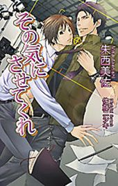

🏠
日
月
縦書き／横書き
| 義父～梅花日記～ (アズ・ノベルズ) |
| 丸木文華 |
| (2010) |
|
明治三十三年、二月。
咲いたばかりの梅の花が連日続く物憂い雨に打たれ、その白い花弁をはらはらと散らせている。
延々と流れる読経の声。果ての見えない弔問客の列。ひそひそと交わされる噂話。
八歳の徹雄にとってこの葬式の沈鬱な息苦しい雰囲気は退屈なものでしかなく、父、清一の傍らにちょこんと座り、絶えず浮ついた調子で周囲をキョロキョロと見回していた。
「もう少しの辛抱だ。我慢しろ」
父の囁きに、徹雄ははいと頷き、下を向いてこの苦痛な時間をじっと耐える。
紀田財閥の子息である清一の側にいるこの見慣れぬ少年を皆が不思議そうな目で眺める中、葬儀は粛々と進められていく。
清一は庶子にもかかわらず、この紀田財閥初代総帥、紀田直四郎の葬儀の喪主を務めている。それは直四郎の遺言に従ったものであり、そしてその事実が、直四郎は清一を次期総帥にと遺言書にしたためたのではないかという噂を、真実味のあるものにしていた。
そして、その清一が幼い子供を連れてきて、この席に並ばせている。隠し子でもいたのであろうかと、周囲が好奇の視線を向けるのも当然のことだった。
衆目を集める清一の姿はその肩書きを抜きにしても際立っており、その周囲だけ空気の密度が違うようでもあった。肩幅が広く、肉の厚い逞しい体に黒紋付の羽織袴を着た清一は、二十代の若者とは思えぬほどの貫禄があり、威圧感すら漂っていた。
彫りの深い顔立ちに黒々とした太い眉と力強い光を持った目は、我が強く自信に漲った若い雄の誇りに満ちあふれており、この紀田財閥総帥の荘厳かつ、水面下で巨大な利権や莫大な財産を巡る欲望の渦巻く壮絶な葬儀においても、まったく臆することなく、堂々としていた。
幼い徹雄はこの見知らぬ不安な場所にいても、この父の側にさえいれば、安心していることができたのである。徹雄は清一の傍らにぴたりと寄り添い、規則正しい音調で唱えられる読経の声を聞きながら、うつらうつらとしつつ戯れに畳の目を数えたりしていた。
葬儀は滞りなく終わり、酒宴の席に移動する前に、徹雄は向島の屋敷に戻るように清一に促された。その合間にも幾人もの関係者たちがその子供は何者かという問いを遠回しに清一にぶつけたが、清一は曖昧にいずれまたと答えるのみだった。
「徹雄。今日は疲れただろう。ぐっすり眠るんだぞ」
自動車に乗せられる前、そう言って清一は徹雄を抱きしめ、強く頬擦りした。
「お父さん、今夜は帰ってくるのですか」
「ああ、遅くなっても必ず戻る」
「眠らないで待っています」
「ちゃんと寝ていろ。戻ったら起こしてやる」
清一は愛息の額に軽く接吻し、首筋に鼻を寄せ、ため息のように囁いた。
「お前は梅花の匂いがするな。徹雄」
それは庭園に咲く梅の匂いが移っただけなのではないかと徹雄は思った。けれど、あの雨の中儚く散ってしまう梅花の香りをこの身に引き継ぐことができたのなら、それは幸せなことだと幼心に感じた。
二月初旬の酷寒の中、執り行われた葬儀。徹雄は自分がどうしてこの場に伴われたのか当然まるで分からずにいたが、後々、これは最初の清一の決意表明であったことを知る。
清一、二十五歳。徹雄、八歳。
翌年の春、清一は徹雄を紀田家の正式な養子として迎えることになる。
困ったとき左下に視線を泳がせるのは、紀田徹雄の無意識の癖だった。
それは常に自分の右側に徹雄を置いていた父、清一の、大きな分厚い手を見て心を落ち着かせていた、幼少の頃の名残である。
「先生、でも僕には、自分にそれほど絵の才能があるとは思えないんです」
運ばれてきたみつ豆にはほとんど手をつけず、徹雄は長い睫毛を伏せた。
茶屋の座敷の片隅に、軒先にぶら下がった風鈴の音が微かに響く。盛夏の暑さはじっとりと着物の下の皮膚を汗で湿らせ、僅かに吹く生温かい風が紅潮した頬を撫でていく。
白絣に袴姿の徹雄の青く刈り上げた襟足には、まだ乳の匂いのしそうなあどけなさがあった。いくら野に出ても一向に日焼けしない真っ白な皮膚は、女の子に産まれたらさぞかし美人になったのにと、乳母にからかい半分に散々惜しがられたものだ。
その節のない細い白魚のような手を、浅黒い男の指がぐっと握りしめる。
「才能はある。だからこうして何度も君に話をしているんじゃないか」
「そう言っていただけるのは嬉しいんですが──僕には、自信がありません。こんな覚悟のまま画家を志しても、きっと上手くはいかないでしょう」
「そんなことはない」大きな声で安田荘平は徹雄の不安を否定した。「僕が太鼓判を押すよ。君は必ず、将来日本の画壇を背負って立つ人間になる」
少し大げさに思える物言いに、徹雄は白い歯を見せて微笑む。自分より一回りも年上のこの男は、時折とても少年めいた表情を見せる。
そういった若く新鮮な心意気が芸術家には必要なのだろうと徹雄は思う。小学校の頃から師事している安田を尊敬しながらも、不思議とどこか弟を見るような眼差しで眺めてしまうのは、この頻繁に垣間見える幼さゆえだろうか。
「ありがとうございます、先生。ですが、第一、父が許してくれません」
「それは分からないよ。絵の道を許してくれないのなら、僕を雇うわけがない」
「父は芸術の価値を認めています。僕が絵を描くことが好きだと知って、先生を呼んでくれました。けれど、父は趣味以上には考えていません。僕の道は、すでに父の中では決まっているんです」
徹雄は物心ついたときから、父に後継ぎとしての心得を幾度も説かれてきた。
紀田財閥二代目総帥である父、紀田清一は、一人息子の徹雄を後継ぎにすることになんの疑問も抱いていない。徹雄がまだ言葉も十分に理解できない幼い頃から、清一はありとあらゆる商売の手法を息子にこんこんと言い聞かせてきたのである。
しかしその話の多くは、徹雄にとって頭では理解できるものの、心情的には受け入れがたいものばかりであった。商売敵との熾烈な競争、相手を蹴落とすための策略や悪評流し、必要とあらば騙し、欺き、裏切るその非情な父の手段に、共感することは難しかったのだ。
徹雄は元来、心の優しい、競争を好まないおとなしい気性の持ち主であった。今までの人生で他人に対して声を荒らげて憤ったことなど一度もなく、心底誰かを憎んだこともない。そんな徹雄が父の物騒な講釈を居心地の悪い思いで聞き流してしまうのは、仕方のないことだった。
「だが、君は自分が商売だのなんだのという世界には向いていないと、そう感じているだろう」
「それは──」
「君にはそういった目まぐるしい競争の世界は似合わないよ。金だの権力だのというものは、君の繊細な感受性には耐えられないはずだ。それとも君は、自分がお父様のような人物になれると思うのかい」
すぐさま首を横に振る。父は自分とは対極の存在であるということは、とうに分かっている。
「そうだろう。君自身もそう感じているのなら、もう迷うことはないじゃないか」
安田は徹雄の肯定に勢いを得たように何度も頷いた。丸い黒ぶち眼鏡の奥で柔和な瞳が輝いている。
「まず、お父様に君の感じていることを話した方がいい。君が何をしたいのか、それを正直に打ち明けたことなど今までなかったんだろう？」
「ですが──僕自身、父の望む以外の道など、考えたことは──」
「違う。君はあえて考えないようにしていただけだ。はなから諦めてしまって、考えるだけ無駄だと、戦う前から負けと決めつけていただけなのだ」
熱のこもった口調で力強く安田は説得を続ける。
「僕はね、嘘偽りなく君の才能に惚れ込んでいる。君の絵には、従来の型にとらわれない奔放な美しさがあるんだよ。今は日本の油彩画の開拓期だ。このところは印象派といった新しい画風がもてはやされているが、いつの時代も流行を追いかけるだけでは発展しない。君のように何にも影響されない、伸びやかな力が芸術を率いていくのだ」
常にない安田の力強い演説に徹雄は圧倒されていた。いつも穏やかでのんびりとしたこの男に、こんな情熱が秘められていたとは知らなかった。
言われてみれば、安田の言うことにも一理ある。徹雄はこれまで父に自分の意志を話したことはなかった。それは話しても無駄だと思うよりも、あまりにも父が絶対的な存在であったために、自分の考えを打ち明けるという発想そのものがなかったのである。
四日後の八月十五日、徹雄は十七になる。この歳になるまで父に何も意見しなかったのも、仮にも一人の男子としてどうなのかと自分の中に僅かな疑問が浮かび上がる。
もしかすると、父もただ頷いてばかりの息子に不安を抱いているかもしれないのではないか。そんな空想すら生まれてきて、徹雄はまるで自分が欠陥のある男のように思い始めた。
昔から男の子にしてはおとなしすぎる、静かすぎると言われてきた徹雄の心のしこりのようなものが、ここにきて急に存在感を増し始める。自分にも意志がまったくないわけではない、ただそれを主張するのがさほど重要なことだと感じなかっただけだ。
「分かりました。父にも話してみましょう」
とうとう、徹雄はそうはっきりと口にした。安田は教え子の答えに喜びを露にし、たとえ反対されてもきっと僕がなんとかしてやろう、僕が君のお父様に頭を下げて説得してやろうと、これまた大げさな約束をした。
しかし、実際父に話したところで今までと何かが大きく変わるわけではないと徹雄は考えていた。もちろん絵を描くことは好きだ。それを仕事にできたらどれほど幸せなことだろうと思う。だがこれまで何不自由なく育ててもらった上に、画家になりたいなどという我が儘を押し通すつもりなど徹雄には毛頭なかった。
徹雄は自分の身分を十分に弁えていたのだ。彼は紀田財閥総帥の実の息子ではなかった。血の繋がりのない養子なのである。
＊＊＊
お帰りなさいませ、と十数人の使用人たちが徹雄の帰りを出迎えた。
赤坂の一万坪ほどの広大な敷地に建てられた純和風建築は、紀田財閥を一代で創り上げた清一の父、直四郎が建てたものである。
数棟の離れはそれぞれ独立した邸宅ほどに広く、直四郎が幾人もの愛妾と彼女らに産ませた子供たちをそれぞれ住まわせるために造られた。古くから権力や富を得た男が愛人を囲うのは世の常であるが、直四郎もその例に漏れず、十人あまりの妾を敷地内に住まわせていた。
清一はその愛人の子供のうちの一人であり、離れの棟の一つで育ってきた。今では先代の直四郎が病没したため戸主として母屋に住んでいるが、庶子である清一が後を継ぐことができたのは、その人並みはずれて秀でた頭脳と、目から鼻へ抜けるような生まれついての商才のためであった。
先代直四郎は没落士族の娘に産ませたこの子供のずば抜けた才能に早くから気づいており、それと比べて正妻の子である正太郎のあまりに凡庸な頭に、口には出さなかったが随分昔から腹の中では清一を後継ぎとすることを決めていたような感があった。
その証拠に、清一を徹底した英才教育のもとに置き、幼い頃から独逸語などを完璧に覚えさせ、勉学を叩き込み、あっさりと予備門に入学、弱冠二十歳で帝大を卒業させてしまった。
その後は父について商売を学び、欧米にも留学する予定があったが、なぜかこれを清一は固辞した。
その理由は徹雄である。当時、すでに母の亡かった徹雄は実父の自殺により孤児となり、実質清一が後見人として面倒を見ていたからだ。
橘啄朗──徹雄の実の父親は、息子が二歳の頃に自殺した。商売を知らない典型的な世間知らずの公家華族であった啄朗は、財産を騙し取られ、最愛の妻も病で失い、絶望の果てに自ら命を絶った。
清一は予備門で啄朗と同期であった。豪放磊落な性格の清一と繊細な感受性を持った啄朗は正反対ながらも不思議と馬が合った。加えて成績においても常に一位二位を争う好敵手であったため、お互い一目置いていたのだ。
そんなとき、啄朗の父が急死し、長子であった啄朗は若くして橘子爵となった。家に多大な負債があることを知り、学校を辞め商売に乗り出した。さらにその頃入れ込んでいた芸妓が子を孕み、花柳界の女と一緒になるなんてという周囲の猛反対を押し切って籍を入れ、そして徹雄が産まれたのだ。
それをきっかけに親類縁者から絶縁された啄朗だが、愛しい妻は徹雄を産んですぐに他界。男手一つで幼子を抱えていたが、その上財産も失い、元々浮世離れして脆い精神を有していた啄朗は呆気なく首を吊ってしまったのだった。
当時、清一は十九歳。大学卒業を間近に控え、将来父から財閥を託されるであろうことはほぼ確定していた頃合いだった。
忌まわしい子供として親戚の誰もが引き取りたがらなかった徹雄を、まだ学生であった清一は父に頼み込んで、向島の別邸にて面倒を見た。彼は友人の苦境を救ってやれなかった悔恨を、その息子を育てることで慰めようとしたのかもしれない。
しかし、清一が啄朗の状況を知らなかったのも無理はなかった。啄朗が学校を辞めてからも頻繁に家を訪れていたが、啄朗は最悪の状況であることなど何ひとつ清一には打ち明けなかったのだ。
そこには華族としての誇りと、そして学校で首席の座を争った友人に無様な姿を見せたくないという矜持があったのだろうか。
残された徹雄は、実の両親のことなど覚えてはおらず、しばらくは清一を本当の父親だと信じて育ってきた。そうではなかったと知ったのは、徹雄が九歳になってからのことだ。その年は、直四郎が六十三歳にして脳溢血で亡くなり、清一が二十五歳で紀田財閥二代目総帥になったその翌年のことだった。
紀田邸の離れから母屋に移り、そこへ徹雄を正式な養子として迎え入れたことで、徹雄は父と信じていた人が本当は他人であったことを知らされたのだった。
──それにしても、なぜお父さんは僕などを養子にしてくれたのだろうか。
徹雄は母屋の西端にある自室への廊下を歩きながら、これまでに幾度も繰り返した疑問を頭に浮かべる。
幼かった自分が勘違いをしてお父さんお父さんと呼んでいたときも訂正ひとつしなかったし、正式な養子ではなかった頃から紀田徹雄という名前を名乗らせていた。今でこそ清一は三十四歳という年齢であるが、徹雄の面倒を見始めた頃の清一は僅か十九、しかも学生だったのだ。そんな若い頃から将来自分を養子にしようと考えていたのかと思うと、それもおかしい気がする。
しかし、控えめな性格の徹雄は父にそんなことを正面切って訊ねることはできなかった。分かっているのは、自分が父にとても愛されているというその一点のみだ。
「おお！ 徹雄君、徹雄君じゃないか」
「あ、加村先生。どうもご無沙汰しています」
向かいの厠から赤い顔をして危なっかしい足取りで出てきたのは加村茂──清一の友人の一人である。東京でも五本の指に入る大病院の副院長であり、彼の父である院長は清一の父直四郎の主治医でもあった。
家同士の繋がりもある上に、剣道道場で幼い頃から竹刀を交わらせていた仲である。徹雄の知る限り、加村は清一の最も気の置けない友人だった。
「やあ、相変わらず涼やかな顔をしているなあ。この蒸し暑い中で、君の周りだけストンと気温が落ちているようだよ。今学校は夏期休暇中だろう」
「はい。午前中に私塾で勉強をして、午後から絵を習っていました」
「ほうほう、なるほど。充実した一日じゃないか、実に結構だ！」
加村は人なつこい表情を浮かべ、からからと笑った。確か清一の二つ年上だったと思うが、引き締まった清一の体とは違い、その腹は笑うたびにゆさゆさと揺れ、巨大である。
しかしこの男がいるということは、当然清一も帰宅しているはずだ。いつも夕食に間に合うかどうかという時刻にならないと顔を見ないので、まさかこんな夕暮れ時にいるとも思わず、使用人にも訊ねなかった。
「父はもう帰っているんですね。珍しいな」
「いや、ついさっきだよ。料亭で一杯引っかけてきたんだが、飲み足りないのでお前の家で飲もうということになったんだ。君は今帰りかな」
「はい。あの、父に帰宅の挨拶をしたいのですが、今はお邪魔でしょうか」
「そんなことはないよ。さあ、一緒に行こう」
気のいい加村は朗らかに笑いながら、ぽんぽんと徹雄の肩を叩いて歩き出す。
先を行く加村が床を踏みしめるたびに、鶯張りでもないのにきいきいと奇妙な音が響く。しかし、清一が歩けばもっと大きな音がするのだ。見た目には巨漢というわけではないが、なにせ六尺はある大男であるし、着物をはだければみっしりとした見事な分厚い筋肉がその全身を覆っているために、見た目よりも遙かに重量があるに違いない。
一方、徹雄は歩けども歩けども音がしない。以前清一に「お前は忍者になれる」とからかわれたことがあるほどだ。女だってもっとやかましく歩くとすら言われてしまう。確かに、角を曲がってきた女中がこちらの気配に気づかず、出会い頭に悲鳴を上げられたこともあった。それから、誰か人が来ることを察知したときは、意識的に音を立てて歩くようにしているのだ。
単純に体が軽いこともあるが、徹雄は滅多に家の中を走ったり急いで移動することがない。それに、この家屋で誰かが忙しく立ち働いている音や、庭園の鹿威しや鳥のさえずりが徹雄は好きなのだ。そんなささやかな音を聞き取ろうとするために、無意識に足音を忍ばせてしまっているのかもしれないと、徹雄は自己分析をしていた。
徹雄はこの世に溢れているあらゆる音色、そして色彩、すべての感覚を愛していた。もしもこの耳が聞こえなくなってしまったら、この目が見えなくなってしまったらと、まだ病にも冒されていないのにそんな不安を感ずることがある。
幼少の頃から、父を清一だと思い込んでいても、母がとうに亡くなっていることは聞かされていた。そのことを幼心に、お母さんはもうこの世の何ものも見ることも、聞くこともできないのだと思うと、それはとてつもない不幸のように思えた。
そんな感覚の持ち主である徹雄が絵を描き始めたのは、自然な成り行きだと言える。その緻密で繊細な描写は絵心のない清一にも一見して非凡なものだと分かり、すぐに一流の画家を呼び師事させた。
けれどそれでも、清一の中では、それは嗜みの領域を出ないはずであり、他にも習わせた様々な稽古事となんら変わらぬ教養の一部のはずである。
清一は三十を越えてから尚激しくなった周囲の結婚の催促の声には一切耳を傾けず、ただひたすら徹雄を自分の後継ぎとすることを明言し続けてきたのだ。これは当人である徹雄にもまったく理解はできないが、それだけ自分を後継者に推す意志が固いのだと思えば、画家になることなど絶対に許してはくれないだろうと思い至るのは当然だった。
──安田先生はああ言ってくれたが、お父さんが他人の意見に動かされることなど、まずないだろう。
父が自分に対しては優しいが、他人に対しては非常に冷酷なことを徹雄は知っている。しかし、今徹雄が初めて自分の気持ちを父に訴えてみようと思ったのは、安田に煽られて僅かに込み上げた男の誇りのためであった。
血の繋がらない養子の自分に対してここまでの厚遇をしてくれる父には、なんの不満もない。感謝してもしきれないという思いばかりだ。けれど、自分も一人の男としての意識があるということを、今父に示してみたいという気持ちがあった。
それは、生来優しくおとなしかった徹雄を扱う清一の態度が、手中の珠を愛でるような、まるで一人娘に対するようなものであることに、心の奥底で違和感を覚えていたためかもしれない。
お前の細い体ではすぐに怪我をしてしまうからと、まず武道全般は習わせてもらえなかった。それでも、剣道だけはと熱心に頼み込み、防具がついているからいいだろうと渋々許してくれたのだ。
その上過剰な心配性で、少し遠い場所に行くと言えば必ず自動車で送り迎えをされた。まだ街中を走る舶来ものの自動車は珍しく、通行人からじろじろと注目されて気まずい思いもするが、清一は一人の遠出をなかなか許してはくれない。
この歳になっても外が暗くなってからの外出は許されず、例外は清一が同伴するときのみだ。一体どこの箱入りのお嬢さんだと級友に笑われ、徹雄は初めてこの扱いが少しおかしいものなのだと気づいた。
それも父の愛情の表れであると知っていたので、嫌だと言うことなどできなかった。しかしその鬱屈は確実に、少しずつ徹雄の腹の奥に積み重なっていったのだ。
「やあ、お客さんを連れてきたぞ」
庭園に面した座敷の襖を開けると、清一は脚を崩して卓子にもたれかかり、庭を眺めながらぐいぐいと杯をあおっているところだった。
そんな少しだらしのない格好をしていても、清一は絵になる。日本人離れした分厚い体にはなかなか大きさの合う着物がなく、その身にまとっているのはいつも特注のものだ。
彫りの深い端整な横顔は精悍で雄々しく、筆でくっきりと描いたような太く黒い眉はその頑強な意志を表しているように思えた。何よりも、その下で輝く目は猛禽類のような鋭さを孕み、通常の人間であれば睨みつけただけで震え上がって逃げ出してしまうのではないかと思うような迫力があった。
しかし加村の言葉にこちらに顔を向けると同時に、そこに息子の姿を見て、清一の目の鋭さは一瞬で和らぎ、悪童のように破顔した。
「これはまた、そうやって並んでいるとまるで生臭坊主と稚児だな」
「なにを！ お前こそ、徹雄君と並んでいるとまるで人さらいだぞ」
「だまらんか、このヤブ医者。おい徹雄、そんなところにいないで、こっちに来なさい」
「はい」
言われるままに徹雄は清一の側に寄り、きっちりと正座した。
「ただいま帰りました」
「うん。こいつとは途中で会ったのか」
「はい。すみません、僕、こんなにお父さんが早く帰っていると思わなくて、ご挨拶もせずに部屋に行く途中だったんです」
「ははは。うん、今日は珍しく早く帰ってきたんだ。名古屋の工場がようやく完成して稼働し始めたからな。ここのところまともに眠れなかったが、これからは少しゆっくりできそうだ」
腹の底に響く低い、それでいて耳の奥をくすぐるようなどこか甘い声。清一の声は独特だ。女中の誰かが、旦那様は声だけで女を孕ませるなどと冗談を言っていたが、徹雄にとっては幼い頃から慣れ親しんだ、ほっと安心するような声に聞こえる。
ふと、徹雄は清一の胸元に紅がついているのを見つけた。そういえばその着物からふんわりと脂粉の香りが漂っている。
徹雄は僅かにたじろいだ。普段あまり清一から色事の雰囲気を受けたことはなかったからだ。
視線に気づいた清一は、怪訝な顔で胸元を見下ろし、その紅の跡を見つけて、あっと声を上げた。
「何、なんだこれは」
「あっはは。お前、意外と抜けているなあ。今頃気づいたのか」
「加村！ お前、知っていたなら教えろ！ くそ、こんな分かりづらい場所に......」
清一は舌打ちをしてその痕跡を乱暴に拭う。徹雄はその行動を不思議に思った。なぜ父はこんなにも慌てているのだろうか。
その様子を見て、向かい側に腰を下ろした加村がニヤニヤと笑いながら徹雄に囁いた。
「いやね、ここに来る前にちょいと冷やかしてきたんだよ」
「はあ。他でもお酒を飲んできたんですね」
「うん、そう。ところで徹雄君、君、お父さんが新橋や日本橋などでどれだけ有名か知らないだろう」
「新橋や日本橋......花街の女性に、ということですか」
「ああ、その通り！」
「よせ、加村。徹雄におかしなことを吹き込むんじゃない」
清一は目を剥いて加村を制止する。しかし赤ら顔の生臭坊主の説法は止まる気配がない。
「中には花代などいらないから会いにきてくれと言う女もいるほどだよ。こんな目つきの悪い男のどこがいいんだかねえ......まあ、あのお宝の味を知った女はもう忘れられないんだろうなあ。あんなものには滅多にお目にかかれないとね、こないだ金華楼の......」
「加村!! 叩き出すぞ!!」
冗談ではない剣幕で清一が声を張り上げる。側に座っている徹雄の鼓膜までもがビリビリと震えるほどの大音声だが、加村は慣れた様子で大げさに肩をすくめるだけだ。
「なんだ、そんな目を吊り上げて。世が世なら徹雄君はとうに元服している歳だろうが。もう立派な大人の男だぞ。女の話の一つや二つ、聞かせてやって当然だろう。なあ、徹雄君」
「はあ、あの......僕には、どういう話かよく分からないのですが......」
「ほら、お前が屋敷に閉じ込めておくからこれだ。これじゃいつ男の本懐を遂げられるか分からんよ。そうだ、今度、俺が君をいいところに連れていってやろう」
「いいところ、ですか」
「君が男になれる場所だよ」
「加村......」
地の底を這うような声で清一は呟いた。さすがに加村もこの辺りが引き時だと思ったのか、手を上げて降参の意を示す。
「ああ、分かった分かった。頼むからそんな呪い殺すような声を出すな」
「いくらお前でも徹雄に悪影響を及ぼしたら容赦せんぞ。地獄を見せてやるからな」
「おお、怖い。しかしまぁ、これだけもてる男が所帯を持たないのだから不思議だねえ。それとも亭主のある女に懸想して不義でも働いているのかね。徹雄君、知らないかい」
「い、いいえ、僕は全然」
「何度も言っているだろうが。俺は所帯は持たん。妻も子も作る気はない。徹雄がいればそれでいい」
「ねえ、これだろう。俺にはさっぱり理解できないよ。ああ、徹雄君はいいんだ。君はこいつにはもったいない素晴らしい逸材だからね。なんなら俺が養子に欲しいくらいだ」
「お前にはもう五人も子供がいるだろう！」
「いやあそれでも欲しいよ、徹雄君は将来有望だからね。しかしね、このご時世これだけの地位と財産のある男がただ女遊びをするだけで結婚しないとなっちゃあ、周りもおかしいと思うわけだよ。だからね、子供はいいが、せめていい加減、誰か貰っちゃどうかとね、俺も口を酸っぱくして言っているんだがね。このままじゃあただのエゲツない道楽者だよ。なにせこいつが女で遊び尽くしていたのはもう十代の初めの頃からなんだからね」
「加村、その話はもううんざりだ。これ以上しつこいと、貴様の病院はあの世の入り口だとあることないこと触れ回るぞ」
「お父さん......」
思わず徹雄の口から批難めいた声が漏れる。いくら気心の知れた仲といっても、友人にその言い草はないだろうと言外に含める。
清一は熱くなりすぎた自分に気づいたのか、気まずそうに咳払いをし、取り繕うようにとっくりから酒を注いだ。気づいて徹雄が慌ててそれに手を添える。大木の幹のようなごつごつとした手に重ねるて見ると、なるほどこれでは稚児と言われてしまうのも仕方がないと我ながら諦めたくなるほど、白く細い女のような手だった。
「お父さん、僕が」
「いい、いい。そんな酌婦のような真似をするな」
清一はその手をそっと外し、自分で注いだ酒を一口に飲む。
──酌もさせてもらえない。どうしてお父さんは僕にこんな扱いばかりをするのだろう。
芽生えては沈んでいくこの小さな不満の数々を、どう片づけてよいのか徹雄は分からなくなっていた。
『違う。君はあえて考えないようにしていただけだ。はなから諦めてしまって、考えるだけ無駄だと、戦う前から負けと決めつけていただけなのだ』
安田の声が脳裏に蘇る。そうだ、自分は今日初めて父にこの意志を伝えてみようと決めていたのだ、と徹雄は思い返す。
仕事の大きな山場を越えたらしい清一は、いつもより早く帰宅して友人を相手に酒を飲み、比較的機嫌がよさそうだ。この雰囲気ならば口にするのも容易いのではないか。そう思い、徹雄は心を決めて口を開こうとした。
「そういえば、徹雄君は来年、中学校を卒業するんだったな」
しかしその直前で、加村が思い出したように質問をしてくる。
出ばなをくじかれた形になり、徹雄は内心戸惑ったが、素直にはいと答えた。考えてみれば、ここでこの話が出たのはむしろ好都合なのかもしれないとふと気づく。
「徹雄は頭がいい。このままいけば一高に無試験で入学できそうだ」
「え、そりゃ一体どういうことだ」
「知らないのか。来年から中学の成績優秀者は試験を受けずに入学できる制度が始まるそうだ。こいつなら、まず間違いなくその選に入るだろう」
「へえ、そりゃすごい。一高なら帝大もほぼ確定だなあ。いやはや、しかしいいのかい、紀田よ」
「何がだ」
「一高は全寮主義だろう。徹雄君を手元から離さないお前が、可愛い息子を寄宿舎になんぞ預けられるのか」
「......その点は抜かりない。いろいろと考えがあるんでな」
「お父さん......！」
思わず、徹雄は無意識のうちに声を上げていた。二人は普段おとなしい徹雄の突然の声に、驚いた顔でぽかんとしている。
咄嗟に声が出てしまったが、この場ではなんとも言いようがなく、徹雄はさっと頬を赤く染めた。
「あ......あの、お邪魔してすみません。それじゃ、僕はこれで」
「徹雄君、君も一緒に飲んだらいいじゃないか」
「いいえ、そんな。勉強がありますので、すみません」
慌ただしく一礼すると、そそくさと逃げるようにその場を後にした。
廊下を歩きながら、火照る顔を押さえて自己嫌悪に陥る。しかし、あのまま会話を続けられるのが、不思議なほど耐えがたかった。自分の意志に関係なく、自分の道が決められている。そしてそれがなんの疑問もなく周囲にも受け入れられている。その事実を目の当たりにして、徹雄は今更のように愕然とした。
おそらく今までだったら、なんとも思っていなかっただろう。しかし、今日の安田との会話で、今まで気づかなかったことに目を開かされてしまった。
──実の息子でない僕に、お父さんはあまりにも大きなものを与えてくれた。しかし、このままでもいいのだろうか。
清一の望む通りに道を歩めば、おそらくは来年一高に入り、帝大に進み、そして卒業した後は紀田財閥の未来の後継者として清一の後について仕事をする日々が始まるのだろう。だが、そこに徹雄の意志はない。ただ清一の望むままに歩いてきた、ただの人形だ。
「堪忍してください！」
そのとき、薄暗い庭園からただならぬ声がした。驚いてそちらを注視すると、この前奉公に入ったばかりの若い女中が男に絡まれている。発作的に助けようと体が動いたが、その男の顔を見て、徹雄はぐっと足を踏ん張った。
男は紀田正太郎──清一の腹違いの兄であり、徹雄にとっては血の繋がらない伯父ということになる。正太郎は先代の嫡子だった。つまり、本来ならば紀田財閥を継いでいたはずの男だ。
「後生ですから、おやめくださいまし！ 奥様が、奥様が」
「あんな女のことなど気にするな。石女が、鼻っ柱だけ高くてまるで面白くない」
「ああ、正太郎様、お願いします、あたしは......」
「なんだお前、生娘か。乳が固いな。この俺がすぐにほぐしてやろう！」
「あ、あ、誰かあっ」
正太郎は、今にも涎を垂らしそうな真っ赤な顔をして下卑た声で笑っている。ひどく酔っているらしい。今日も一日中、寝転がって酒を飲んでいたのだろう。
そのまま離れまで引きずられていく女中の声は次第に小さくなり、憐れな呻き声が途切れ途切れに聞こえてくる。可哀想だが、この家で正太郎を止めることができるのは清一だけである。今までにも何人もの女中が正太郎の毒牙にかかり、泣き寝入りしてきた。この悪辣な獣の手から逃れるには、あの離れに近づかないという手段しかないが、紀田家に入ってしまえばそれは不可能である。
正太郎にはすでに妻がいるが子供がない。しかし手当り次第に手をつけた女中に幾人も産ませており、興味を失った妻とはおそらく没交渉なのだから石女などと責めるのは気の毒である。
しかし、正太郎は自分の非など認めようとしない。かつての彼は気の小さい男であったようだが、やはり庶子である清一が自分を出し抜いて総帥になったことで、何かが壊れてしまったのだろう。立派な肩書きを与えられてはいるがまったく仕事などせず、日々漁色に励んでいる。
徹雄は悲しげな女の声から逃れるように、自分の部屋へと急いだ。
そのときふいに、清一から漂っていた微かな脂粉の匂いや鎖骨の下の紅の跡、そして加村の言葉が思い出され、なんとも形容しがたい複雑な心地になる。
──本当に、なぜお父さんは妻を持たないのだろうか。
聞けば清一は相当女性に人気があるらしい。玄人筋の女性に花代などいらないと言わしめるほどのもてぶりだ。結婚と言ってもただ形だけのこと、女遊びなどこの明治の世では男の甲斐性と言われているし、他にも女を作りたいなら作ればいいだけのことだ。清一ほどの男になれば妻になる相手はよりどりみどりで、商売に有利になる縁組もいくらだってあるだろう。これまでも、そういった話をいくつも持ってこられていたはずだ。
正太郎に犯されている女の喘ぎ声に当てられたのか、徹雄には清一のその不可思議な行動がどこか不潔なもののように思えてならなかった。女をもののように扱う兄同様に、女など結婚するに値しない下等な生き物とでも考えているように思われて、本能的な嫌悪感が込み上げた。
しかし徹雄には分かっていた。今いちばん嫌悪しているのは、女が犯されると分かっていながら、止めることのできなかった自分自身である。そして、誰もそれを諫めようとしないこの家全体の歪んだ空気である。
今でもこの広大な敷地内には、紀田直四郎の妾やその息子や娘が暮らしている。正月や花見などの催しの際には皆が一堂に会し、奇妙な調和の中、大人数の家族が様々な感情を胸の内に秘め、面の皮だけで笑い合っている。
この場所は屋敷や庭園は美しいが、辺りには息が詰まるような湿った因縁がぐるぐると渦巻き、女たちの抑圧された仄暗いため息がねっとりと聞こえてくるようで、ぞくりと寒気のすることがある。
徹雄は今でも覚えている。九歳の時分にこの家に養子として迎え入れられたとき、家の者全員が広間に集い、この身を貫く羨望と憎悪の眼差しに戦慄させられたことを。
あのそくそくと醸し出される一種の妖気は、なんと言ったらいいのだろうか。五臓六腑を絞られるような排斥の空気の中、徹雄は逞しい養父の腕に縋り、ただ震えていた。
それまでも清一の存在はこの世で唯一徹雄の頼れる存在であったが、紀田の本家に引き取られてからは尚一層父を崇拝するようになっていったのだ。
だが、今日に至るまで彼らから特に嫌がらせをされたというわけではない。皆清一の冷酷さを知っているので、誰も徹雄に手出しをしようとはしなかった。
清一が直四郎の葬儀の喪主を務めたときや次期総帥になることが知らされたときはもちろん、身内から激しい反発があっただろうと思われる。
だが、清一は自分に反抗する者たちに対して容赦しなかった。いい例が、直四郎の正妻、光子である。彼女は当然、清一が正太郎を押しのけて総帥の座に立つことに強硬に反対した。紀田財閥の数人の役員も味方につけて、清一下ろしを公然と始めたのである。
清一はすぐさま逆襲を始めた。正太郎の後ろについた役員たちを、他企業に情報を流していたり横領していたとされる事実を次々と暴き出して失脚させ、有能な若い部下たちを引き立て、役員の顔ぶれを一新させた。
結果、紀田財閥傘下の企業は軒並み業績を上げ、清一は身内に巣食った敵に完勝したのである。
光子と正太郎を母屋から追い出しいちばん小さな別邸へと追い込み、光子は清一を呪いながら胸の病で夫の死の二年後、呆気なく没した。
表面だけを見れば古い保守派の抵抗に実力主義の清一が打ち勝ったという図式に見えるが、その裏では密かに黒い工作があったのではないかと噂されている。つまり、旧役員の様々な失態は巧妙に偽造されたものだというのだ。信憑性のある罪を作り、濡れ衣をかぶせて追い出してしまったのだと。そこには裏で莫大な金がやり取りされたと、まことしやかに囁かれた。
このような背景があるため、この家では誰も清一には逆らわない。唯一、正太郎だけが時折、陰湿な言動をとることもあったが、それもそう頻繁ではない。
しかしそれでも、徹雄は自分の育ってきたこの家が好きだった。先刻のように爛れた空気を察知し胸を締めつけられるような息苦しさを感じることもあるが、それと同時に、この場所に大きな愛着も持っていた。
徹雄は何かを心底嫌うことができない。あの正太郎のことですら憐れだと感じ同情する気持ちがある。
どこをとっても、自分は女々しいのかもしれない、と徹雄は思う。何にも立ち向かうことができない。ただ流されるままで、自分の考えていることすら口にできない。
部屋に入ると、糸が切れたように、徹雄は畳に膝をついた。
これまでの日々の中で、徹雄は今最もやり切れない苦しみと気怠さを感じていた。骨が、肉が、この身の何もかもが重いのだ。
何も、安田の言葉がすべてではない。自分はいつか、気づいてしまっていただろう。そしていずれ、この同じ苦痛を味わったことだろう。
やがて女中のお風呂にお入りになりますかという声を聞くまで、徹雄はそのままの姿勢でじっと目を閉じていた。
＊＊＊
風呂に入り夕食を食べた後、徹雄は清一に呼び出された。
いつも食事は清一と二人でとるか一人でとるかどちらかなのだが、今日は加村と飲み食いをしながら夕飯の替わりにしたらしく、徹雄一人の食事だった。
「失礼します、徹雄です」
「うん、入れ」
襖越しに声をかけると、中から大儀そうな返事が聞こえる。
中に入ると、まだほんのりと酒の赤みの残る顔をした清一が、畳に横になり座布団を腹の下に敷いて頬杖をついていた。着物の合わせ目が大きく割れ、逞しい胸板が露出している。この広い胸に女性は縋りつきたくなるのだろうか、とふと徹雄は想像した。
「加村先生はいつお帰りになったんですか」
「ついさっきだ。放っておいたらここで大いびきをかき始めそうだったんで、さっさと俥に乗せて返したよ」
「随分飲んだんですね......明日に差し支えなければいいんですが」
「あいつのことはどうでもいい」
清一がゆっくりと体を起こし、長い脚を曲げてあぐらをかく。白い褌が丸見えだがそれに頓着する様子はない。股間の巨大な膨らみに、さすがに徹雄は伏し目がちになる。
手招きされておずおずと膝でにじり寄ると、ぐっと手を引かれて、たちまち太い腕の中に巻き込まれた。
「今日は様子がおかしかったな。一体どうした」
はだけた胸に徹雄を抱きながら、強い酒の臭いのする口で清一はため息をつくように声を落とした。父の熱い胸に倒れ込んだままの姿勢は気まずかったが、肩を抱く手を振り払うこともできず、徹雄は諦めて体の力を抜く。
「すみません。実は僕、今日話そうと思っていたことがあったんです」
「なんだ、言ってみろ」
「あの......」
そのときふと、この姿勢で胸元に口をつければ、丁度あの紅の位置に跡がつく、ということに徹雄は気づいた。その途端、サッと羞恥の火照りが全身を染めるのが分かる。
発作的に、清一の胸に手をついて体を離す。不意を突かれたような顔をしている父の前で、徹雄はきっちりと座り直した。
「お父さん。僕のこれからのことの話なんです」
──そうだ。この大事な話をするときに、女が甘えるように男の胸に寄りかかって話をするなどというのは考えられない。
何やらかしこまった様子の息子に、清一は少し戸惑っているようだった。
「一体なんの話だ」
「僕は今まで、自分の思うところを話してきませんでした。でも、あと数日で僕は十七になります。そろそろ、己の考えくらいはお父さんに話しておきたいんです」
「うん......そうか」
「お父さん。僕は、画家になりたいんです」
なぜか沈黙することが怖くて、徹雄は一息にその言葉を口にした。
言ってしまうと、あまりにも呆気なく、なぜ今までこんな簡単な一言が言えなかったのだろうと不思議な気もする。
「......画家？」
清一は片眉を上げて目を細める。何か物事の正体を見極めようとするように、少し顔を傾けて徹雄を凝視する。
「お前、本気で言っているのか」
「......冗談ではありません。僕は、自分なりに考えて、それがいちばん僕に合う道だと思ったんです」
「今日は安田に絵を習う日だったな......」
ふいに、清一の視線が徹雄から外れた。徹雄はなぜかそれを不吉なものの予兆のように感じ、背筋に寒気を覚える。
「徹雄。もう話は分かった。行きなさい」
「お、お父さん」
徹雄は思わず畳に手をついて父に詰め寄る。
「何が分かったと言うんですか。お父さんは何を考えているんですか」
「お前は何も心配しなくていい。もう部屋に戻るんだ」
「お父さん！」
徹雄にはハッキリと分かった。清一は安田を徹雄の前から遠ざけるつもりだ。もしかしたら、もう絵も描かせてもらえないかもしれない。
強張った表情で父を凝視する徹雄を、清一は無感情な目でじろりと眺めた。
「そうだな。お前ももう十七になる。そろそろ、勉強に専念して油彩画などで遊ばせている場合ではなかったな」
「なぜ......なぜそうなってしまうんですか！ 勉強はきちんとしています、知っているでしょう！」
「画家になりたいなどと下らないことを考えているようでは、まだ精進が足りていない証拠だ。仮にも一人前の男が画筆を弄んで生涯を暮らしたいなどとは......愚の骨頂だな」
「......そんな」
反対されることは想定のうちだった。けれど、ここまで完膚なきまでに拒絶されてしまうとは思っていなかった。
清一は、少なくとも徹雄の前では優しい父親だった。それは清一がなるべく仕事をこの屋敷に持ち込まないようにしていたことも影響しているかもしれない。
紀田財閥の総帥としての清一は、人の皮をかぶった鬼であるという話なら外に出ればいくらでも耳にするし、実際清一が徹雄が幼い頃から語って聞かせてきた商売のやり方というものも、聞いているだけで商売敵が気の毒になるような話ばかりだった。
それというのも、一代で紀田財閥を作った初代総帥である清一の父が、ひどいデマによってかなりの損失を被ったという教訓から来ているらしい。
辣腕で政府御用達の政商となっていた紀田直四郎は、貧富の差の激しい時代に日清戦争などの軍需品の拡大で莫大な利益を得たが、その製品が酷いものであったというデマを流され、異国で命を賭して働いている兵隊を軽んじたと、そのご時世も影響して世間から「悪辣な金満家」と集中的に批難を浴びてしまった。
それを間近で見ていた清一は、商売には実力だけではだめだ、情報を操る戦略がとても重要なのだと胸に刻みつけられたのであろう。
清一が常に徹雄に言い聞かせてきたことは、まず「他人を信用するな」というこの一箇条である。情で動いてはいけない、他人にこちらの手の内を見せてはいけない、利益だけを考えろ、などと繰り返し、いつも最後はここに辿り着く──他人を信用してはいけない。
そして、やはり自分もその他人のうちの一人だったのだ、と徹雄は気づいた。これまでは徹雄が唯々諾々と父の言うことに従ってきていたから、彼の『身内』だったのであり、一度意に沿わないことを口にしてしまえば、清一の中の息子への信頼は一気に崩れてしまったに違いない。
清一は苦虫を噛み潰したような顔で吐き捨てる。
「あの男に何を吹き込まれたのかは知らんが、とっととそんな下らない考えは捨てろ」
「絵を......絵を、習わせてくれたのは、お父さんじゃありませんか」
「教養の幅を広げる手段としてやらせたまでだ。その範疇を越えるとなれば、もうそれは教養ではない。愚かな筆遊びだ」
「......お父さんは芸術に理解があると思っていました。以前から蒔絵や陶磁器を収集して、いずれ美術館などを開こうとしているじゃありませんか」
「それは我が国の文化が海外に流出するのを少しでも防ぐためだ。親父の代からやっていたことを俺も引き継いでいる。それだけだ。お前の話とはわけが違う」
「僕も、僕もこの国の文化的地位を向上させるための役を担いたいのです！」徹雄は必死で言い募る。「日本は鎖国をやめてまだ間もない、世界的に見て未熟な国です。今、欧羅巴に留学し最先端の画壇を見てきた画家たちが帰国し、この国の芸術界に新たな風を吹かせています。僕もいずれは......」
「そんなつまらん話を俺にするな。時間の無駄だ」
熱のこもった訴えを、バッサリと斬り捨てる。徹雄は息を呑み、大きな失望のために言葉を失った。
「今の話は忘れてやる。明日からまた勉学に励め」
もうこの話は終いだというように、清一は立ち上がった。太く頑健なくるぶしを目の前に見つめながら、徹雄は生まれて初めて父に与えられた屈辱に震えた。
「......いいえ、忘れません」
「なに!?」
「僕は、画家を目指します!!」
自分でも思いがけないほどの頑なな声が上がった。
こうして実際に話をするまでは、却下されても仕方がない、だが自分の意見を父に述べてみたい、という小さな動機でいたはずだった。
しかし今では、まるで画家になる以外に道はないような、そんな切羽詰まった感情に支配されている。これは、思いがけないほどに父の拒絶が激しかったこと、そして徹雄の意見など少しも聞く耳を持たないと分かったことが、徹雄の中に眠っていた自我を目覚めさせたのだった。
膝立ちのまま睨みつけるように清一を見上げると、その拳がぶるぶると激しく震えているのに気がついた。
──まさか、殴られるのだろうか。だが殴られても仕方がない。今初めて自分は父に逆らい、父の意見をはね除けたのだ。
「......お前がこれほど愚かだったとは」
その拳は動かなかった。その代わりに、激情に戦慄く唇が、今まで聞いたこともないような怒号を発した。
「画家になると言うのなら出てゆけ!! 俺は、後継ぎ以外のお前なぞ要らんぞ!!」
徹雄は雷に打たれたように硬直した。
しばらく、打ちつけられた言葉の意味が分からなかった。
──要らない。お父さんが、僕を要らないと言っている。
その衝撃的な意味を理解した頃には、荒々しく襖が開け放たれ、どかどかと嵐のような足音を響かせて清一が去っていき、部屋に一人取り残されていた。
その夜、徹雄は眠れなかった。
清一のあの衝撃的な言葉が耳から離れず、あの恐ろしい声を思い出すたびに心臓が嫌な音を立ててうるさく騒いだ。
いいや、分かっていたはずだったのだ。おそらく九歳になるまでに清一は徹雄に才能を感じ、自分の養子としようと思い立ったのだろう。それは後々自分の後継者とするためであり、それ以外の目的などない。
それなのに、それに逆らってしまった。清一が激怒するのは当然のことだ。
おそらく、自分は父に甘えていたのだ、と徹雄は初めて自覚した。後継者として育てるということの他に、家族としての愛情があるのだと──だから、もしかしたら息子の希望を叶えてくれるかもしれないという、一縷の望みを抱いていたのだ。可能性が皆無だと考えていたら、最初から自分の希望など、父に訴えたりなどしなかった。
しかし、徹雄はもう引き返せないと感じていた。それは画家を志したいという気持ちばかりではない。自分には到底父の後を継ぐことは無理だと改めて直感したからだ。
清一はアクの強い人物である。傲岸不遜、豪放磊落、そんな厳しい字面をそのまま表したような男なのだ。そして、紀田財閥のような巨大な組織を率いていくのには、そういった強靭な気性が必要である。自分では到底敵わない、と徹雄は思う。たとえ任されてしまったとしても、そうなったら自分の代で紀田財閥は終わってしまうだろう。
元々人との対立を好まないおとなしい性質だった徹雄が、こんなふうに父と激しく対立することになろうとは、徹雄本人ですら予想していなかった。
もしかしたら、自分がおとなしいと思っていたのは間違いであったのかもしれない。ただ抑えつけていて表面に出なかっただけで、内側ではあのとき咄嗟に画家になると叫んでしまったような、火のように熱い激情が燃え盛っていたのだろうか。
自分のことが分からなくなるのは初めてのことだった。そして、父のことが心底恐ろしいと思ったのも、初めてのことだった。
出てゆけと言われてしまったが、ここを出たら自分は一体どこへ行けばいいのだろう。もう学校を続けることもできないだろう。そうすると、やはり頼みの綱は安田である。
──朝になったらすぐに、安田先生に相談しに行こう。
今はまだ、自分がどうしたいのか、どうすればいいのか、混乱してしまい考えられない。第三者の冷静な意見を聞けば、少しはこの不穏な動悸も収まるだろうと期待して、徹雄は無理やり瞼を閉じる。しかし一向に眠気は訪れず、少しうとうととしただけで、そのまま朝を迎えてしまった。
朝の食事に清一の姿はなかった。女中に訊ねると、随分早くに会社へ行ってしまったようだ。
「今日も暑いですから、しっかり食べてたんと精をつけてくださいませ」
と、大盛りの飯を盛る慣れ親しんだ女中の親切に、もしかすると彼女とももうすぐお別れなのかもしれないと思い、切なさが胸を締めつけた。
朝食を終えると、弁当を持ってすぐに屋敷を出た。通りに出て俥を拾い、いつも通っている塾ではなく、真っ直ぐに安田のいる画塾『彩天舎』へと向かう。
安田は二十九歳ながら、その若さで自らの手で画塾を立ち上げ、若手を育成しようと燃える情熱的な威勢のいい男であった。
幼少の頃は日本画を学んでいたらしいが、あるとき洋画に触れ衝撃を受けたという。やがて横浜に住む英吉利人画家に師事し油彩を学び、十代のうちに仏蘭西の展覧会などへも出展した。現在は自分が指導する傍ら、自らも来日した伊太利亜人画家に師事し、日々腕を磨いている。
清一が安田に徹雄の絵の指導を頼んだのも、安田が今や日本の画壇でかなり名の知れた存在であるからだ。それはある意味、徹雄の教育にはすべて一流の教師をつける清一のお眼鏡にかなったということの証明だった。
しかし、昨日の悶着があったため、じきに安田は徹雄の教師の任を解かれてしまうだろう。今では父にもの申したことが良かったのか悪かったのか、それすら判断がつかなくなっていた。
彩天舎の門前に到着すると、まだ早い時間だったためか、門下生たちがちらほらとやってきている最中で、まだ何かが始まっている様子はなかった。
「おや、君は......」
入っていいのか分からずうろうろしていると、後ろから声をかけられる。驚いて振り向けば、そこには安田が朗らかな笑みを浮かべて立っていた。
「やあ、どうしたんだい。珍しいね。いつも午前中は勉強じゃないか」
「あ、あの、申し訳ありません、先生......」
「え？」
「僕は......もう、どうしたらいいのか、分からなくなって」
安田の温かい声を聞くと同時に、何かが緩んでしまったかのように涙が込み上げた。徹雄は慌ててそれを隠すために俯く。
そのただならぬ様子に事情を察したのか、安田は徹雄の肩を優しく抱いた。
「何かあったようだね。きちんと話を聞くから、少し応接間で待っておいで」
「は、はい......ありがとうございます」
徹雄はほっとして、安田に促されるままに屋内に足を踏み入れた。安田と話してこれほど安堵の感情を覚えたのは、これが初めてのことだった。よほど自分は父に要らないと言われたことが衝撃的だったのだろうと、改めて己の甘い部分に恥ずかしい思いがした。
＊＊＊
昨夜のことをあらかた話すと、安田はなぜか少し嬉しそうな顔をした。
「君がそこまであのお父上とやり合えるなんて、驚いたなあ」
「......僕も、驚いているんです。まさか、父にあんなことを」
一夜明けてみれば、あのときの自分はおかしくなっていたとしか思えない。今更父に逆らった恐ろしさに体が震えてきて、これからどうすればいいのだろうという不安に押し潰されそうになる。
「君さえよければ、僕のところに来なさい。歓迎するよ」
「先生......でも......」
「いいや、その方がいい。実はずっと考えていたことなんだ。僕はね、近々巴里に行くつもりなんだよ」
「えっ......巴里に？」
「うん。向こうに、来ないかと言ってくれている人がいてね。社交界でも顔の利く人で、何人もの日本人芸術家を支援している。相馬平八郎といってね。ずっと欧羅巴に住んでいるかなりの資産家だ。優れた劇作家でもある」
「すごい方と知り合いなんですね......」
「いや、知人からの紹介でね。僕もずっと前から向こうで本格的な絵の勉強をしたいと思っていたものだから、本当にありがたい話だよ。だから、君も一緒に来ればいい」
「えっ？ で、でも、僕は......」
「実は君の話も先方に言ってあるんだ。将来有望な素晴らしい少年がいるとね。彼はとても興味を持っていたよ。ぜひ会ってみたいと言ってくれているんだ」
「そんな......滅相もないです」
「ねえ、徹雄君」
ふいに、安田は微笑みを絶やさなかった顔を引き締め、真剣な面持ちになる。
「僕はね、今回のことをいい機会だと思っている。僕は常々、君は画家になるべきだと思っていた。君のお父上は許してくれないだろうということも分かっていた。けれど、今回君が堂々と自分の意志を述べてくれたことで、道が開けたと思うんだ。これは、君が一人立ちをする最初にして最後の機会かもしれない」
話がとてつもなく大きなものになってきてしまったような気がして、徹雄は緊張する。
確かに、今自分の目の前には大きく枝分かれした道が二本伸びている。一方は、父に平身低頭謝罪をし、今まで通り勉学に励み父の後を継ぐ道。もう一方は、このまま紀田家を出て、安田とともに巴里へ行き、本格的に画家として突き進む改革の道だ。
きっと、どちらかを選んでしまえば、もう後戻りはできない。しかし、選ぶ他ないのだ。
「もちろん、僕は無理強いなどしないよ。君のお父上のように、従え、さもなくば出てゆけなどとは言わない」
「先生......」
「だから、どうかじっくり考えて欲しい。僕は君の意志を尊重するよ。しかし、君の人生は君のものだということを忘れないで欲しい。僕は、君が苦しむのを見たくはないんだ、徹雄君......」
＊＊＊
彩天舎を後にした徹雄は、あてどもなく街を彷徨った。
自分がどうしたいのか──どうすればいいのか。
自分の気持ちに正直になるとすれば、無論画家の道を選びたい。だが、清一には一生かかっても返し切れない恩がある。それを裏切ってまで、自分の意志を貫いてもいいのだろうか。いいや、やはりそんなことはできない。恩を仇で返すような真似をしてはいけない。
しかし、その一方で、君の人生は君のものだ、という安田の声を反芻している自分がいる。どちらの道を選んでも後悔するというのなら、せめて自分の望む道を選べばいいではないかと囁く自分がいる。
──僕は、一体どうすればいいのだろう。
そのとき、突然目の前を黒い鉄のかたまりが横切り、徹雄は声にならない悲鳴を上げて尻餅をついた。
鉄の獣は鋭い音を立て、ひっくり返った徹雄の目の前で急停車した。四肢の先が氷のように冷たくなり、心臓が破裂しそうに脈打っている。
「バカヤロー!! どこに目ェつけて歩いてやがる!!」
運転席から身を乗り出して罵声を浴びせてきた男の顔に、徹雄は束の間釘付けになった。
そして、少しの間を置いて、向こうもようやく気がついたらしい。
「なんだ......、お前、徹雄じゃねえか」
「正太郎伯父さん......」
「危ねえ危ねえ。お前を轢いたら、俺が清一の野郎に首かっ切られるところだったな」
ゲラゲラと笑う正太郎の顔は赤い。この男はまだ明るいうちから酒を飲んで運転などしていたのだと気づき、徹雄は真っ青になった。
「伯父さん、そんな状態で運転しちゃ危ないですよ」
「うるせえな、さっさと乗りやがれ」
「えっ......」
「そら、周りに見物人どもがたかってきやがった。つべこべ言わずに早く乗れ」
「そ、そんな......」
しかし正太郎の言う通り、自動車に轢かれかけた徹雄の周りには人だかりができ始めていた。通りを走る自動車がとても珍しいこともあり、人々の注目を浴びてしまっている。
このままでは大きな騒ぎにでもなってしまいそうだったので、徹雄は仕方なく正太郎に促されるままに助手席に乗り込んだ。するとすぐに乱暴な運転で自動車は走り出す。
「伯父さん！ もっとゆっくり......」
「うるせえ。俺に指図するな、馬鹿野郎」
正太郎は聞く耳を持たない。それにしても一体どこへ行こうとしているのかと戦々恐々としながら縮こまっていると、自動車は十五分ほど走り、やがてとある洋館に辿り着いた。
車体をギシギシと軋ませながら停車し、正太郎はふらつきながら車を降りる。どうすればいいのか分からずとりあえず徹雄が伯父の後についていくと、彼は迷いなくその洋館のドアを開けズカズカと中に入っていく。
「伯父さん、一体どこへ......」
「来い、徹雄。今日は息抜きだ、息抜き。毎日勉強ばかりしていたら頭がおかしくなっちまうぞ。たまには遊べ」
締まりのない顔で笑う正太郎を訝りつつも、ここまで連れてこられては仕方がないと、徹雄は意を決して伯父について洋館の中へ入った。
吹き抜けになった玄関は白黒のモザイクタイル張りで、その入り口には様々な肢体に身をくねらせた美しい彫刻が所狭しと陳列されている。それと同時に鹿や鷹などの獣の剥製が置かれており、そこは徹雄が今まで見たこともないような不思議な世界が展開されていた。
豪奢な装飾の重厚な扉の前では、タキシード姿の紳士が真っ直ぐに立っており、正太郎を見ると深々と一礼した。
「いらっしゃいませ、紀田様。お待ちしておりました」
「おお。今日は可愛い新入りも連れてきたからな」
「こちらは......」
紳士はちらりと興味深げに徹雄を見る。物腰も柔らかで丁寧な口調にもかかわらず、病的なまでに蒼白い皮膚とツヤツヤに固められた頭髪と髭のせいか、彼にはどこか怪物めいた風情があった。
「心配するな、俺の知り合いだ。紀田の家とは縁もゆかりもない坊主だがな。こいつは毎晩、養父の摩羅で可愛がられている淫売さ。色子の分際で家を乗っ取ろうとしてやがる。ここらで身の程を思い知らせてやらないとな」
「!? い、一体、何を......」
正太郎の口汚い出まかせに愕然として徹雄が後ずさると、突然背後から何者かに羽交い締めにされる。驚いて暴れる徹雄の口に、何かの薬品の染み込んだハンカチが押し当てられた。
鼻の奥を貫くような刺激臭を嗅いだ後、徹雄はすぐに昏い意識の底へ沈み込んでいった。
＊＊＊
胸の悪くなるような甘い甘い匂いがする。
濃い霞がかかったように頭の中がぼんやりと滲み、懸命に何かを考えようとしても、思考はすぐに散り散りになってしまう。恐怖や不安さえも曖昧で、ただ夢の中を揺蕩うように現実感がない。
油のようなものが皮膚の上をぬらぬらと滑っていくのを感じる。目を開けているはずなのに何も見えないのは、目隠しでもされているせいだろうか。
全身が火照っている。肌が熱く、体の奥がじりじりと疼く。一体何が起きているのかまるで分からない。寝台に寝かされているようだが、衣服の感覚はなく、裸にされているようだ。けれど、羞恥を覚えることもなく、ただ気怠く横たわっている。
「お気づきになりましたか」
ふいに、頭上から滑らかな声音が降ってくる。
「あの方にも困ったものです。歳若いあなた様にはご同情いたしますが、この場所を知られてしまったからにはこのままお家にお帰しするわけには参りません。紀田様にご依頼された通り、あなた様を立派な男娼にして差し上げます」
先ほどの紳士だろうか。いや、違う気もする。しかし、女の声のようでもあり、男の声のようでもある。
それにしても、喋っていることの意味が分からない。聴覚までもがおかしくなっているのだろうか。
「こ、こは......どこ......」
やっとの思いで、声を絞り出す。舌ったらずな子供のような声が頭に響く。
「ここは完全会員制の倶楽部でございます。人に言えない趣味をお持ちの紳士淑女が集い、思い思いの享楽に耽っていただくことが当倶楽部の主旨でございます」
「お、伯父さん、は......」
「おじさん？ 紀田様のことでしょうか。紀田様は本日はお帰りになりましたよ。ひどく酔っておられたようですから、お屋敷に帰って眠ってしまうつもりなんじゃないでしょうか」
どうやら正太郎にこの怪しい屋敷に置き去りにされたようだ、と認識するが、四肢が鉛のように重く、自分の意志で動かすことができない。
「い、まの......時刻は......」
「しばらく眠っておられましたから、もう夕刻を過ぎております。けれど、あなた様はまだお帰りになれない」
「なぜ......」
「紀田様からあなた様を調教し、いずれ商売ができるようにとご依頼をいただきました。あなた様には我が倶楽部の会員様を楽しませていただき、皆様にあなた様のお体を開発していただきます。......しかし、紀田様はああ言っておられましたが、この体はどう見ても初物ではないですか？」
股間のものや尻の狭間に冷たい指が触れる。う、と声が出るが、その声さえもどこか遠くに響く他人のものに聞こえる。
「養父に云々というのは、紀田様の戯れ言かもしれませんね......これは勿体ない。しかし、滅多にないご馳走ですね」
方々から低い含み笑いが聞こえる。そのとき初めて、自分が何人もの人間に囲まれていることを察知する。
「今のあなた様は嘘がつけない状態です。とりあえずお聞きしましょう。お父上に抱かれたことはありますか？」
「......時々、抱きしめて、くださいます......褒められるときは、とても、嬉しくて......」
「ああ。なるほど。こう、ここを......触られたことは？」
無遠慮に股間を玩弄される。悶えながら、徹雄はふいにあることを思い出す。
「一度......」
「ほう......？ 聞かせていただけますか？」
「何も、知らなかったので......収まりを、つける方法を......教えてくださって......」
「......ふふ。これは面白い」
再び、さざ波のような笑い声が周囲に響く。
「実際、紀田様の仰っていたような関係ではないようですが、どうやらお父上の方には可能性がなきにしもあらずですね。大事に大事に育てていたあなた様が、こんなところで慰み者になろうとしていると知ったら、どうなるのでしょうか」
「ねえ、もう我慢できないよ。そろそろこの子を可愛がらせてくれないかな」
足元の方で違う男の声がする。
「せっかちですね。夜はまだこれからですよ」
「けれど、この子はどこかのご子息なんでしょう。あまり遅くまで楽しんでしまうと、大事になってしまうんじゃございませんこと。家を乗っ取る云々というなら、なかなかのお家柄なんじゃなくって」
「単なる夜遊びの範疇を越えなければいいよ。金持ちのボンボンなんだから夜遅く帰っても不思議には思われないだろう」
「ふふ......ではそろそろ始めますか」
紳士が何かを承諾した瞬間、徹雄の体には一斉に無数の唇がむしゃぶりついてきた。
「......ひあ、あ......あう、あ」
唇、頬、鼻、首筋、胸板、乳首、指先、臍、下腹部、性器、太股──。
あまりにも多くの部位を一度に舐められて、まるで巨大な一個の軟体動物に揉まれているような感覚に陥る。しかし、それらの濡れた肉塊はすべて人々の舌なのだ。方々で荒い呼吸が産毛をそよがせ、時折当たる歯の感触がそれを証明している。
「まあ、なんて滑らかな肌なんだろう」
「大事に育てられた上等な体だ」
「まだお乳の香りがするような幼い一物だね。いじらしく勃ち上がってきたよ」
「しかし綺麗な筋肉もうっすらとついている。何か武道でもやっているのかもしれない」
何かを口々に品評しながら徹雄に群がる人間たちは、浅ましく興奮した呼吸で笑い合う。
徹雄の感覚は未だ鈍く、ただ自分の全身を舐られてそのうち食われてしまうのではないかという漠然とした予感に、僅かに恐ろしさを覚えた。
清一にかつて一度触れられた以外は、他人には誰にも弄られたことのない陰茎を無遠慮に吸われ、股間に血流が集まりたちまち硬くなってしまう。仄かな恥じらいよりも、今自分がどんな状況に置かれているのか、これから何をされてしまうのか、意識のぼやけた徹雄には判断できず、ただされるがままになっている。
「さて、ご開帳だ」
涎を垂らしそうな声とともに脚が大きく開かれ、尻の割れ目を分けられる。しばらくそこに熱い視線が集中し、発情した空気がむっと全裸の肌を包み込むようだ。
「やはり初物だ。こいつはいい」
「一体誰が最初に？」
「大きく硬いものでは可哀想だ。私くらい年老いた男の方がいいだろう」
「いいや、媚薬があれば簡単だよ。若いし柔らかい菊座だ。どんな太さでも大丈夫さ」
低い囁きの合間に、菊座に何か舌とは別のぬるりとした粘液が塗られていく。やがてそこにつるりとした何かの固形物が押し当てられ、ぬるりと中に埋没してしまった。
「ううっ、あ......な、なに......」
突然の異物感に徹雄は呻く。
「心配要らないよ。無害な媚薬だ。すこぉし阿片が入っているけれどもね。中ですぐ溶けていい気持ちになるよ。お尻の中を擦って欲しくて仕方なくなるよ」
男の言う通り徐々に違和感は消え、直腸でとろとろと何かが蕩けていく感触がある。何かが漏れてしまいそうになって、不快感に腰を捩ったその瞬間。
「徹雄!! どこだ、徹雄!!」
遠くで荒々しい声とともに何かの壊れる音や甲高い悲鳴が聞こえる。徹雄の周囲にサッと緊張が走り、皆が息を呑む気配がした。
「なんだ......誰が来た」
「まずいわ、逃げましょう」
「皆様こちらへ!!」
慌ただしい足音が響く。寝台がゆらゆらと揺れ、自分の体に群がっていた人間たちが一目散にどこかへ消えていくのが分かった。
「徹雄、徹雄!! どこにいるッ!?」
──ああ。あの声は、お父さんだ。
夢うつつの意識の中で、徹雄は気づいた。
──ひどく怒っている。いや、焦っている？ 昨夜と同じ恐ろしい声だ。
そのとき徹雄は、そういえばこれからのことを父になんと言おうかまだ決めていなかったことに気がついた。そう、自分は深く悩んでいた。そして、正太郎に自動車で轢かれかけた。しかし今、自分はここで何をしているのだろうか。
「徹雄ッ!!」
怒号とともに、爆発するような音が立った。それが勢いよく扉を開けた音であると遅れて気づく。
徹雄を見つけたらしい清一が、はっと息を呑むのが分かった。重い沈黙は、永劫続くかのように長かった。
「旦那様、いらっしゃいましたか!?」
「ッ......来るな！ ここへは入るな！ すぐに行く！ 自動車の準備をしておけ!!」
清一の後から部屋の前まで駆けつけてきた男たちを無理やり外へ押し出し、乱暴に扉を閉める。
そうして思いきったように近づいてきた足音は、徹雄のすぐ側でぴたりと止まった。
「......なんてことだ......」
唸るような呟きの後、目隠しが剥ぎ取られる。淡い橙色の洋燈の灯りの中、徹雄は自分を見下ろす愕然とした表情の清一を見た。
「お父、さん......」
「動けないのか、徹雄......！」
「どうして......ここに？」
「出先でお前が自動車に轢かれかけたという目撃情報が入った。しかも、お前はそれからその自動車に乗ってどこかへ行き、帰っていないと。......様子がおかしい兄さんを問いつめてようやくここが分かった......生きた心地がしなかった......!!」
突然発作が起きたように、清一は徹雄にがばっと抱きついた。徹雄はぼんやりと父の黒い羽織の感触を素肌に感じている。
「一体どうした......何をされたんだ......！」
「よく......分かりません......気がついたら、裸で......さっき、尻に、何か......」
「な、に......？」
「媚薬......だと......阿片が、入っていると......」
「!!」
清一は目を剥き、サッと顔色を変えた。
素早く自分の羽織を徹雄に巻きつけ、抱き上げる。そしてすぐさま部屋を出ると、急いで帰るぞと怒鳴り、転がるようにその洋館を後にした。
＊＊＊
自動車を飛ばして戻ったのは紀田家の屋敷ではなく、徹雄が正式な養子になるまで暮らしていた向島の別邸だった。
そちらの方があの洋館から近かったのか、それとも別の理由なのかは分からないが、その頃にはようやく徹雄の意識は正常に戻り始めていた。それと同時に、あの妙なものを入れられた尻がひどく痒みを帯びてじんじんと腫れぼったいような感覚を訴え始め、その妙な状況を父に悟られまいと徹雄は必死で堪えた。
別邸には屋敷を管理する使用人が数人、紀田の本家から来ており、清一はあれこれとその女中らに言いつけ何かの準備をさせ、その後はすぐに彼女らを本家に返してしまった。
この別邸は新しい建物で外観は瀟洒な洋風に仕立てられており、内部はハイカラな和洋折衷の造りだった。徹雄も布団ではなく天蓋のついた寝台で寝起きしており、本宅に越してしばらくは畳の上で寝る感触に慣れなかったものだ。
しかし、今の徹雄に幼少期を過ごしたこの別邸を懐かしむ余裕などない。清一が忙しく動き回っているその間に長椅子に横にされていた徹雄は、いよいよ尻の奇妙な感覚が耐えがたくなり、中で溶けた媚薬はとろとろと漏れて内股を濡らし始める。
すると準備の終わったらしい清一が再び徹雄を抱え、どかどかと廊下を移動し始めた。
「お、お父さん、どこへ......」
「厠だ」
「え......」
「お前の尻を洗う。いくらか吸収してしまっているだろうが、やらんよりはずっとましだ」
わけが分からず目を白黒させていると、清一は厠の扉の前で徹雄を降ろした。
「四つん這いになれ。尻を上げろ」
「は......はい」
「ぬるま湯を入れる。少し堪えろ」
「え！」
その言葉に驚愕して後ろを振り向くと、たらいに溜めた湯を大きな注射器で吸い込んだ清一が、その先端を尻に挿し込もうとしている。
「お、お父さん！」
「暴れるな、お前のためだ！」
「で、でも、あ......あ......」
有無を言わせず、浣腸器の先端が火照った菊門に押し込まれる。粘膜を僅かに擦られ、はっきりとした快感に腰が震えた。しかしすぐに始まったぬるま湯の注入に、強烈な排泄欲が湧き起こり、徹雄は息を呑んだ。
──お父さんの前でこんなことは許されない。
意識がぼんやりとしていたあのときだったらまだよかったのに、今はほぼ正常になってしまっている。尊敬する父に浣腸をされ、残酷な便意に体を強張らせているなどという状況は、地獄としか形容し得ない。
「......終わったぞ。どうだ」
浣腸器の中のすべてを腸内に収め、先端が引き抜かれる。必死で肛門に力を込め、額に冷や汗を浮かべて徹雄は唇を震わせた。
「お、お父さん......か、厠に、行かせてください......っ」
清一は無言で扉を開く。徹雄は苦しげに呼吸をしながら、襲いくる猛烈な便意に耐え、なんとか便器に辿り着き、震える脚で跨がった。
そのとき、前に進むのに夢中だったために、扉を閉めるのを忘れていた。今すぐに出してしまいたい欲求を堪え、徹雄は紅潮した顔で振り向いた。
「お、お父さん、扉を......」
しかし、清一は動かない。徹雄の真後ろに立ち、ただじっとその後ろ姿を凝視している。
徹雄の肌は悪寒に総毛立った。自分の言わんとしていることは分かっているはずなのに、清一はあえて動いてくれようとしないのだ。
「お父さん......ッ!!」
絶叫だった。だが、やはり清一はただ徹雄の姿を眺めているだけだ。その冷たい表情の中に、鋭い瞳だけがぎらぎらと光っているのを見て、徹雄は震え上がった。
──父は今、自分を罰しようとしているのだ。
絶望的な瞬間は、すぐに訪れた。徹雄は嗚咽を漏らしながら、父の目の前で排泄した。
人間の尊厳や誇りは完膚なきまでに打ち砕かれた。しかし、それに反して媚薬に蕩かされた腸壁は排泄行為にさえ腰の震えるような快感を呼び起こし、徹雄は涙を流しながら陶然としていた。
清一はその一部始終を凝視していた。異臭の漂う厠で微動だにせず、すべてを脳裏に焼きつけようとするように、徹雄のむせび泣く姿を舐めるような熱い視線で見つめていた。
＊＊＊
悪夢はそれだけでは終わらず、清一はその後も徹雄の中に入れた湯が透明になるまで浣腸を繰り返した。そうしてその作業が終わると、清一は徹雄を風呂に入れ、無数の人間に舐められたその肌を洗い清めた。
何をされても、徹雄にはすでに抵抗する気力はなかった。ただ父にされるがままになり、人形のように従った。
「嫌な感じはまだ残っているか」
ぐったりとした徹雄を寝台に運び、優しく横たえて、清一は訊ねた。虚ろな目で徹雄は父を見た。紅潮した頬には乾いた涙の跡が幾筋も走り、唇は惚けたように半ば開いていた。清一はそんな息子の憐れな顔を、目を細めて見つめた。
「分かりません......じんじんして......」
「中は完全に洗い流したはずだ。違和感はあるか」
清一はぐいと徹雄の脚を大きく開き、火照った菊座を露にした。すでに厠で恥のすべてを晒している徹雄でも、寝台の上でこんな格好をさせられては、さすがに居たたまれない気持ちになる。
「少し口が開いているな......薬を塗っておくか」
そう言うや否や、清一は軟膏を手に取り、ぐっと太い指で菊門を突いた。
「ひい！ や、やめてください、お父さ......っ」
「騒ぐな。じっとしていろ」
「うう、ううっ......」
ずぶりと埋められた清一の無骨な指は、ぐるりと直腸の粘膜を掻き回す。浣腸を繰り返したためにぽっこりと膨れた菊座は清一の指の摩擦に反応してきゅうきゅうとその太さを締めつけた。
すでに媚薬の染み込んでいる粘膜は浣腸でさらに敏感になっており、指一本の刺激で恐ろしいほどの快感を味わってしまう。甘い痒みを帯びてうずうずと蠢くそこを指で擦られ、厠で半ば勃起していた徹雄のものは、今や完全に天を向いていた。
「はあっ、はあっ、あぁ」
「......勃起しているぞ。尻の中を掻き回されて気持ちがいいのか」
「ひぃ、ああ、堪忍してください、ああ、お父さん......っ」
「我慢しろ、馬鹿め。あんな男にのこのことついていったお前が悪いんだ」
「すみ、すみませっ、あ、ごめんなさい、ごめんなさいッ、ひいっひいぃ！」
清一の指が、性器の丁度裏側にあるくるみの大きさほどのしこりを探り当てる。そこをこりこりと刺激された途端、緩やかだった快感は突き抜けるような激しい射精感に変じ、徹雄はたまらず泣き叫んだ。
しかし、完全に射精してしまったと思ったのに陰茎の先端から漏れているのは透明な汁のみで、いつまでも精液がこぼれない。それなのに射精時の絶頂感だけが続き、徹雄は混乱した。
「はあっ、ひぃ、はあ、お、おかしい、尻がおかしいです、お父さんっ」
「......媚薬のせいだけではないようだな。お前はどうやら天性の淫乱らしい」
「!? な、なにを......」
「そら、もう指が三本も入っている。中が美味そうに吸いついて......欲情しているんだろう？ 梅花の香が強くなっている」
「ひ......そ、そんな......っ」
そういえば、かなり異物感は増している。しかし、熟れた粘膜を太い指で揉まれるあまりの気持ちよさに、徹雄の菊座は嬉しそうに口を開き、ちゅっちゅっと音を鳴らして清一の太い指を受け入れている。
漏らし続けているような絶頂感は続いている。むしろもっと強い刺激が欲しいと訴えるように、徹雄の尻は快楽の汗でしっとりと濡れていた。
「あぁ、もう、もうおやめくださ......ひぃ......はあ、ああっぁ」
自分がどうなるのか分からず恐ろしい。たまらずに清一に懇願するが、黙殺される。その蠢く指はもはや薬を塗るために動いていない。清一のぎらぎらと鋭く光る目の烈しさが、徹雄を震え上がらせる。
「兄さんはお前を俺の色子だと言ったそうだが、確かにこれでは初めてではないとしか思えんな......相手は誰だ？ 徹雄」
「な......っ！ う、嘘です！ ぼ、僕が男と経験があると言うんですか!?」
「......今日は塾に行かなかったらしいな。一体どこへ行っていた」
びくり、と徹雄の肩が揺れる。
「兄さんは、お前を小石川の辺りで拾ったそうだ。あそこには確か、彩天舎があったな」
すでに、清一は知っていたのだ。今日、徹雄がどこへ行っていたのか。
しかし大きな勘違いをしている。それは将来の不安を相談するためであり、決して安田とは清一の言うような関係ではない。
「ち、違うんです、お父さ......」
「もう俺を父と呼ぶな」
「!!」
残酷な言葉に、徹雄は目を見開いた。ぬぷ、と音を立てて指が引き抜かれるが、火照った菊門はぽっかりとその口を開け赤い粘膜を晒しヒクヒクと蠢いている。清一は口の端を上げ、その様を凝視する。
「恩も忘れて男に狂い、身の程も知らずに画家になりたいなどという妄言を垂れ流すようになった愚か者など、もう要らん。お前には失望した」
「お......、お父さ......」
「だから俺を父と呼ぶなと言っている」
目を眇め、清一は徹雄の上に覆いかぶさった。大きく割られた脚の間に逞しい腰を押し入れ、着物の前をはだけ、下帯の脇から恐ろしく怒張した男根を取り出した。
「......ッ」
徹雄は驚愕し、呼吸を忘れた。清一の性器がそんな状態になっているのを見たのは初めてである。あまりの巨大さに、自分の目がおかしくなったのではないかと錯覚する。黒光りするそれは隆々と猛り、大きな亀頭は李のようにつやつやとして、太い血管の浮いた逞しい幹は太く長い。根元には豊かな黒い叢が密生しており、その堂々とした威容は清一という男そのものを表しているようでもあった。
しかし、なぜ清一が勃起しているのか分からない。怒りで男性器が勃ち上がることなどあり得るのだろうか。徹雄は思わず清一のものを凝然と見つめてしまう。幼少期は実の父親だと信じていた男の勃起した一物を見てしまったことに、恐れと罪悪感と好奇心が混ざり合った感情が胸にひしめいている。
「これは罰だ、徹雄......俺を失望させた罰だ......！」
清一は押し殺した声で呟きながら徹雄にのしかかり、まるく口を開けた菊門に男根の先端を押しつけた。
そのとき初めて、徹雄は清一が何をしようとしているのかを悟り、愕然とした。しかし、大木のような腕に抱きしめられ、逃げられない。
「やめてくださいッ!! お父さッ......あ、ア」
切羽詰まった叫び声が震える。凶悪な力で押しつけられた陰茎は柔らかく綻んだ菊座の中にずぐりと埋没した。
その瞬間、あまりに衝撃的な圧迫感に、徹雄の目の前にチカチカと閃光が疾った。もはや叫び声すら出せず、息も絶え絶えに喘ぎながら、少しでも清一から逃れようと上の方へずり上がろうと敷布を掻きむしる。
だが残酷な清一はそれを許さない。苦しむ徹雄を抱きしめ、さらにずぶずぶと剛直を中へと押し入れた。自分の体にそんなにも深い場所があるのかと思うほど奥まで埋め込まれ、徹雄はたまらずに呻いた。
「うっ！ ううっ......はあっ、ああ、か、堪忍してください......ッ」
「締まるな......いい具合だ......あの男もさぞかし楽しんだことだろうな......」
若鮎のようにぴちぴちとのたうつ徹雄を抱きながら、清一はみっしりと合わさった直腸の粘膜を熱い杭で掻き分け、ずっぷりと根元まで押し込んだ。
浣腸のときと同じ強い排泄欲と、火照って痒みを帯びた敏感な粘膜をごりごりと擦られる鮮烈な快感に、徹雄は小鼻をひくつかせてむずかるように泣いた。
「どうした、そんなに気持ちいいのか。俺の腹にお前の活きのいい一物が当たっているぞ。尻を犯されてよがっているとはどうしようもない奴だ」
はあはあと荒い息を吐きながら徹雄の耳元に囁く清一のものは、中でさらにぐんと硬度を増す。圧迫感が大きくなり、尻が二つに裂かれるようだった。自分のものではないように感じ、ただ逞しい男根を咥え込んだ腸内の生々しい感触だけが浮き彫りになっていた。
「うう、抜いて、抜いてください、ああ、頼みます、後生ですから......っ」
「嘘をつけ。尻の中を思う存分に擦って欲しいんだろう」
「違います、違いますッ」
「じゃあなぜ、お前の中はこんなにも美味そうに俺を咥え込んでいるんだ！」
清一は巨大な性器を乱暴に揺すった。内臓ごと持っていかれそうな激しさに、徹雄はたまらず悲鳴を上げ、衝撃を緩和しようと清一の背中にしがみついた。
「ひい、ひいっ!! やあ、や、やめて、やめてくださいぃ!!」
「お前からは発情した雌の匂いがするぞ、徹雄!! 俺に嘘がつけると思うな。お前の体は紛れもなく悦んでいるだろうが!!」
清一は額に玉のような汗を浮かべながら、獰猛な獣のように徹雄を犯した。まるで昨日の烈火のような怒りを、そのまま徹雄の中に打ち込んでいるようだった。
じゅぼじゅぼと凄まじい音を立てて、疼く粘膜を巻き込んで、太い男根が徹雄の菊花を淫らに花開かせていく。無惨に拡張された肉の輪は健気に男の太さに吸いつき、きゅうきゅうと嬉しそうに締めつける。痒みでうねる粘膜を張り出した傘の部分で引っ掻かれ、ぷりぷりと膨らんだ前立腺を執拗にいじめられて、徹雄はいつしか自ら腰をくねらせ随喜の涙をこぼしていた。
逃げようのない原始的な快楽に、無論これまで男とも女とも性交渉などしたことのなかった徹雄の理性は、簡単に崩されてしまった。頑なな蕾が一気に芳香を散らし花弁を開いたその瞬間、清一は肉食獣のように唸り、腰の筋肉を蠕動させ巧みに蠢いた。
「どうだっ、徹雄ッ！ あの男とこの俺のどちらがいい！」
「ああ、ひぃ、あ、あ、ぼ、僕は、お父さんしか、知りませ、あっああ!!」
「嘘をつくな!! さあ言え!! 俺の方がいいと言え!!」
「うあっ、ああ、あ、お、お父さんの、方がッ......、はあっ、あ、ア！ んうっ」
そう言うや否や、清一は突然、徹雄の唇に吸いついてきた。徹雄は一瞬ハッとして身を強張らせたが、すぐに潜り込んできた舌に中を蹂躙され、何も考えられなくなる。
おかしなことだったが、清一に接吻をされたとき、初めて徹雄は父と呼んでいた男に女のように抱かれていることを自覚した。それまでは、強制的な浣腸や排泄を監視されるという行為の延長で、罰せられているという意識があった。実際、清一がこれは罰だと言ってのしかかってきたからだ。
これまでの清一との生活の中で、折檻された記憶が徹雄にはなかった。それは徹雄が元来、素直で聞き分けのいい子供だったからでもあり、清一が徹雄を猫可愛がりしていたためでもある。それゆえに、徹雄には親から与えられる罰というものがどのようなものなのか、はっきりとは分からなかった。体罰や言葉での罵倒は想像できたが、このような怒りの示し方は知らない。しかし、それがおかしいと断ずることもできなかった。これまで血縁関係のない自分を何不自由なく育ててくれた父を裏切ってしまうかもしれないという負い目が、どんなことをされても仕方がないという意識に繋がっていた。
けれど、接吻は罰だとは思えなかった。清一の接吻は濃厚で、頭の奥が蕩けてしまうほど情熱的だった。そんな接吻をされた瞬間、激しい折檻が、まるで恋人同士の営みであるかのような印象に変わってしまった。はっきりと、性的な交わりを行っているという感覚が生じてしまったのだ。
「あ......、や、ぁ、ああっ......」
徹雄の体は一層熱く鋭敏になった。肌は官能の汗を噴き、清一の逞しい肉体の下で狂おしく震えた。大きな手が裸の体を這い回り、尖った乳頭を執拗に撫でる。そんな場所は今までまるで意識したことがなかったが、清一の手に刺激され、いつも父はこうして女を抱いているのかと想像した途端に、自分は女と同じようにされているのだという被虐的な感覚が走った。それは羞恥でもあり憤りでもあり、そして恐ろしいことに、快感でもあった。
──もしも僕が女だったなら、お父さんは僕を養子にしてくれただろうか。
わけもなくそんな疑問が浮かんだ。とうに答えは知れている。清一は徹雄を自分の後継ぎにするつもりで養子にしたのだから、娘であったならば引き取らないはずだ。
「はあ、あぁ、お父さん、ううっ」
「出そうか徹雄、男に犯されて達しそうなのか、徹雄！」
切羽詰まってきた徹雄の声に、清一は息を荒らげた。
「この淫乱め......恩知らずめ......ッ、くそ、くそっ!!」
「あひい!! あっ、あっ、あ......っ」
ずるりと引き抜かれた男根が、じゅぼっと濡れた音を立てて根元まで抉り込まれる。目の裏に赤い火花が散るような激しい衝撃に、徹雄の尻から背筋にかけて、ぶるぶるっと戦慄が走った。
瞬間、陰茎の先端から何かをどぷっと漏らした感覚があった。射精の感覚はずっと続いており、もしかしたらそれは失禁かもしれないと頭の片隅で思ったが、全身を貫く快感に恍惚としていた徹雄の頭はしばらく真っ白に消し飛び、何も考えることができなくなっていた。
「くっ......!!」
間髪いれずに、清一が徹雄の中で爆ぜた。徹雄の体内に、清一のたっぷりとした濃厚な子種が吐き出される。媚薬に熟れた直腸の中で、どくんどくんと生々しく脈打つ太い男根が最後の一滴まで精液を絞り出すのを感じ、徹雄は陶然として小さく喘いだ。
清一はしばらく徹雄を固く抱きしめ、全身を弾ませながら荒い呼吸をしていたが、おもむろに顔を上げ、真上から惚けたようになっている徹雄を見下ろした。そして、視線を下に移し、徹雄の腹に散った夥しい精液を眺め、ふっと鼻で嗤った。
「嫌だ嫌だと言いながら、お前は随分楽しんだようだな」
清一の声に僅かに我に返り、徹雄は自分の有様を初めて知った。養父に尻を犯されながら、おそらく自分は何度も果てていたのだということを。
「あ......、う、嘘だ......こんな......」
「......フン。所詮は色町の娼妓の子か......これが娘であれば、まだ救いようがあったものを......」
清一にせせら笑われながら、徹雄は今すぐ死んでしまいたい気持ちになった。男に抱かれてよがってしまった事実も情けなかったが、何より絶対的な信頼を寄せていた父に、娼妓の子と蔑まれたことの絶望はあまりにも大きかった。
「う......ううっ......」
「なんだ。今更なぜ泣いている」
堪えきれずにしゃくり上げ始めた徹雄の顎を持ち上げ、清一は凄みのある笑みを浮かべた。涙で歪んだ視界に、烈しい光を宿した父の傲岸な瞳が映る。
清一はじっくりと舐めるように泣き濡れた徹雄の顔を眺めると、やがて唇の端を持ち上げ、昏い笑みを浮かべた。
「俺は決めたぞ......徹雄」
「え......」
「これまでお前に費やしてきたものは、この体で返してもらうことにしよう」
「!?」
徹雄は耳を疑った。目の玉がこぼれんばかりに瞠目し清一を凝視するが、冗談を言っている表情ではない。体で返すとは、一体どういう意味なのか。思考停止した頭に、清一の声が追い討ちをかける。
「お前のこのどうしようもなく卑しい体は、俺にとっては価値がある。女のように孕む心配がないことがいちばん大きいがな......このままお前を放り出して、あの安田という男にくれてやるのも気に食わん」
「そ、んな......」
また、女のように抱くと言うのか。それを日常的に繰り返そうと言うのか。そのために自由を奪われると言うのか。
あまりにも非現実的な清一の宣言に愕然とした。そんなことになんの意味があるというのだろう。そこまで父は自分を憎悪してしまったのかと思うと、徹雄の目には再び涙が込み上げた。どうして、こんなことになってしまったのだろうか。
「それに、お前を堕落させた安田にはそれ相応の制裁を加えてやらんとな......俺のものに手を出したらどうなるかということを分からせてやらねばならん」
「や......やめてください!!」
考えるより先に、叫んでいた。
「先生は関係ありません......本当に、僕とは何もなかった!! どうか、先生だけは許してやってください!!」
清一の目がスウッと剃刀のように鋭くなる。
「......何も関係がない男を、どうしてそこまでして庇う」
「も、もちろん、尊敬しているからです......先生は僕に絵の楽しさを教えてくれた人です......お父さんに逆らってしまったのは僕の意志です、先生は関係ないんです！」
徹雄は父への恐怖も忘れて、必死で嘆願した。
脳裏に浮かぶのは、渡欧の夢を語りながら目を輝かせていた安田の顔だ。君には才能があると言って情熱的にかき口説いてきた、あの子供のような純粋な目だ。
徹雄は、安田には自分の夢を叶えて欲しかった。あんな真っ直ぐに生きてきた人の未来を、自分と父の確執のために潰してしまうわけにはいかない。
清一が敵とみなした相手に下す報復の恐ろしさは、噂で聞いていた。また清一本人も、軽んじられないために自分に逆らう相手にはとことん思い知らせてやらなければならないということを言っていた。
芸術一辺倒で生きてきた安田が百戦錬磨の清一に標的にされてしまえば、ひとたまりもない。それを分かっているからこそ、徹雄はなんとしてでも清一の気持ちを変えさせたかった。
「──そうか。お前がそこまで言うのなら、見逃してやってもいい」
徹雄の懸命な訴えが通じたのか、清一は意外なほどあっさりと要求を呑んだ。
「その代わり、お前は俺の望み通りの娼婦になれ。俺に逆らえば安田を潰す。いいな」
穏やかだが底深い怒気を孕んだ低い声に、徹雄は硬直した。恐怖で腹の奥が震え、悪寒が全身を包み込む。
だがしかし、徹雄は頷くことしかできなかった。自分が逃げれば、安田の将来が消える。それを思うと、清一を拒絶することなど到底できなかった。
涙を溜めた目をして、こっくりと頷いた徹雄に、清一は表情の険しさを和らげた。
ねっとりと唇を吸われ、肉厚な舌が獰猛な生き物のように口内に捩じ込まれる。徹雄の体内に埋没したままの男根が再び硬度を持ち始め、徹雄は薄い胸を弾ませた。
「いいか徹雄......お前が父と呼ぶのは一朝一夕で直るものではないから仕方がない。だが、俺はもうお前を息子などとは塵ほども思わんからな。お前は俺の女だ。この妾宅に住まわせている女だ。分かったな」
「──はい......、お父、さん......」
「......いい子だ」
清一はぬるぬると腰を動かしながら、徹雄の小さな顔を舐め回す。
そして、ふいに思い出したように微笑んだ。
「そういえば、もう少しでお前の誕生日だな......」
徹雄自身、清一の言葉に久しぶりにそのことを思い出した。この騒動で、自分の誕生日のことなど、すっかり頭の中から抜け落ちていたのだ。
「もうお前に学問はいらんな。いつもは書物など買ってやっていたが、こうなっては無用の長物だろう。綺麗な着物でも買ってやる。着飾って俺を楽しませろ」
徹雄は呆然として、父だった男の言葉を聞いていた。
十七歳の誕生日を前にして、徹雄の身分は、紀田家の跡取りから、娼婦へと転落したのだった。
それから毎晩、徹雄は清一に抱かれ続けた。
夜になると必ずやってくる清一のために、すぐに性交できるよう、自分で浣腸をし、張型を菊座に押し込んで、待っているようにと命令された。
三十四歳の男盛りの清一の精力は、尋常なものではなかった。清一が帰宅した自動車のエンジンの音を聞くと、徹雄は教えられた通り、玄関に行って三つ指で彼を出迎えた。清一は屋内に入るや否や、すぐに徹雄を強く抱きしめ、情熱的に口を吸い、気づけば押しつけられた股間は恐ろしいほど巨大で隆々と下帯を突き上げているのだった。
あるときなどはその場で押し倒され、着物を捲られて、これも言いつけの通り下帯をつけずにいる白桃のような尻を割り、張型を乱暴に抜いて、その何倍もの大きさの男根を無理やりずぐりと埋めてしまうこともあった。
あの最初に清一に犯された日は媚薬の影響もあって快感を覚えてしまったが、もうあんなことにはならないはずだと思い込んでいた徹雄は、父に犯されるたび浅ましく何度も射精してしまう自分に驚き、慄然としていた。まさか、天性の淫乱だと嘲った父の言葉は真実だったのだろうかと、心底自分を軽蔑した。
男の性的な魅力に溢れた清一にがつがつと貪欲に抱かれるたびに、徹雄は自分が女に変じていくのではないかと言いようのない恐ろしさに怯えた。
というのも、最初は張型を入れて清一の巨根を受け入れる準備をせざるを得なかった菊座も、次第に柔らかく伸縮性に富んだものとなり、今では準備をせずともその太さに順応できるようになっていたのだ。
無意識のうちに、尻に男を受け入れるコツを掴んだためもあるのだろうが、自分の肉体がどんどん男に抱かれるためのものに変わっていくようで、徹雄はこの上なく惨めな気持ちになった。
清一は、周囲には徹雄は病のため別邸で療養中だと言い繕っているようだった。清一が仕事で留守をする間は女中が一人来て食事の準備や洗濯などの世話をし、坊ちゃん具合はいかがですかと徹雄の体調を心配してくれる。
今は夏期休暇中の学校も、始まってからは病を理由にしばらく休学することをすでに通達しているらしく、当然外出など許されず、徹雄は完全なる籠の鳥だった。清一に抱かれなければならない夜の時間以外は、書斎の書物を読んだり、庭の絵を描いたりして過ごすことを許されたが、好きな風景画を描いているときですら、心の休まることはなかった。
強靭な清一の肉体に空が白むまで責められた後は、昼過ぎにならないと起きることはできず、再び夜の時間が巡ってくるのもあっという間だった。しかし、清一は朝になればきっちりと会社へ向かう。たまに昼近くまで徹雄を抱いて微睡んでいることもあるが、それは稀だった。一体父はいつ満足に眠っているのだろうかと、徹雄は常に疑問に思い、その体調を心配してもいた。
清一は、徹雄を抱いた後は優しかった。頃合いを見て、安田や正太郎などの外の世界がどうなっているのかということを訊ねてみたかったが、清一の機嫌が悪くなるのが怖くて口にできずに二週間ほどが過ぎた。
そしてある日の夕刻に、事件は起きた。
徹雄は今朝の清一の命令で、誕生日に貰った友禅の美しい着物を身につけていた。鮮やかな浅葱色の生地に涼やかな流水模様や夏花を散らした、透き通るような薄い着物に、紫紺色の帯を締め、徹雄は憂鬱な気持ちで姿見の前に立った。
いつもの女中はすべての家事を終えて本家に引き取った後で、もちろん彼女に着付けを頼むことなどできなかった徹雄は、見よう見まねで苦心して自分で着たのだが、当然キチンと着ることなどできず、帯などはどう結んだらよいのか分からなかったので、後ろにだらんと垂れ引きずって歩く有様だった。
しかしその崩れた着物が妙に淫らなものに思えて、徹雄は姿見の中からこちらを見つめ返す蒼ざめた少年を凝然と見た。その姿は短い髪を抜かせば少女に見えなくもないが、着物が気品ある高級なものであるだけに、崩れた着方と男の子の髪型が、頭のおかしくなった遊女のような、怪物的ないやらしいものに見えたのだ。
清一は、この鮮やかな浅葱色がお前の白い肌によく似合うと言ってこれを徹雄に与えた。普通の女ならば喜ぶ贈り物なのだろうが、徹雄にとってはまるで価値のないものだ。清一はこれを徹雄に着せて、さらに男であることを忘れさせようとしている。自分を裏切ったという理由で、男の尊厳さえ奪おうとしているのだ。
姿見から目が離せないまま呆然としていると、玄関で扉を叩く音がした。驚いて、慌てて部屋を出る。自動車の音がしなかったが、まさか徒歩で来たのだろうか。しかもいつもと比べてあまりにも早い。もしかすると何かあったのだろうか。
しかし、徹雄の不安は、すべて杞憂に終わった。息を切らせて玄関に辿り着くと、そこにいたのは清一ではなかったからだ。
「や......安田、先生......！」
「徹雄君......」
安田は二週間ぶりに会う徹雄に目を細めたが、すぐにその姿の異様さに気づいて、言葉を失った。
徹雄は顔から火が出るような思いだった。まさか、ここに清一以外の知り合いが来るとは思っておらず、こんな姿を見られてしまうとは想定外の事態だったのだ。
「安田先生......どうしてここに」
「......もちろん、君のことを捜していたからだ。心配だったんだよ」
「僕がここにいると、なぜ分かったんですか」
「君が以前、幼少期は向島の別邸で暮らしていたと言っていたから......君を隠すなら、まさか本家ではないだろうと思ってね」
「！ 先生......父にはなんと言われたんですか」
隠すという言葉に、何か物騒なものを感じて、徹雄は思わず訊ねた。まさか、脅迫でもされたのではないだろうか、と不吉な思いが胸に押し寄せる。
徹雄の心情を察したのか、安田は苦笑して首を横に振った。
「無体なことはされちゃいないよ。ただ、紀田家の使いの方が見えて、徹雄が病にかかったので療養させる、絵の授業もしばらくは休ませたい、と言われただけさ」
「で、でも......先生はこうして......」
「そりゃ、当たり前だろう。あまりにも時期がおかしい。前日まで君はピンピンしていたのだし、それに将来のことでお父様と言い合いをしたと聞いていたからね。学校まで休ませていると耳にしたものだから、これはなんだかおかしいぞと思ったわけだ」
そう言うと、安田はちらりと改めて徹雄の着物を見た。徹雄は次に来る質問を予見して、赤くなって俯いた。
「その......聞いてもいいのだろうか。君の、その......女物の着物は」
「......すみません、先生。僕のことは......もう、放っておいてください」
徹雄の口から出た拒絶の言葉を、安田はしばらく信じられないでいるようだった。
「な、なぜだ......どうしてそんなことを言うんだい」
「先生は、僕などに構っている暇はないはずです。大勢の門下生を抱えているのだし、先生ご自身にも渡欧の夢がある」
「君も一緒に行こうと言ったじゃないか！」
「僕は......一緒には、行けません」
「なぜ？ 一体どうしたんだ、徹雄君!!」
「あっ」
安田の手が徹雄の華奢な肩を掴む。必死の形相が間近に迫り、徹雄は唇を噛んで横を向いた。
「よしてください......もうじき父が帰ってきてしまう」
「お父上が......？ なぜここに来るんだ。赤坂の本宅に帰るのではないのか」
徹雄は自分が思わぬ失言をしたことに気づき、ハッとした。しかし、その表情で安田はさらに疑惑を深めてしまったようだ。
「どういうことだい。お父上は毎日ここへ帰ってくるのかい」
「......堪忍してください」
「見たところ女中の一人もいないようじゃないか。しかし君はここに暮らしている......通いの者がいるとしても、そこへお父上が帰宅するなどというのはおかしい。一体君はどんな生活をしているんだ」
自問自答するように呟いた後、安田はふいにごくりと唾を飲んだ。徹雄は思わず安田を見た。その目は、何か恐ろしいものを目の当たりにしてしまったかのように見開かれている。
「......まさか。......君は......女のような真似をさせられているのか？」
「ッ......！」
「こんな着物を着て......君は、ここに閉じ込められて、ただ父上の帰りを待っているのか......？」
「言わないでくださいッ!!」
徹雄はたまらずに悲鳴を上げた。ここでこんな態度をとっては、すべて真実だと肯定してしまっているようなものだが、叫ばずにはおれなかった。
「お願いします......僕を......これ以上、惨めな気持ちにさせないでください......」
「徹雄......君......」
「徹雄は......紀田徹雄は、もう死んだと思ってください......お願いします、先生......！」
尊敬する師に、自分のこんな姿を見せたくはなかった。信頼していた父に女のように慰み者にされ、その上、安田にまで自分のこの恥ずかしい境遇を知られてしまった。
いっそこのまま首を吊ってしまいたいほど、徹雄は追いつめられていた。安田の未来のために、他の誰も不幸にしないために、自分は父の欲望の犠牲になっているというのに、安田が自らここへ来てしまうなど本末転倒である。
「帰ってください、先生......」
徹雄は安田の手から逃れようと身を捩るが、その力は緩まない。
「お願いします、先生......放してください......」
「......僕は君を見捨てはしない」
「っ!!」
次の瞬間、徹雄は安田の胸に抱きしめられていた。驚いて全身を緊張させるが、安田の胸から伝わってくる激しい鼓動に、なぜか動けなくなった。
「徹雄君......僕は、君が好きだ」
「え......」
「友愛ではない。君を、僕の恋人にしたいと思うほど、好きなんだ」
徹雄の心臓は破裂しそうに躍り上がる。
──まさか、こんなことが。
あまりの衝撃に、徹雄は絶句した。嬉しいとも悲しいとも思えず、ただ衝撃的だった。
今まで安田がそんな素振りを見せただろうか。いや、もし見せていたとしても、色恋の経験のない徹雄にはまるで気づくことができなかっただろう。
それにしても、正太郎に色子と言われ、清一には情婦にされ、安田に思いを寄せられ──自分の体からは、何かそういうものが滲み出てしまっているのだろうか、と徹雄は恐ろしく思った。
ふと思い浮かんだのは、清一の『所詮は色町の娼妓の子か』という言葉だ。顔も覚えていない母の花柳界の血が、男に妙な気を起こさせるのだろうか。母は当時相当の売れっ子の芸妓であったという。実父の橘啄朗は彼女に一目惚れをし、家計が火の車なのにもかかわらず通いつめ、その情熱でとうとう自分の妻にしたのだと。
明治の世、芸妓は男たちの憧れの的であった。しかも人気絶頂の花形芸妓を自分のものにしたのだから、実父は清一に負けず劣らずの色男だったのだろうと想像したが、実際は繊細で頼りない典型的なお坊ちゃんだったようだ。そんな男のどこに母は惹かれたのだろうと徹雄は不思議に思うこともあった。
しかし、もしかすると橘啄朗は安田のような男であったのかもしれない。純粋で真っ直ぐで、好きなものは好きと言い、熱い思いを隠さない。色恋の駆け引きに慣れた一人の芸妓が、そういう純朴な男の魂に惹かれてしまうのも理解できるような気がした。
「僕は君を救い出したい......君は決して口にしたがらないだろうが、僕の想像が正しいとすれば、僕は君をここに置いておくことには耐えられない......！」
「先生......」
熱い口調で捲し立てられ、徹雄は気圧されて黙り込んだ。
しかし、ここを出てゆけば間違いなく清一は怒り狂い、草の根を分けてでも徹雄の行方を捜すだろう。そして見つかってしまえば、今度こそどんな目に遭うか分からない。安田などは、もしかすると命さえ危ういかもしれないのだ。
「い、いけません、先生......僕はここにいなければ......」
「そんなにお父上が怖いのかい」
「......父は恐ろしい人です。会社をいくつも倒産させ、その経営者家族を一家心中にまで追い込んだこともあると聞きました......成果主義で、失敗した部下を何人も放逐し、彼らは路頭に迷って野垂れ死ぬこともあるそうです......しかし、そういうことを聞いても父は眉ひとつ動かしません......容赦のない人なんです......」
「逃げた後、見つからなければいいんだろう。それなら外国に行ってしまえばいい」
「え......」
安田の発言は、あまりにも思いきったもののように思えた。しかし、そういえば元々彼は渡欧することを視野に入れており、それは不可能なことではないのだ。
僅かな希望の光が見えたように思った。徹雄とて、この爛れた生活から抜け出せるものなら抜け出したい。しかし、安田ばかりを頼りにしてもいいのだろうか。彼は、徹雄を恋人のように好きだと言ったのだ。その気持ちを利用してしまうようで、徹雄にはまた別の迷いが生じていた。
「徹雄君......君が考えていることは分かるよ。最初に言っておくが、僕の気持ちは一切考えなくてもいい」
「せ、先生......でも」
「僕は君を恋人のように好いていると言ったが、同時に兄のような肉親のような愛情もあるのだ。君には言ったことはないが、僕には幼い頃死んでしまった一人の弟がいた。君の素直な優しい目を見ていると、まるで弟が生きてここにいるように感じたものだよ」
「......そうだったんですか......」
確かにそれは初耳だった。徹雄に格別目をかけてくれた理由は、そんなところにもあったのだろうか。
「僕は誰よりも君に幸福になって欲しいんだ。そのためにはどんな労力も惜しまないつもりだよ。君が迷っていると言うのなら、今すぐに答えを出さなくてもいい」
徹雄は無言で頷く。何もかもが突然すぎて、今ここで答えを出すことは難しい。
「僕はこれからなるべく早く国外に出発する準備をしようと思う。君の様子を見に時々ここに来るよ。お父上は夜にならないと帰ってこないんだね？」
再び、徹雄は無言で頷いた。しかし、清一の気紛れもあるかもしれないし、確実なことは言えない。
「先生......父に露見してしまったら、大変なことになります。どうか、先走ったことはなさらないでください......僕は、平気ですから」
「大丈夫、分かっているよ」
安田は徹雄の体を抱きしめる腕の力を緩め、真正面から真っ直ぐに見つめた。その強い目の力に、徹雄の胸が騒ぐ。
「......君は、綺麗だ」
女に対するような賛辞の言葉に、徹雄は困惑した。しかし安田はいたって真剣だ。
「君の美しい姿と清らかな心に、お父上は狂ってしまったのだろう。......一度離れれば、きっと冷静に返るに違いない」
「......そうでしょうか」
「間違いないよ。君たちは、距離を置くべきだ。義理の親子とはいえ......恐ろしいことだよ」
安田の言葉に、徹雄は思いがけないほどの強さで胸を締めつけられた。
──そうだ。お父さんとのこの関係は、恐ろしいことなのだ。
たった二週間の間に、この生活に順応しかけていた自分に気づき、徹雄は愕然とした。二人だけのこの世界では、何が正しいのか、何が狂っているのか、すべてが曖昧になっていたのだ。
あるいは、禁忌の関係であるという事実を忘れることによって、徹雄は自分自身の心を守ろうとしていたのかもしれない。それを今崩され、心臓を錐で突かれたような鋭い痛みが徹雄を襲った。
「せ、先生......ありがとうございます......僕は、僕は......」
「徹雄君」
覚えず、熱い涙が頬をほとほとと濡らした。泣くつもりなどなかったのに、涙は後から後から溢れて止まらない。
何も見えず、脚の力が萎え、徹雄は床に崩れそうになった。それを、力強い腕に支えられ、ふいに目の前が暗くなった。
唇に、柔らかなものが押しつけられた。涙に歪んだ視界いっぱいに、安田の顔が映った。
「あ......」
接吻は、一瞬だった。すぐに唇を離した安田は、自分自身でもその行動に驚いているのか、茹で蛸のような真っ赤な顔をして、ぶるっと震えた。
「す、すまない、こ、こんなつもりは......」
「......いえ、あの......僕こそ、すみません......」
「すまない、徹雄君！ 泣いている君があまりにも可憐で......僕はなんてことを」
「先生、いいんです、謝らないでください、僕こそ、本当にすみません」
混乱して今にも土下座しそうな勢いの安田に、徹雄も思わず謝った。あんなちょっとした触れ合いで、こんなに動揺されてしまうと、却ってこちらは冷静になってしまうようだ。
徹雄は涙を拭いて、腹に力を込め、自分の力で立とうと懸命に心を落ち着けた。
「それよりも、父がそろそろ帰ってきてしまいます。どうか、今は......」
「あ、ああ、そうだったね......そうだ。今僕が躓くわけにはいかないね」
安田はようやく我に返ったようになり、未だ赤い顔を擦って苦笑した。
「それじゃ、徹雄君......また来るからね」
「はい。ありがとうございます、先生。どうかお気をつけて」
「ああ。......君も、元気で」
安田は名残惜しそうに徹雄の手をぎゅうっと強く握ると、振り返り振り返り、去っていった。
よれよれの垢染みた袴姿が少しずつ小さくなっていくのを見送りながら、徹雄はほっと息をついた。安田のお陰で、悪夢が一瞬醒めたようだ。世間から隔絶されていると、通常の感覚を失ってしまうものなのだと、初めて自覚できた。
それにしても、この崩れた女物の着物姿を見て、安田はどれほど驚いたことだろう。改めて思い返し、熱くなった頬を押さえる。本当に、異常なことだ。しかし辺りが暗くなり父が帰ってくれば、これは当たり前の世界になってしまうのだ──。
＊＊＊
安田が去ってから少しして、清一は帰宅した。
自動車のエンジンの音を聞き、書斎から持ってきた本を居間で読んでいた徹雄は、急いで玄関に向かった。
「お帰りなさいませ」
扉が開くと同時に、正座して頭を下げると、おう、と太い声で清一は答えた。そのまま、自分が与えた着物に身を包んだ徹雄を舐めるように観察し、ふっとその強面を微笑させた。
「よく似合うじゃないか」
「......ありがとうございます」
「しかし着付けはさすがに習うべきだな。それに......髪も伸ばした方がいい」
するりとうなじを撫でられて、ぞくぞくと震えが走る。清一の指先ひとつで反応する浅ましい体になってしまったことが恨めしい。
徹雄の様子に喉の奥で笑うと、清一は今日は酒を飲もうと言って腕一本で徹雄を持ち上げた。
広間に行き、卓子に酒瓶と洋杯、そして焼き魚の包みを開ける。長椅子に徹雄を抱いたままどっかりと腰を下ろし、清一は酒盛りを始めた。
大きめの洋杯に一升瓶から酒をどくどくと注ぎ、いきなりぐいと一口飲む。うむ、と低く唸り、さらに一口大きく飲み下す。そして焼き魚を無作法にも指で摘み、そのまま口に放り投げてむしゃむしゃと食べてしまう。そうして、再び酒を飲む。
「お前も飲むか」
「いいえ、僕はお酒は......」
「少しは覚えろ」
そう言うや否や、清一は徹雄の顎を掴み、自ら酒を一口含んで、無理やり口移しに飲ませてしまう。
突然喉を焼くような酒を飲み込まされ、生理的な涙が目に浮かぶ。しかし清一はそのまま徹雄の唇から離れず、太い舌で口腔を蹂躙し、たっぷりと徹雄の舌を吸う。
清一の唇から解放された頃には、頭がクラクラとして、すっかり酔いが回ったようになってしまった。
「魚も食え」
清一はまたもや指で千切った魚の肉を口に押し込む。香ばしい魚を舌の上に乗せた後、節くれ立った指が顎の裏をぐるりとなぞり、ずるりと抜ける。
それらの動きはまるで尻の中を掻き回す男根の動きを真似ているように思えて、徹雄の体は酒の効果もあって、すぐに熱くなってしまった。
清一はそれから親鳥が雛に餌を与えるようにその行為を繰り返した。いつしか徹雄は清一の胸にしなだれかかり、熱い頬を寄せ合って酒を飲み、魚を食べた。
清一のもう片方の手は着物の合わせ目から侵入し、徹雄のぷっくりと膨らんだ乳頭を指の腹で悪戯に転がす。きゅうんと走る甘い甘い快感に小さく鼻を鳴らしながら、徹雄はもじもじと腰を揺らした。しこった乳頭をこりこりと親指と人差し指で揉まれると、じわりと先走りが垂れてしまうのが分かる。せっかくの新しい着物が、と頭の片隅で慌てるが、べったりとひっついて徹雄を愛撫する清一はまるでそんなことには頓着していない様子だった。
魚がなくなった後、清一の指は徹雄の着物の裾を割り、剥き身のそれをくにくにと揉み始める。
「こっちの方が美味そうだな」
清一はにやりと笑うと、そのまま徹雄の股間に顔を下ろし、半勃ちのものを頬張った。
「はっ......、あ、あぁ」
脚を開かされ、陰茎を吸われながら、菊門を酒に浸した指でほぐされる。清一の硬質なざりざりとした髪の感触を太股に感じながら、徹雄は前後同時の愛撫に泣いた。じわじわと酒の染み込んでいく粘膜は火照り、腸は吸収が早いために更に徹雄は酔ってしまう。陰茎はたちまち硬くなり、清一の唇と舌で容赦なくしごかれて、今にも射精してしまいそうだった。
「あ、あ、お父さん、僕、もう......ッ」
「出そうか。早いな......」
清一はあっさりと口を離す。清一はいつも自分の性器で尻を突いて、徹雄に最初の射精をさせることを好んだ。
清一は長椅子の上に膝立ちになった。前をはだけ下帯を脇へ寄せると、すでに完全に勃起した剛直がぶるんとまろびでた。それを目にするだけで、徹雄の尻の中は切なく疼く。すでにその旨味を知っているからだ。
──ああ。僕は、花街でお父さんを待ちわびる女たちと同じものになってしまったのだ。
いつか加村が言っていたことを思い返し、徹雄はこの身の堕落を思い知る。花代は要らないから来てくれとせがむ女たち。彼女らは、この清一の道具で常にない快楽を知り、忘れられなくなってしまったに違いない。この巨根と、逞しい肉体と、むせ返るような雄の体臭と、大きな分厚い手で肌を隈なく撫で回されるえも言われぬ心地よさは、その道の玄人である女たちをも虜にしたのだ。
「お前は酒が弱いな。だが、これから俺に付き合っていればじきに慣れるだろう......お前の順応性は天賦の才だからな」
徹雄の体を揶揄する言葉を口にしながら、清一は細い腰を軽々と持ち上げた。徹雄は肩甲骨の辺りだけで体を支えることになり、そのまま腰を反らし、目の前に自分の勃ち上がったものが揺れるのを見る姿勢になる。このまま射精してしまったら、精液が顔にかかってしまうのではないか。ふと、そんな不安を覚えるが、尻の谷間に押し当てられる感触に、思考は吹き飛んだ。
「いくぞ」
柔らかくなった菊門は、すぐに清一の亀頭を飲み込んだ。そして腰を上げた状態の徹雄の尻に埋没した反り返った男根は、膨らんだ前立腺をこれでもかと捲り上げ、強烈な射精感に徹雄はブルルッと痙攣した。
「ひあ、あああーーーーッ!!」
突き抜ける鋭い感覚に、ビュビュッと精液が飛ぶ。勢いよく飛び出したそれは弧を描き、徹雄の予想した通り胸元や頬に飛び散った。
「ははっ。そんなによかったか。この体勢だと丁度いいところに当たるんだな」
「はひ......は......あ、ぁ......」
入れられた途端射精してしまった自分が信じられず、徹雄は薄い胸を弾ませて、焦点の合わない目で苦しげに喘いでいる。
清一はそんな徹雄を眺めながら、上唇を舐め、ゆるゆると腰を蠢かせた。
「乱れたお前がこれほど扇情的だとはな......乳臭い顔をしてお父さんお父さんと言っていたお前が、こんなにいやらしい体だったとは......知っているのは、この俺くらいのものなんだろうな......」
うっとりと呟いた後、清一はふいに、皮肉な笑みを浮かべる。
「ああ、あとあの安田とかいう男もか......しかし、あいつがお前を喘がせる手管を持っているとは思えんが」
「っ......」
安田の名前を出されて、徹雄は思わず緊張した。まさか、清一にバレてはいないかと不安に思う心が、無意識のうちに体を固くしてしまう。
「......締まったな」
しかしその反応を、清一は別のものと勘違いした様子だった。徹雄には父の深い憤りが手にとるように分かり、恐ろしさに息を呑んだ。言い訳をしても火に油を注ぐだけだと知っているので、ただ黙っているしかない。徹雄の腰を掴む清一の手にぐっと力がこもる。
「あいつはそんなによかったのか？」
「......」
「答えろ、徹雄」
「......僕は、お父さんしか知りません......本当です......」
幾度も繰り返した弁明を口にするが、清一は鼻で嗤うだけだ。しかし、今までは一片の偽りもなかったこの台詞が、今日は僅かに混じりけのあるものになってしまった。なぜなら実際安田がここを訪れ、自分を救い出すと約束し、そして唇まで許してしまったのだから。
徹雄の僅かな変化は、清一に伝わったのか伝わっていないのかは定かでない。しかし、いつでもこのことに関して清一が徹雄を信用することはなかった。
「嘘が下手だな、徹雄。そんなに俺を怒らせたいのか」
「ち、違います、お父さん......」
「......今日は、朝までお前を泣かせてやる」
「ひ......」
言いざま、清一は徹雄の腰をがっちりと掴み、浅く抜き差しを始めた。
「ひい！ ひいぃ！ ひああぁぁーーーーッッ!!」
目の裏に火花が散る。ごりごりと前立腺をこね上げられる音が聞こえてきそうだった。大きく傘を張ったエラでぷっくりとした前立腺を繰り返し擦られると、自分の意識とは無関係に射精してしまう。強すぎる快感は、もはや苦痛だった。
「やあ！ あああ！ やめて、やめてお父さ、あ、あ、あああ!!」
「お前は俺だけのものだ......それがまだ分かっていないようだな......時間をかけて教え込んでやるからな、徹雄......っ」
ぐちゅぐちゅと絶え間なく抽送を繰り返され、精液は間断なく間欠泉のように漏れていく。まるで尿を垂れ流しているような感覚に、徹雄はむせび泣いた。清一の大きな男根がみっちりとはまった菊座は酒に火照り、嬉しそうにその太さに吸いついている。屹立したまま白い汁を垂らし揺れる性器を眺めながら、徹雄は額に汗を浮かせて苦悶した。
泣いても謝っても清一は徹雄を許すことはなく、快感の中枢を集中して無惨に攻撃された憐れな徹雄は、しまいには白目を剥いて僅かに失禁し、意識を失った。
＊＊＊
我に返ったときには、徹雄は湯船の中にいた。背中には逞しい筋肉の感触がある。振り向けば、清一が徹雄を抱き、風呂に浸かっているのだった。
「......気がついたか」
清一はむっつりと不機嫌そうな顔をしていたが、その声には僅かにホッとした響きがあった。
「僕は......気絶したのですか」
「ああ、そうだ。......さすがにいじめすぎたな」
滅多にない清一の反省の言葉に、徹雄は内心驚いた。
おそらく、失神した徹雄の着物を脱がせ、汚れを洗い、風呂に入れてくれたのは、その罪悪感の表れなのだろう。
「すみません、お父さんに後始末をさせてしまって」
「気にするな。俺も反省している」
「......こうして一緒に湯船に浸かるのは、久しぶりですね」
「......ああ。そうだな」
幼い頃は、毎日こうして一緒に風呂に入っていた。まだ学生だった清一は、学校から別宅に直接行き、子供の徹雄を自ら進んで世話してくれた。徹雄にとっては『お父さん』との時間が何よりも楽しい、大切な時間であり、休みの日には時々泊まって一緒に寝てくれるのを心待ちにしていた。
もう二度と戻れない、温かい日々。優しく頼もしい父との幸福な時間──。
「徹雄......徹雄、泣くな」
気づけば、徹雄は薄い肩を震わせて湯船に涙をこぼしていた。久しぶりにあの穏やかだった日々を思い出し、現在とのあまりにも大きな落差に、涙せずにはいられなくなったのだ。
清一の太い腕が背後からぎゅうと徹雄の体を抱きしめる。そして、背骨の浮いた背中に優しく唇を押しつけた。その柔らかな温かい感触が、余計に徹雄を苦しめた。
今ごめんなさいと必死で謝れば、父は元の優しい父に戻ってくれるのだろうか。あの楽しかった日々が戻ってくるのだろうか。
──いや。もうそんなことは不可能だ。
徹雄は自問自答する。ここまで来てしまって、もう戻れるわけがないのだ。こんな爛れた関係になっておいて、よくも未だにそんな甘い夢が見られるものだ。徹雄は自分を嘲笑した。
けれど、こんな優しい雰囲気は久しぶりだった。今このときならば、昔にも聞けなかったことが聞けるかもしれない、と徹雄は思った。
「......お父さん......ひとつ聞いてもいいですか」
「ああ。......なんだ」
「僕を引き取ってくれたのは......どうしてですか」
背後で清一が動揺する気配があった。これまで清一は徹雄を後継ぎにすると周囲には言ってきたが、徹雄自らがこのことを質問したのは初めてだったからだ。
「俺の後継ぎにするためだと......言っていなかったか」
「......僕には、それがよく分からないんです。お父さんは、将来結婚して自分の子供を作ることだってできたはずなのに......」
「確かにそうだが......俺は、自分の血を憎んでいたんでな。子供など、作りたくなかったんだ」
「え......」
初めて聞く話だった。清一が、自分の血を憎んでいる？ 一体、どういうことだろうか。
訊ねたかったが、徹雄はあえて清一が自ら喋り出すのを待った。今なら、何もかも打ち明けてくれそうな気がしていたのだ。
「......俺の父が、何人もの妾を持っていたことは、知っているだろう」
はたして、清一は語り出した。徹雄は頷き、相づちを打つだけで、口を挟まぬようにしようと決めた。
「俺の母親は、貧しい士族の娘だった。偶然その容貌を見初められて、ほとんど人身売買のように妾にされたんだ。いちばん新しい愛人だったんで、俺が幼い頃から、俺も母も他の妾やその子供たちに虐待された。外に出れば、妾の子と蔑まれた。富と権力のために、あの屋敷の中では日常的に骨肉の争いが繰り広げられていたんだ。女たちは自分と自分の子供のために他人を蹴落とし、のし上がることしか考えていなかったし、子供も自分の立場を察して、必死で父親に媚を売った。母は心労が祟ってか、若くして他界した。俺は、母は間違いなくこの家に殺されたんだと思ったね」
ぼそぼそと呟くような声だったが、白く煙る檜張りの浴室ではよく響いた。
徹雄は初めて聞く清一の幼い頃の話に、固唾を呑んで聴き入っていた。今までこんなことを赤裸々に話してくれたことはなかった。もしかすると、息子という立場から情婦へと転落し、威厳を保つ必要がなくなったからかもしれない。体の関係を持ったことで、自然と敷居が低くなったのだろうか。それは、不幸中の幸いと言えるものかもしれなかった。
「結婚して子供を持つと、女は子供にすべてを賭ける。紀田のような分限者の家なら尚更だ。なるべく自分たちの取り分を大きくしようと醜い争いが繰り返されるんだ。そういう連中を見て育ってきたからな。俺は絶対に妾など持たないと思ったし、できることなら結婚だってしたくないと思っていた。何しろ、家族と呼べる人間はすべて敵だった。俺は家族など不要なものだと信じてきた。だが......」
ふいに、清一の徹雄を抱く腕に力がこもる。
「お前が現れた。最初は、唯一友人と呼べる男を救ってやれなかった罪悪感もあって、お前を一人前に育ててやろうと思った。その頃には俺が紀田の後継ぎになることは確定していたが、俺は正直財閥などどうでもよかった。だが、お前と過ごしているうちに、俺には守るものができたと実感したんだ。お前は幼く、無邪気で、何も持っていなかった。ただ、俺だけを頼りにして息をしている無垢な存在だった。俺は、こいつのために誰よりも強く、誰よりも権力を持った男になろうと決めた。......お前が、俺にとっての、初めての家族だった」
「......お父さん......」
「──しかしお前は、俺を裏切ったな。俺のもとを離れてどこかへ行こうとした」
そのとき初めて、徹雄は父の怒りの根源を知ったように思った。
清一は、徹雄が画家になると言ったから激怒したのではなかったのだ。何になるにせよ、自分のもとを離れて独立する、という意志を徹雄が持ったことが許せなかったのだ。
それはあまりにも危うい依存だった。父が息子を自分の所有物だと思い込み、独立することを許せなかった。
だが、清一の生い立ちを聞いていると、それも仕方がない気がした。普通の家で育たなかったために、家族というものの距離感が分からないのだ。息子という存在を偏愛し、執着し、自分の一部だと考えてきたに違いない。そんな存在が初めて自分に逆らったとき、崩壊は始まったのだ。
しかし、それを回避するためには、徹雄はただ父に従う人形でなければならなかった。そんなことは不可能だ。徹雄は改めて、この状況が不可避なものだったことを感じた。
「しかし、俺は今の状況にも満足しているぞ......お前のこの極上の体を知らずに、どこの馬の骨とも知れない女にやっていたかもしれんと思うと、ぞっとする」
「っ......」
湯船の中で、清一の手が徹雄の体を撫で回す。腰の辺りでゆっくりと硬くなっていくものの存在を感じ、徹雄は唾を飲んだ。
「安心しろ、今日はもうしない。......お前に触れているとこうなってしまうだけだ」
耳元に囁かれ、徹雄はふっと肩の力を抜いた。しかし心の隅で僅かな失望を覚えたことは認めざるを得なかった。
「もう、俺を裏切ろうとするなよ、徹雄......」
清一は徹雄の顔を覗き込み、熱い眼差しを落とした。
「どこへも行くな......ずっと俺の側にいろ......」
蕩けるような声で囁き、徹雄の桜色の唇を強く吸った。
徹雄はされるがままになりながら、すでに裏切りの計画が動き出してしまったことを思い、切なさに胸が押し潰されそうになっていた。
一体、どうすることが正しいのだろうか。清一の告白を聞き、迷いが生じてしまう。
しかし、清一の訴えるままにこの状態を続ければ、一生を籠の鳥で終えることになる。
一方、安田の救いの手に縋れば、ここを脱出し、画家としての道を歩むことができる。
どちらが正解なのかは、一目瞭然に思えた。しかし、徹雄の中に芽生えてしまった清一への情が、この判断を狂わせようとしている。
情──そう、情と呼ぶことが相応しい。愛でもなく恋でもない。ただ、清一という人間の弱い部分を知ってしまったために芽生えた情である。これまで父に抱いてきた尊敬や憧れや信頼とは、また別のものだ。
もちろん体を重ねたためもあるだろう。性交は原始的で動物的で、傍から見れば滑稽なものである。体の繋がりというものは、理性では割り切れない、何か特殊な絆のようなものが生まれている気がした。
父という絶対的な存在から、今や清一は一人の男として徹雄の目に映っていた。他人はまったく信用せず、息子が離れようとすれば犯してでも支配下に置こうとする、傲慢な、憐れな一人の男だ。
執拗に接吻を繰り返す清一の方に向き直り、徹雄はそっと勃起した性器に手を沿えた。そうして緩やかに擦りながら、じっとその男の顔を見つめた。
初めての徹雄からの積極的な行動に、清一はひどく興奮したようだった。瞬く間に陰茎は限界まで膨張し、徹雄の手の中で喜悦の震えを催した。
おそらく、清一は徹雄のこの行為が憐れみから来るものであることを知らない。そして、自分から再び離れようとしていることへの罪悪感のためであることも。
徹雄は迷っていたが、やはり自分は父から離れるべきであることを感じていた。清一はその環境のために人間不信になってしまったが、必ずどこかに清一を心から愛してくれる女性がいるはずなのである。そして、そんな誰かを見つける機会を、他でもない自分が奪ってしまっていると徹雄は思った。
清一は今、自分という息子への妄執のために周りが見えなくなっている。本宅に帰っていない現状も問題だし、いつまでも病気という理由も通らない。この関係は、いずれ露見してしまうだろう。
そうなれば、紀田財閥という巨大な組織への打撃も小さくはない。そこには何万人という人間が働いているのであり、それぞれに家族もいる。徹雄は、自分とは関係ない無辜の人々にまで悪い影響を与えてしまうことは避けたかった。
そうすると、やはり清一を裏切る他はないのである。その苦しい決意が、清一への憐れみとなって、その肉体を愛撫するという行為に表れていた。
そうとも知らず、清一は徹雄の行為に狂喜し、その指先は情熱に震え、激しく徹雄を抱きしめた。徹雄は清一の濃厚な接吻を受けながら、そそり立つ性器を握り、この果てしない欲望は、自分への底の見えない執着に似ている、と思った。
安田は徹雄の所在を掴んだあの日から、三日と上げず定期的に向島の別邸を訪れるようになっていた。
最初は清一の帰宅する時間帯の随分前に足を運んでいたが、次第に大胆になり、ぎりぎりの時間にやってきて、帰ってきてしまった清一を、植え込みの陰に隠れてやり過ごすという危険な状況になることもあった。
そんなある日、安田が妙に浮かれた顔をしてやってきた。
「徹雄君、やったぞ！ もう一月以内に巴里へ行けそうだ！」
「ほ、本当ですか？」
その知らせには徹雄もさすがに驚いた。
「彩天舎はどうするんです」
「問題ないよ。僕の友人が経営を引き継いでくれる。元々僕だけでやっていたんじゃないからね」
「でも、急に行って、向こうで住む場所などはあるんでしょうか......」
「もちろんさ。以前話した相馬さんも援助を約束してくれているし、住むところも、モンパルナスという界隈に家賃の安い部屋があるそうなんだ。そこにはたくさんの芸術家が暮らしていて、きっといい刺激になる」
「もう、随分具体的な話になっているんですね......」
「もちろんだよ。僕は一刻も早く君を救い出したい一心で動いてきたんだから」
喜色満面の安田に比べて、徹雄の表情には微かに陰りがあった。
清一は、自分の過去の話を打ち明けて以来、ますます徹雄にのめり込んでいた。ときにはまるで子供が母に甘えるように、ときにはまるで兄弟のようにじゃれ合い、そして夜の時間の大半を、恋人のように、蕩けるような濃厚な情交に費やした。
刻一刻と深まっていく清一の依存に、徹雄の心は情と理性との間で引き裂かれそうになっていく。このままここに留まれば、いずれ清一は駄目になってしまう。自分が去れば、一時は荒れるだろうが、きっとやがて正常に戻るだろう。
もはや、徹雄は自分の未来などではなく、清一の未来のためにどう行動するべきかということを重点に考えていた。それもある意味、徹雄の清一への依存であるのかもしれない。
「じきに君を迎えにくるよ。それまでしばらくの間、辛抱しておくれ」
「......はい。先生、本当に......ありがとうございます」
「いいんだよ。僕は、僕のしたいようにしているだけなんだから」
安田は項垂れる徹雄の肩を優しく叩いた。そして、少しぎこちない動きで、離れていく。
最初のあの日に接吻をしてから、安田は過剰に徹雄に対して遠慮をしているようだった。まるで再び触れるのを怖がっているようにも見えた。
──この人は、お父さんとはまるで正反対だ。
安田は徹雄を好きだと言ったが、自分の想いを遂げることよりも、相手に嫌われることを恐れる気持ちの方がよほど強いようだった。
しかし清一は相手の気持ちなどまるでお構いなしだ。手放さないという強烈な意志の下に、強引に自分のものにする。
しかし、真逆のはずなのに、どちらも同じように純粋に思えてしまうのはなぜだろうか。
「じゃあ、今日は僕はこれで」
「え、もうお帰りになるんですか」
「ああ。これから用事があるんだ。今日はこの知らせを一刻も早く君に伝えたかっただけだから」
安田は恥ずかしそうにそう告げると、じゃ、と手を上げて、ぼろぼろの袴を翻して去っていってしまった。
その後ろ姿をじっと見送りながら、「とうとうそのときが来たのだ」と、徹雄は覚悟を決めた。
いずれは安田が自分を巴里へ連れていってくれると分かっていたが、あと一月以内にとなると、きっとすぐに時は過ぎていってしまうだろう。そう思うと、清一への情は深まり、せめて最後の一日まで、側にいて満足させてやりたいという思いが満ちてきた。
安田の姿が見えなくなると、徹雄は家の中に引き返し、庭に出て絵筆を取った。清一は徹雄がここに留まっている限り望みのものを買ってくれたので、絵の具もキャンバスも揃っていた。
この別邸の庭園は本宅の格式高い日本庭園とは違い、英吉利人の庭師を呼んで作らせた英国式のものだった。木々は丸く刈り込まれ、徹雄はこの遠い異国の庭を描きながら、巴里の庭はどんなものだろうかと、遙かなる欧羅巴に思いを馳せた。
規則正しく花々が植わり、アーチ型のトンネルに蔦を這わせ、いかにも人の手で創られた芸術品という趣がある。なるべくすべてを自然のままに見せようとする日本の庭園とは大きく異なる。
徹雄はしばらく夢中になって描いていた。久しく絵を描くことに集中することなどなかったというのに、今日はどうしたのだろうかと自分でも不思議に思った。
おそらく、安田からもたらされた吉報のためだろう。近々欧州に行くことになるのだという実感が、徐々に徹雄の絵画に対する情熱を再燃させたようだ。
実のところ、清一にこの屋敷に閉じ込められてからは、何に対しても興味を持つことができなくなっていた。何かに打ち込んだところで、どうせ自分にそれを生かす未来はないのだと思うと、すべてのやる気が削がれてしまうのだ。
盛んに筆を動かしていると、気がつけば辺りは夕暮れ色に染まっていた。そろそろ清一が帰ってくる頃である。
思いがけず時間が経過していたことに驚きつつも、徹雄は久方ぶりに味わう充足感に満ち足りた思いを味わっていた。
ふいに、何者かの気配を感じて、徹雄はハッとして振り返る。
するとそこには、夜になってからしか帰宅しないはずの清一が立っていた。
「お父さん......！ い、いつ戻られたんですか」
「はは。驚いたか。今日はちょっと仕事が早く片づいたんでな」
自動車の音を聞き逃すほど夢中になってしまっていたらしい。徹雄は慌てて絵の道具を片づけ、急いで屋敷の中へ引き返す。
「お出迎えもできずにすみません」
「いや、構わん。今日は随分集中していたようだな」
「あ......、は、はい。光の具合が、丁度よかったので......」
「ふむ。そうか」
清一は徹雄の頭を撫で、軽い接吻をした。特に怒っている様子はなくホッとしたが、少しだけいつもと違うような空気を感じ、おやと思った。けれど、何が違っているのかは分からない。ほんの少しの違和感だが、毎日ほぼ清一としか接していない徹雄には、僅かな変化が感じ取れるのだ。
「徹雄、支度するぞ。今夜は外に飯を食いに行くからな」
「えっ」
あまりに意外な言葉に徹雄は驚いた。今まで屋敷の外へは一歩も出るなと言われていたし、どこかへ連れていかれたこともなかったので、まさか外で食事をすることになるとは思わなかったのだ。
「......いいんですか？」
「なんだ、嫌なのか」
「い、いいえ、そんなことは......」
「もちろんお前は変装させる。病のお前が外をうろついていてはおかしいからな。口の堅い化粧師を呼んできているから心配ない」
「け、化粧師、ですか......」
「今夜のお前は、とびきり艶やかな芸妓になるんだ。お前は骨格が細いから女装も問題ない。どんな女も嫉妬するほどの美人になるぞ」
「......僕が、芸妓に」
もちろんこれまでの人生で徹雄は化粧などしたことがない。この前は女物の着物を着せられたので、いずれこういうこともあるかとは思っていたが、いよいよ完全に女として街に出ることになるのだと思うと、胸の奥がザワザワと不穏に鳴った。
「でも、どうして急に......」
「お前も知っていると思うが、結婚しろとうるさい連中が何人もいてな。そいつらを黙らせるために、愛妾がいるということを中でもお喋りな奴に見せておこうと思ったんだ」
「そうしたら、ますます結婚しろと言われてしまうのでは......」
「子供が産めない体だとでも言えばいい。しかし他の女と結婚する気はないとな」
何を言っても、清一はもう決めてしまっているらしい。どうせ結局自分は従うしかないのだと分かっているが、ほぼ一ヶ月、人前に出ていないのにいきなり女の姿で出ろと言われれば躊躇いが出るのは当然だ。
「心配するな、徹雄。お前はただ黙って俺の側にいればいい」
「本当に、大丈夫でしょうか......」
「なに、少しの時間だ。さあ、料亭で向こうを待たせてあるから、さっさと支度をしよう」
結局、不安は解消されないままに、徹雄は広間で待っていた化粧師に預けられることになった。
清一の連れてきた化粧師の男は老齢で背丈は五尺ほど、徹雄よりも僅かに小さいが、褐色の頑健な体つきをしており真っ白な頭髪と相反するように皮膚も張りつめて若々しく、ぐっと引き締めた口元に偏屈で寡黙な職人という印象を漂わせていた。
「ひとつ綺麗に頼むよ、吾郎さん」
「へい、旦那」
清一は準備をしている間、部屋から出てゆくのかと思ったが、長椅子にどっかりと腰を下ろし煙草をプカプカと吹かしたまま動く気配もない。吾郎と呼ばれた化粧師は特に気にする様子もなく、手慣れた動作でさっさと徹雄の女装作りを始めた。
まず徹雄の白絣と袴を脱がせ、肌襦袢を着せる。その過程で徹雄が下帯をつけていないことに気づいたはずだが、男は顔色ひとつ変えない。その手際があまりに潔く機能的であるために、徹雄もいつしか羞恥を覚えず、ただ着物を着せられ化粧をされる人形のような心地になっていく。
吾郎の乾いたなめし革のような皮膚が、顔や首や肩のあちこちを撫でる。水で溶いた白粉を刷毛でするすると塗られていくと、冷たく濡れた感触とともに、己が何か別の生き物の皮をかぶせられていくような、不思議な心地がした。
化粧を終え、白地に薄藍のぼかしの入った水面に浮かぶ草花に蛍の舞う涼しげな絽の着物に、若竹色の帯をきゅっと締め、島田髷の鬘をかぶると、徹雄の芸妓姿はあっという間に完成した。
「ほう......。やはり素晴らしいな」
清一は満足げに徹雄を眺め、嘆息した。
「少し背は高いが、俺と並んでいればそれほどでもないだろう。座敷ではすぐ座ることになるのだしな。どうだ、吾郎」
「へえ。......あっしも男の子は初めてでしたが、坊ちゃんは化粧映えするお顔だし、肌は驚くほど綺麗だ。また首から肩の具合がちょっとそこらにはいませんね。こりゃ男の子にしとくにゃ勿体ない」
「ははは！ 世辞を言わない男にここまで言わせるとは、お前も大した奴だ、徹雄」
「......僕、おかしくないでしょうか」
「見てくれは完璧だ。だが、声は出すなよ。さすがにばれる。表情も控え目にしろ。ただ俺の言うことに頷いたり、ちょっと微笑んだりしておけばいい」
「はい......分かりました」
徹雄の準備が終わると、その場で吾郎に金を払い、さあ行くぞと清一はさっさと屋敷を出た。
＊＊＊
向かった先は神楽坂の料亭である。
黒塀を抜けて中に入ると、いかにも一見様お断りといった格調高い空気が感ぜられた。飛び石を踏み行灯の温かな光に導かれて屋内に足を踏み入れると、美しい女将が挨拶をし、緊張した徹雄にはにっこりと笑いかけただけで特に詮索はせず、すぐに部屋へと案内してくれた。
しかし、個室に入って、徹雄はまず声を上げないようにするのが精一杯だった。
「おう、ようやく来たか......っと、えらい別嬪を連れとるなあ......そちらさんは？」
なんとそこにいたのは加村だった。清一のいちばんの友人であり、徹雄が今まで最もよく顔を合わせている相手でもある。水白粉の奥で徹雄はさあっと蒼ざめた。
「待たせて悪かったな。こいつが嫌だ嫌だと渋るもんで、手間取ったんだ」
「まさかお前が芸妓に入れ込んでいるなどとは思わなかったぞ！ 信じられん......」
「こいつはお雪といってね、俺の古い知り合いの娘なんだ。家が貧しく十二で左褄をとる決心をしてね、以来ずっと世話をしている」
「お前、どうしてずっと隠していたんだ！」加村はすでに酒の入った赤ら顔で憤慨した。「相手はいないの一点張りで、遊びはするが誰も贔屓にはしないし、こんな子がいるんならさっさと紹介してくれよ！」
「まあね。こいつは早々に俺が囲い込んじまったんで、座敷には出ていない。だが体が弱くて控えめな女でね。今も風邪をこじらせて声がほとんど出ないんだが......いろいろ事情があって秘密の関係を貫いてきたわけだ」
「それにしたって、お前......俺にくらい話してくれてもいいだろう」
「だから今回連れてきたんだ。このことはくれぐれも内々にな」
「なに、まだ他の誰にも話さないつもりなのか」
「ああ。だが、俺は他の女とは絶対に結婚はせん。こいつがうんと言ってくれるのをずっと待ち続けているのさ」
「はあ......いやはや、驚いた。心臓が口から出て死ぬかと思ったよ」
加村は苦笑しながらも、興奮の冷めやらぬ視線で『お雪』をじっと観察している。徹雄はその視線に耐えきれず、口元でちょっとだけ微笑んで、下を向いてしまった。
清一は徹雄の肩を抱いたまま座敷に座り、酒や刺身や肉を次々に頼んだ。やがて食卓は馥郁たる香気に満たされ、清一と加村はそれを恐るべき食欲で平らげていく。
徹雄は今の自分は芸妓なのだからと時折清一に酌をしようとするが、以前と同じくやはり断られる。食えと勧められても、緊張と帯の苦しさで、いくら趣向を凝らした美味そうな料理でも満足に喉を通らなかった。
話は当然のことながら、しばらく『お雪』に費やされた。清一はあることないことべらべらと喋りながら上機嫌に杯を重ねていく。
しかしふと思い出したように、加村は話の矛先を変えた。
「そういえばお前、今日は大変な患者が来たんだよ」
「ふむ。どうした」
「タチの悪い破落戸にでもやられたのか、全身傷だらけでね。右腕は骨折、左脚にもヒビだ。眼鏡が割れて顔も血だらけだし真っ赤に腫れ上がって、まるで今にも弾けそうな石榴だよ。目が無事だっただけでも不幸中の幸いだな」
「ふむ。物騒だな。しかしお前、珍しいじゃないか。こんな酒の席で患者のことを口にするなんて」
「お前相手だから言ってるんだ。なんせ、その患者は安田荘平という男なんだぞ」
「────」
白粉の下で、頬の筋肉が強張るのを感じる。
「お前も知っているだろう、あの有名な画家だよ。確か徹雄君の絵の指導も任せていたんだろう？」
「なに、あの安田先生か」
「そうだとも。今日は画家の集まりだったらしくてね。集会に来ない先生を心配して、著名な画家連中がぞくぞくと見舞いに来たよ。なかなか、病院で見られる光景じゃないね、ありゃ」
「ふうん......そりゃ大変だ。後で俺も見舞いに行かんとな。ところで、一体誰にやられたと言っているんだ」
「それが、自分で階段から転げ落ちたと言うんだよ。だが、それだけじゃあんな酷い有様にはならん。何か一悶着あったらしいな」
「へえ......おとなしい洋画家の先生だと思っていたが、案外危ない橋も渡っているのかな」
素知らぬ顔で嘯く清一。しかし、徹雄は安田を襲ったのが誰の差し金か、よく分かっていた。
「おや、どうしたんだ。大丈夫かい、お雪さん」
途端に顔を横に背け、畳に手をついてぶるぶると震え始めた徹雄に気づき、加村が心配そうに声をかける。
「お前が石榴などと恐ろしい話をするからだ。こいつのいないときにしてくれればいいものを」
「あ、そうか。こりゃ失敬。そうだな、婦人の前でする話ではなかった......。おい、紀田、そういえば、徹雄君の病は......」
そのとき、ふいに加村の視線が徹雄の横顔を見て動かなくなる。僅かに変化したその気配に、徹雄はぎくりとした。恐る恐る、ちらりと目を上げると、ぽかんと惚けた顔をして加村は口を開けている。
最悪の予感に、徹雄はますます寒気を覚えて、震え上がった。
「......こいつはまだ病み上がりなんで、また熱が上がると困る。今日はこの辺りで引き上げさせてもらう」
「あ、ああ。......そうか」
「またな、加村」
清一は徹雄を半ば抱え上げるようにして、座敷を後にした。
＊＊＊
洋燈の薄暗い灯りの揺れる寝室に、呻き声が響く。
粘ついたものを掻き回すにちゃにちゃという音と、ぱちゅんぱちゅんと濡れた肉がぶつかり合う音が間断なく続き、寝台の軋みはいよいよ大きくなり始める。
「俺が何も知らないとでも思っていたのか、徹雄......!!」
血の滴るような恐ろしい声で怪物は唸る。
島田髷をつけたままの徹雄は着物を乱されただけの状態で荒縄で胸と腕をくくられ、さらに睾丸と陰茎の根元をきつく縛られており、勃起しながらも射精できず、赤黒く膨れ上がったそこは苦しげに透明な糸を垂らして揺れている。
「はあっ、ああ、お父さん、なぜ......ッ」
涙と汗で白粉の剥げかけた顔を枕に擦りつけ、徹雄は泣いた。今夜の清一の陰茎にはずいきの紐が巻きついている。そこから染み出した成分のために粘膜が甘痒く火照り、それを凹凸のある太い男根にごりごりと擦り上げられるのだから、たまったものではなかった。
それなのに、徹雄は射精を許されていないのだ。尿道の奥で出口を探して暴れ狂う熱い精液に、全身から苦悶の汗が噴き出す。出したくて出したくてたまらない。
「安田の動きはずっと見張っていた......奴が向島に来た最初の日から、俺はお前たちの密会を把握していたんだぞ......」
呪詛を呟き、清一は喉の奥で嗤った。
「この俺を騙しおおせているとでも思ったか、この小僧......！ お前を娼妓にして正解だったな。この程度の頭では、後を継がせても悲惨なことになっただろう......お前など、こちらの方がよほど才能がある!!」
「あっ!! あああう、ひぃあああ!!」
熟れた粘膜を抉り、容赦なくいびつな一物がごりゅごりゅと出入りする。膨れ上がった前立腺をいじめ抜かれ、絶え間ない絶頂に徹雄はむせび泣く。全身が蕩けてしまうような甘く狂おしい快感の渦に巻き込まれ、叫びすぎて嗄れた声を上げ、ただただ射精を願う欲望で頭がいっぱいになる。
「はあっ、あう、あ、も、許して、ああ、お父さん、お父さんッ」
「許す......？ 一体何に対してだ......」
「うう、ああっ、せ、先生と、会っていた、こと......」
「そうじゃないだろう、徹雄」
「うぐうっ！」
ぐうっと奥の奥まで陰茎を埋め、清一は徹雄を抱きしめ、耳の中に囁いた。
「お前は安田と逃げようとしていたんだろう？」
「はあっ......はあっ......うう......」
「再び俺を裏切り、欧羅巴へ行くつもりだったんだろう？ あの男を使って......お前のお得意の媚態で......」
「し、してない、そんなこと、僕はッ......」
「嘘をつくな徹雄!!」
「うあっ......ひいい......!!」
がちがちに勃起した性器をむんずと掴まれ、徹雄は狂ったように悲鳴を上げた。縛られて鬱血した性器に地獄のような激痛が走り、徹雄の大きな瞳からぼろぼろと大粒の涙がこぼれた。
「欧羅巴とはな......随分遠くまで行こうとしたものだ......あの男め、二度と絵が描けないように腕を折るだけでなく切り落としてやるんだった......」
「う、うう......ッ、お、お父さん......」
徹雄は震えながら必死で声を振り絞る。
「お願いします......本当に、本当に、僕はもう逃げませんからっ......」
「お前の言葉はもう信用できん」
「お願いします......!! もしも僕が次にこんなことをしたら、僕を殺してください......!!」
清一は沈黙した。徹雄は嗄れた声で、お願いしますお願いしますと何度も繰り返す。
まさか清一が、初めから安田とのことを知っていたとは思わなかった。それならば、あの妙に甘い日々はなんだったのだろうか。疑いを抱いている者に対して、あんな接し方ができるものなのだろうか。
しかしこうも思う。もしかすると、こうして詰問し追いつめる日のことを想像して、わざと心を許すふりをして甘やかしていたのかもしれない。そういうことをしかねない人だと、徹雄は考えた。
今夜の席だって、芸妓の格好をさせて愛人がいると表明するためなどではなかったのだ。おそらく、徹雄に直接、加村から安田のことを聞かせるのが目的だった。その残酷な才気に、徹雄は底冷えのするような思いだった。
「......お前を殺してなんになる......この馬鹿者が」
くぐもった声でそう呟き、清一の唇が白粉の残る首筋に吸いつく。再び尻を責められ始め、解放されないまま快楽の坩堝にいる徹雄はすすり泣きのように喘いだ。
「そこまで言うならここで誓え......もう二度と俺から逃げぬと......」
「ち、誓い、ます......！ 僕は、もう二度と、逃げません......っ」
「あの男とは二度と会わぬと誓え......！ 俺以外の男にはもう会わないと誓えッ!!」
「はあっ、ああ、ち、誓い、ま......あ、あああ！ 誓います、お父さ......ひあああ!!」
激情のままに腰を叩きつけてくる清一の獰猛な力に、徹雄はただ掠れた悲鳴を上げながら揺さぶられ続けた。
──ああ、結局僕は籠の鳥でいるしかない。しかしそれが運命だ。お父さんとともに堕落していく運命なんだ。
徹雄は快楽地獄の中で、己の呪われた身についてぼんやりと考える。思えば、自分は生まれた瞬間から疫病神だった。母を殺し、やがては父を殺し──そうしていずれは、清一をも殺してしまうのだろう。
なんという不吉な存在なのだろうか。どうして自分はこの世に生まれてしまったのだろうか─。
「はあっはあっ、ああ、徹雄、徹雄!!」
清一は狂ったように叫び、ぶるりと大きく胴震いして、徹雄の尻にたっぷりと精液を注ぎ込んだ。清一の汗が頬や首筋に落ち、濃厚な雄の匂いが辺りに満ちる。
「ああ......徹雄......」
逐情の余韻に浸り、性器を埋めたまま徹雄を抱きしめ、清一は熱い息を吐く。
そのとき、玄関の方で荒々しく扉を叩く音がした。こんな夜遅い時間には珍しいことだ。
徹雄にのしかかっていた清一は忌々しげに舌打ちをする。
「チッ......。誰だ、今頃......」
ずるんと未だ収まりのつかない性器を抜き、清一は乱雑に着物を直して寝室を大股に横切って出てゆく。腰の支えを失った徹雄は、ぐんにゃりと寝台に倒れた。未だ縛られたままの体では、鬘をとることもできない。
しばらくして、遠くから聞き覚えのある声が聞こえてくる。
数刻前に会っていた、加村だった。
「どうもおかしいと思ったんだ。病というのに俺にはまったく相談しないし、どこで療養しているかも明らかにしない」
不穏な声音は、玄関の広間から廊下を通り寝室まで響いてくる。
やはり加村は、あの芸妓が徹雄だと気づいていたようだ。白塗りの顔なのにもかかわらず気づいたのは、やはり骨格を覚えられていたからなのだろうか。
「紀田......！ お前はどうしたというんだ！ あんなに可愛がっていた徹雄君を、あんな......！」
「加村。これは俺の問題だ。人の家の事情にいちいち口出しをするな！」
「黙っていられると思うのか!! ハッキリと言うぞ。お前は異常だ!!」
「だからどうした!? お前に何が分かる!!」
「紀田、貴様!!」
「帰れ、加村!! もうお前の顔など見たくない!!」
徹雄は半死半生の状態でその争いを聞いていた。清一はもはや親友の言葉にも耳を傾けない。
徹雄は思う。すでに父は人間の心を失っているのかもしれない。怪物になってしまったのだ。自分という息子のせいで。
言い争う二人の声が遠ざかっていく。徹雄は徐々に闇に呑まれた。
目を閉じた刹那、地獄の炎に焼かれる自分と父の姿を見た。
徹雄は覚悟を決めていた。
清一に誓った通り、もう二度と父から逃げぬと。一生、この身が朽ちるまで父の側にいようと。
そしておそらく、これからは以前に輪をかけて絶え間ない責め苦が続くのだろうと、その覚悟もしていたが、あの芸妓の格好をさせられてから数日後、ぷっつりと清一の訪問がなくなってしまったのである。
通いで世話をしてくれる女中に訊ねてみても、分からないの一点張りだ。しかし、そのぎこちない様子から何かを知っていることは明らかである。
しかし、自分がここで何か行動を起こそうものなら、再び清一に裏切りととられてしまいかねない。一体どうすればいいのだろうかと気を揉んでいると、ある日意外な客が現れた。
「やあ......徹雄君」
「加村先生......」
この玄関先で清一と言い合いをして以来、もうここへは来ないだろうと思われていた加村が、夕方にやってきたのである。
「やはり君はここにいたね......あの晩、無理やり中へ入ろうとしたら思いっきり殴られたよ。あの馬鹿力め」
「も、申し訳ありません......！」
「いや、君が謝ることはない。すべてあいつの君への歪んだ執着のせいだ」
加村は力なく苦笑した。なるほど、未だにその左の頬には青い痣がある。
しかしそれ以上に、その表情には疲労が色濃く浮かんでいた。
「何も今更聞くこともないという気もするんだが......あいつは一体、どうしてこんなことをしでかしてしまったのかな」
「......全部、僕が悪いんです。お父さんの期待を裏切って、画家になりたいなどと言ったから......」
「画家に？ ほう......そりゃすごいじゃないか。しかし、思うに君一人ではそんな思いきったことは考えまい。安田先生が勧めたんじゃないのかね」
「はあ。仰る通りです」
「そうか。......なるほどな。いろいろと分かったような気がするよ」
加村は重いため息を落とした。その様子は普段よりも十歳も歳をとったように見え、徹雄は自分が彼にひどく申し訳ないことをしたという気持ちでいっぱいになった。
人のいい加村のことだ。おそらく友人の豹変ぶりにこの数日間、ずっと悩んできたのだろう。心なしかあの堂々たる腹回りも若干薄くなったように見え、いつも精力的な力の漲っていたその肌には艶がない。
自分の軽はずみな言動がこの一人の医師にまで影響を与えてしまったのかと思うと、徹雄はあの芸妓姿を見られた恥ずかしさも相まって、消え入りたい気持ちになった。
「しかし、どんな理由があれど、あいつのやっていることは人道上無視できないことだ。奴は君の人権を完全に無視しているよ。ただ自分の思い通りにならないからと言って、軟禁状態に置いて、しかもあんなふざけた真似をするとは......」
加村に直接あのことを口にされて、徹雄は真っ赤になって下を向いた。すると彼はそれに気づき、慌てて首を横に振った。
「いやいや、すまない。嫌なことを思い出させてしまったね。いや、そうじゃないんだ、僕が今日ここへ来たのは、君に伝えることがあるからなんだよ」
「僕に......ですか？」
「ああ、そうだ」
加村は神妙な顔で頷き、背広の内ポケットから封筒を取り出した。
「僕は安田先生にこれを託されたんだ。これが最後の機会だと、彼は言っていたよ」
「や、安田先生に！」
徹雄の胸は最初驚きと喜びに高鳴り、そしてすぐにその危うさに気づいて震えた。
「い、いけません......あの方からの手紙などを受け取ったと父が知ったら......」
「大丈夫。これは誰にも知られていないよ。僕と安田先生だけが知っている」
「本当ですか......？」
「ああ。僕は彼の直接の担当医ではないが、時々様子を見に行くくらいはしていた。そのときに託されたんだ。彼は早々に退院してしまったが、僕も忙しくてなかなか渡しに来られなかった。今日までにということだったから慌てて飛んできた次第さ。とにかく、読んでみるといい」
加村に促されその白い封筒を開いてみると、安田の悪筆で簡潔な文章がしたたまれていた。
無作法ナ手紙デスマナイ、ドコカラカ監視サレテハイマイカト不安デ焦ッテイル、見苦シイ文章ダガ許シテクレ。
徹雄君、君ハ変ワリナイダロウカ、元気ニシテイルダロウカ。
書キタイコトヲ全テ書イテシマウトトメドナク長クナッテシマフ上ニ、今ノ僕ニハソノ力モナイダロウカラ、失礼ヲ承知デ要件ノミヲ書ク。
僕ハ九月二十二日、朝十時ニ横浜港カラ欧羅巴ヘ向カフ、未ダ怪我ハ全快シテイナイガ、何トカナルダロフ。
トニカク、君ニ来テ欲シイ、オ願イダ、僕ハ君ト未来ガ見タイ。
待ッテイル、君ガ来テクレルコトヲ祈ッテイル。
安田荘平
徹雄は無言で手紙を折り畳み、封筒に戻す。
再び災難に遭う可能性があるのに、加村を介してまで手紙を寄越してくれた安田に、徹雄は心を動かされずにはおれなかった。ギプスのはまった不自由な右手で、周囲を気にしつつ、苦心しながらこの手紙を書いてくれたのかと想像すると、熱い涙が込み上げてきそうになる。
しかし、それをぐっと堪え、揺らぎそうになる気持ちを引き締めた。徹雄は決めているのだ。もう二度と、清一から逃げぬと。
「......読んだかい」
「はい......」
「彼はなんと？」
「......九月二十二日に、横浜を発つから......僕に、一緒に来て欲しいと」
「八日後か。......徹雄君、どうするつもりだ」
「......安田先生には申し訳ないですが、僕は......」
徹雄が力なくそう呟くと、加村はううむと唸って考え込んだ。
そしておもむろに顔を上げ、太い指を徹雄の肩の上に置いた。
「徹雄君。僕は、君に彼と一緒に日本を出て欲しい」
「えっ......」
加村の思いがけないほどの強い口調に、徹雄は驚き、訝しげにじっと彼を見つめた。
「加村先生......なぜですか」
「それが、君のためでもあり、あいつのためでもあるからだ」
「......ですが......」
「君の心配は分かる。だがそれは杞憂だ。今君たちが逃げたとしても、紀田は君を追わないだろう」
「な......なぜ......」
断言する加村を怪訝に思う。いくら幼い頃からの親友といえど、相手の胸の内まで分かるものなのだろうか。
「あいつは君に狂ってはいるが、まだ正気を失ってはいない。このままでいれば、いずれ自分が君を精神的に殺してしまうと分かっている。だからきっと、黙って行かせるだろう」
「......僕には、そうは思えません......」
「徹雄君。これは絶対に言うなと本人に言われているんだが、あえてその禁を破ろう。実は、紀田は今うちに入院している」
「入院!?」
徹雄は目を剥いて凍りついた。
あの頑強だった清一が入院──まるで想像もできないことだった。しかし、これで清一が長く向島を訪れなかった理由が分かった。だが、その事実は青天の霹靂だ。
「一体なぜなんです？ いつから！」
「いつからというのは君も知っているだろう。おそらくここへ通わなくなってからだ」
「父は病気なんですか？ それとも何か事故で......」
矢継ぎ早に質問をすると、加村は何か不思議なものを見つめるようにまじまじと徹雄を見たが、少し咳払いをして、うーんと唸った。
「あまり言いたくはないが、おそらく肺炎だ」
「肺炎──」
徹雄は絶句した。
明治の世で、肺炎は不治の病とまで言われている。この時代の日本で最も多い死因だ。
「どうして......父が肺炎に......」
「過労だ。働きすぎて抵抗力が弱まっていたんだろう。もっと早くに受診すればここまで悪化はしなかったはずなんだが......」
「過労......父は働きすぎだったんですか」
「聞けば、あいつはほとんど睡眠をとっていなかったというじゃないか。日中は仕事で駆け回り、夜は君を見張っていたのか分からんが、本宅には帰っていないというし......」
加村の言葉に、徹雄は内心ある一部分でホッとした。どうやら、加村は自分と清一の間に肉体関係があることに気づいていないようだ、と分かったからだ。芸妓の格好がばれたときには、もう自分が清一の女にされていることにも気づかれてしまったと思い込んでいたが、どうやらそれは早計だったようだ。
そうすると、なぜ安田は徹雄が女物の着物を着ているだけで清一との関係に気づいたのだろうか。もしかすると、安田も清一と似たような目で徹雄を見ていたために、薄々勘づいていたのかもしれない。加村のようにそこまで想像することはできないのが普通だろう。
しかし、あの毎夜の情交が清一の健康を磨り減らしていたのだとしたら、狂気の沙汰だ。どうして彼はそうしてまで自分を抱いたのだろう、と徹雄は唇を噛む。命を削ってまでしなければならない行為だとは到底思えない。
「ずっと高熱が出ている。この状態が続くと命に関わる」
「そ、そんな......」
「だからこそ......だ。こんな状態では、君を追いかけたくとも追いかけられん。......逃げるなら今のうちなんだ。徹雄君、あいつも口にはしないが、それを望んでいるからこそ、君には自分の状態を伝えるなと箝口令を敷いたんだ」
「僕には、そんなことはできません！」
発作的に、徹雄は叫んでいた。
「父が生死の境を彷徨っているときに、万に一つも日本を出るなどということはできません......！」
「徹雄君......」加村は苦りきった顔でもどかしそうに首を振った。「しかし、君がこのまま残れば、もしも紀田が回復したとき、君の状況はまた軟禁状態に戻ってしまうんだぞ」
「それでも構いません......！」
徹雄は、清一の『家族はお前だけだ』という言葉を思い返していた。清一の語った紀田家の環境を考えれば、あの家にいるのは早く清一に死んで欲しいと願っている者たちばかりだろう。
それなのに、唯一清一が家族だと思ってくれている自分が、己の身可愛さに日本から逃げるなどと、徹雄の中ではあり得ない話だった。
徹雄には分かっていた。きっと今も清一は自分を呼んでいるのだと。
まるで渇いた者が水を欲しがるように、毎晩自分を求めてきた清一だ。それが歪んだ執着であるにしろ、偏愛が転じた憎悪であるにしろ、清一には、自分はなくてはならない存在なのだ。
驕りでもなんでもなく、徹雄はそう感じていた。清一を救える誰かがいるとすれば、それは自分以外にないと。
「先生......僕を病院へ連れていってください！」
「......徹雄君......本気なのか？」
「そうです、今だって危うい状態なんでしょう？ 先生だって眠っていない顔をなさっている。僕だけがここでのうのうとしているわけにはいきません！」
「君は......」
加村は何かを言いかけたが、途中で言葉を呑んだ。物憂げな、そしてどこか諦観したような、静かな眼差しが徹雄を捕らえていた。
理不尽な扱いを受けていた徹雄が、ようやく解放されるかもしれないという機会に逃げ出さないのが不思議なのだろうか。確かに軟禁されてからの日々は異常な関係にあったが、それでもこれまで育んできた親子の情がすべて消えてしまうわけではない。それよりもむしろ、徹雄の中にはそれまでになかった、言葉では表現しきれないような複雑な情が育っていた。しかしそれは決して他人には語ることのできない種類のものであった。
やがて、加村は仕方がないと言うように肩を落とすと、じゃあ来なさいと言って徹雄が来ることを了承した。徹雄は急いで身支度を整え、加村の自動車に飛び乗った。
胸が詰まり、満足に呼吸もできない。不安に押し潰されそうになり、頭を抱えてしまいたくなるが、既のところでそれを堪えている。
──お父さんが死んでしまうかもしれないなんて。そんな馬鹿な。
あの大きな父が。誰よりも強く誰よりも逞しかった父が。
徹雄は無意識のうちに、また左下ばかりを凝視してしまっている自分に気づいて、今度こそ泣き出しそうになった。頼りにしていたあの清一は、もういなくなってしまうかもしれないというのに。
そうだ、と徹雄は今初めて気がついたように目を瞠った。
清一だけが自分を偏愛し執着していたのではなかった。自分も清一に依存し頼りきっていたではないか。無意識の動作に現れてしまうほど、徹雄の奥深くにまで清一の存在は食い込んでいたのだ。
このような不甲斐ない男が、自我に目覚めて一人立ちしようなどと、よく考えられたものだ、と徹雄は少しだけ口元で笑った。父の死を間近に見て動転し、混乱している自分がおかしかった。
そして、父が恋しかった。今もしも清一が死んでしまったら、この心臓もすぐに鼓動を止めてしまうだろうとさえ思えた。
視線を指先に落とし、桜色の爪を見た。この指も爪も血も肉も骨も、自分はすべて父のものでありたかったのだ。所有物でありたかったのだ。
徹雄はぼんやりと窓の外を見た。今まで美しいと思えていた風景も音も何もかも、清一のいない世界ではまるで味気ないものになってしまうに違いない。この世が輝いていたのは、清一がそこにいたからだったのだ。
──お父さんがいなくなってしまえば、僕はもう絵を描きたいなどとは思わなくなってしまうだろう。
涙が溢れた。灰色の世界は、途端に歪んで輪郭を失った。
＊＊＊
麻布の加村病院までの距離が、死ぬほど長く感じられた。
徹雄は加村に伴われて病院内へ入り、重篤な患者を集中的に治療する病室へ案内された。
今日ほどこの白く広い院内が恐ろしく思われたことはなかった。まるで墓場のようにそこかしこに死の気配が漂い、ここで息をしているだけであの世に近づいてしまいそうだと感じた。煉瓦造りの瀟洒な本館や、中庭を囲む風通しのよい病棟は、穏やかで快適に感ぜられるもののはずなのに、今日ばかりはそう思えなかったのだ。
清一は中でもいちばん上等な個室に寝かされていた。病室に入ろうとすると、丁度そこから出てきた洋装の男と鉢合わせになり、お互いに頭を下げたが、ふとその男が徹雄の顔を見て、あっと驚きの声を上げた。
「徹雄様......徹雄様ですか」
「はい、そうですが......」
「ああ、やはり。お久しぶりです。私は紀田会長の部下の鈴木です」
深々と腰を折られ、徹雄はたじろいだ。こんな年長の男性に頭を下げられると、どうしても落ち着きをなくしてしまう。
「随分と大きくなられて......以前お会いしたのは確かもう五年も前でしたね」
「あ......。そうかもしれません」
徹雄は男の顔に少しだけ見覚えがあった。元旦には父の下で直接働いている部下たちが本家に一斉に挨拶に来るのだが、その折りに丁度居合わせ、その過程で紹介された記憶がある。
「あの、父は本社で倒れたのですか」
「ええ。新井商事との会食を終えた直後でした。社に戻ってすぐに、目眩がすると仰られて、そのまま......」
鈴木は沈痛な面持ちで床に視線を落とし、頬を震わせた。
「会長はここのところ激務で......広島に新工場を建てようという計画があったので、現地視察に向かわれる予定だったんですが......こんなことになってしまって」
「父は以前から具合が悪い様子はありましたか」
「いいえ、まったく。しかし先生の話によれば兆候があったはずなのですが、会長はそれを気力で隠していたんでしょう。それよりも、徹雄様がご病気とのことで、毎日精力的に仕事をなさり、なるべく早く帰ろうとしていらっしゃいました。徹雄様は、お加減の方は......」
「僕は、もう大丈夫です。......でも、知りませんでした。父が、そんな無理をしていたなんて」
そういえば、毎晩きっかりと同じ時間に清一は帰宅していた。以前本家に加村が飲みに来ていたとき、大きな仕事が片づいたからこれからは少しゆっくりできそうだと聞いていたので、そんな無理をしているとは思っていなかったのだ。
「会長は常々、徹雄様を褒めていらっしゃいましたよ。利発な子だが優しすぎるのが難点だなどと愚痴を言いながらも、お顔は嬉しそうでした。徹雄様の写真をいつも持ち歩いていらっしゃいましたし......」
途中で、鈴木ははたと何かを思い出したように、言葉を止めた。
「ああ、申し訳ありません。こんなところで長々とお引き止めしてしまいました。どうぞ、お父上を励まして差し上げてください」
「はい......ありがとうございます」
では私はこれで、と鈴木は徹雄とその後ろにいる加村に頭を下げ、去っていった。加村はその後ろ姿を見送りながら、今日も来たか、と微笑んだ。
「彼は毎日、見舞いに来ている。紀田からもいちばん優秀な部下だと聞いているよ。商会の方の専務を務めているらしい」
「そうだったんですか......」
「他の役員も頻繁に訪れている。紀田は強引な商売をしていると思っていたが、あれでなかなか部下には慕われているようだな」
決して暇ではない役員までもが毎日来ているのに、家族は誰一人来ないのだろうか。加村に訊ねようかとも思ったが、答えは知れているような気がして、口にするのをやめた。
病室に入ると、そこは広く清潔で、ここに来るまでに通り過ぎた、幾人もの患者が市場の魚のように並んで布団にくるまっている大部屋とは、天と地の差だった。
大きく盛り上がった白い寝台に恐る恐る近づき、そこに静かに横たわるその姿を一目見たとき、徹雄は絶句した。
ぐったりと寝台に沈むその体は、あまりにも精気に欠け、痩せ衰えていた。数日続いた高熱は、こんなにも短い期間で人の容貌を変えてしまうというのか。
「......お父さん......」
徹雄は小さく呟き、ふらりと清一の側に近寄った。寝台の傍らに立ち、その死相の浮いた顔を凝視すると、清一は薄く目を開けた。
「どうして、お前がここにいる......」
「あの屋敷を出てすみません。でも僕はここに来ずにはいられなかった」
「......加村か」
落ち窪んだ目で、清一はじろりと友人を睨みつける。
「お前が死ぬ前に、いっぺんこの無様な姿を見せてやろうと思ってな」
「今すぐ徹雄を向島に帰せ」
「僕は帰りません！」
徹雄は声を張り上げた。
「僕はここでお父さんの看病をします。駄目と言われてもやります」
「お前......」
清一は眉根を寄せ、困惑した表情で徹雄を見上げた。まるで、本当にそこに徹雄がいるのかどうか、確かめようとするような目だった。
そして視線を加村に移し、もの言いたげな顔をしていたが、加村はそれに肩をすくめるだけだった。
やがて、蒼い瞼を閉じ、深くため息をついた。
「......もう、好きにしろ」
「あ......ありがとうございます！」
清一は疲れたのか、それきり言葉を発せず、眠りに落ちた。その寝顔は衰弱した病人そのものだったが、心なしか少し微笑んでいるように見えた。
＊＊＊
それから毎日、徹雄は清一の見舞いに通った。
向島の別宅から赤坂の本宅に戻り、着替えなど身の回りのものを運んでいた女中に頼んでその役目を任せてもらい、風呂敷を持って朝から病院へ行き、面会できるぎりぎりの時間まで病室で過ごしていた。
清一はこの徹雄の行動に最初は苦々しい顔をしていたが、三日も経てばそこに徹雄がいるのが当たり前のように自然な様子になっていき、待ちわびるようにさえなっていった。
「俺は家で療養したいと言ったんだ。それを加村に無理やり入院させられた」
「当たり前でしょう。お父さん、肺炎なんですよ。分かっているんですか」
「そんなものすぐに治る。こんな大げさなことしやがって」
「高熱を出して死にそうになっていたくせに、何を言っているんです。子供みたいなことを言わないでくださいよ」
絶対安静を言いつけられている清一は寝ている他ないため、普段以上によく喋った。動けないことで鬱憤が溜まるためか、平生よりも幼い言動が目立ち、徹雄はそれを密かに楽しんでいた。
あの向島での生活は絶対的な支配下にあったため、たとえ甘い会話を交わしていたとしても、どこかに閉塞感があった。この優しい時間は、自分が父に従っているときのみ得られるものだと分かっていたからだ。
それが、ここでは逆転している。徹雄はここに来ることをやめようと思えばいつでもやめられる。清一は徹雄が病院を去るとき、いつも少し焦りの表情を見せるのは、やはり明日はもう来ないかもしれないという不安からだろう。しかし、徹雄は毎日来る。それでも、清一は毎日不安そうな顔をする。その繰り返しだった。
徹雄は清一が眠っている間は読書をしたり勉強をしたりしていた。学校は未だ休学させられているままだが、勉学は習慣になっていたため、それを継続することで落ち着くことができる。
清一の容態は快方に向かっていた。数日下がらなかった高熱は、徹雄が見舞いに来るようになってからは徐々に引いていき、今は常識では考えられないほどの早さで回復している。
「ただで死ぬような男じゃないとは思っていたが、まさか徹雄君が来た途端、こんな化物並みの回復力を発揮するとはな」
一日一回は様子を見に来る加村はそう言って皮肉った。清一はうるさそうにむすっと黙り込んでいたが、その顔は加村も言う通り、血色もよく数日前の病人然とした顔はどこにもない。
先生のお陰です、と頭を下げる徹雄だったが、なぜかその日は妙に気が落ち込んで、言葉少なだった。
加村は部屋から出ていくとき、ふと思い出したように振り返り、「徹雄君、さっきマドレエヌを貰ったから一緒に食おう」と言って徹雄を手招きした。徹雄は清一を見たが、清一は行ってこいというようにちょっと頷いただけで、布団をかぶって向こうを向いてしまった。
先を歩く加村についていくと、応接間らしき部屋に通された。
すでに焼き菓子と紅茶が用意されており、加村は長椅子に座り、徹雄にも向かい側の席を勧めた。
「あいつは不機嫌になっただろう」
紅茶を飲みながら、からかうように訊ねる加村に、徹雄は苦笑を返す。
病人は我が儘になるというが、清一もその例に漏れず、徹雄が自分を置いてどこかへ行くたびに嫌な顔をした。それがたとえ厠であってもだ。
「先生、父の病状は、本当によくなっているんですか」
「ああ。このことに関しては、君に兜を脱がざるを得ない。病院での治療よりも、君の見舞いで、あいつはぐんぐん回復しちまっているんだからな。医者の面目丸潰れだよ」
加村はカラカラと笑い、艶を取り戻した丸い頬を太い五本の指で撫でさすった。
徹雄はホッと安堵したが、それではこの呼び出しは一体なんなのだろうと別の不安が浮き上がる。まさか、本当にマドレエヌを食べさせるためだけに誘われたわけではないだろう。
そんな客人の様子を察して、加村はふっと小さく笑った。
「いや、君も分かっているだろう。俺が聞きたいことは」
「......明日のこと、でしょうか」
「その通りだ」
今日は九月二十一日。安田の手紙に書いてあった横浜を発つ日にちは、明日だった。
「君は本当に、ここに留まるつもりか」
「はい」
「もう、あいつは死の淵からは脱した。たったの一週間で見違えるほどよくなった。君がずっと付き添ってやることもない」
「でも、もう決めたんです」
徹雄が揺るぎない声でそう答えると、加村は苦笑して紅茶のカップを置いた。
「聞いてもいいかな。君は......どうして、紀田を憎まずにいられるんだい」
笑ってはいるが神妙な面持ちの加村に、徹雄は僅かに緊張する。唯一大体の事情を知っている加村に改めてそんなことを聞かれてしまうと、どう答えたらよいのか分からなくなってしまう。
「どうしてと言われても......やはり、父は父ですから」
「だが、俺が君の立場だったら、たとえ親父が急に病にかかったとしても、これ幸いと逃げ出してしまう。自分の意に添わないからと言って学校も休ませて閉じ込めてしまうような奴の下にいては、これからの人生お先真っ暗だからね。だが、君はそうは思わないのかな」
「......一度は考えました。僕自身のためだけではなく、父のためにもよくないと......」
「しかし、それが発覚して安田先生があんな目に遭ってしまったから、諦めたんだろう？ だが、今なら大丈夫なんだ。君はなぜ逃げ出さない？」
加村にしては珍しく強く問い質してくるその姿勢に気圧されて、徹雄は何も答えられず、視線を落とす。こんなふうに詰問されると、まるで自分が間違ったようなことをしている気分になってくる。
大きくため息をつく音が聞こえた。加村は組み合わせた手を顎の下に置いて、瞑目している。
「すまない......君が悪いんじゃない。ただ、不思議だったんだ。......あいつの他人を信用しない姿勢と、君に対する偏愛は、傍で見ていてとても危なっかしかった。奴が結婚しようともしない、子供を作ろうともしないということは君も知っていると思うが、その徹底ぶりが狂気めいていたんだ。あいつは完璧な避妊を心がけていたし、たとえ孕んでも堕胎が原則の商売女しか相手にしていなかった。それぞれの女とはほとんど一夜限りだったしね。自分の子を頑なに成そうとしない一方で、君のことは目の中に入れても痛くないほど愛していた。俺には正直、あいつが何を考えているのか分からなかったよ。そりゃ、君は幼い頃から優秀な子供だったが、それでも自分の子を作ろうとしない理由にはならないだろう」
加村は今まで堪えてきたものを少しずつ吐き出すように、とつとつと言葉をこぼしていく。
「だから、こんなことになったとき、俺は正直、とうとうやったな、と思ったんだよ。あいつの強すぎる愛情は、いつか君を押し潰してしまうんじゃないかと、俺はずっと漠然とした不安を抱いていたんだ......だからこれを機会に、俺は君に逃げて欲しいと心底思った。そうすれば、君も君の道を歩むことができるし、あいつも......きっと、良心を取り戻すだろうとね」
徹雄は加村の主張を理解していた。加村は常識的で、そして清一と徹雄の幸福を真面目に考えてくれている唯一の人間だ。
けれどやはり、父と自分との関係は、他の誰にも理解できないものなのだと、徹雄は悟る。
「先生......良心とは、なんでしょう」
言葉は抽象的だ。そこに込められた意味は、各々の捉え方で白にも黒にも変わる。
「僕も、この親子関係が正常だとは思っていません。異常だと......醜悪だとさえ思います。けれど、醜悪だと思うことと、それを苦痛だと感じることとは、違うんです」
加村の大きく見開かれた目が徹雄を凝然と見つめ、その喉は大きく動いた。
徹雄は今、自分がどんな顔をしているのか少しだけ気になったが、構わず続けた。
「あの屋敷に閉じ込められたとき、僕は安田先生の訪問がなければ、自分で逃げるということすら考えていませんでした。考えてみればこれまで僕の人生は父に創られてきて、あの屋敷での軟禁生活も、また新たな僕の人生に過ぎなかったんです。僕が父に逆らえば逆らうほど、僕の世界は狭くなっていく。けれど僕はそこに順応するでしょう。しかしそれが不幸だとは思いません」
「君は......」加村の声は嗄れている。「君は、紀田の狂気に取り込まれてしまった」
「そうかもしれません......」
そのことに気づいたのは、徹雄自身もつい最近のことだ。狂気に取り込まれたというよりは、自分は父とすでに深い部分で繋がってしまっており、断ち切ろうとするとどちらも壊れてしまうのだという、茫漠とした、しかし確かな予感だった。
「でも、それで構いません。......父の家族は......僕一人だけなんですから」
「......紀田も同じことを言うよ。家族は徹雄だけだとね」
加村の目は濡れていた。子供のように顔を歪めている。
「けれど、覚えておいて欲しい。絆は、家族だけにあるものではないんだと。君たちの信頼できる友人が、ここにもいるんだということをね」
「加村先生......」
「俺は幼い時分から紀田のことをよく知っている。誰からも愛されずに育ったあいつが、誰かを普通に愛せないのは仕方のないことだ。君はあいつが育てた。あいつは君を自分の所有物だと勘違いをしている。愛には違いないだろうが、それは犬猫に対するのと同じような飼い主と愛玩動物というような支配的な関係だ。それは君にとって決していい環境じゃない」
加村は眩しそうに徹雄を見つめた。
「だが、君はそんな紀田を受け入れようとしているんだな。どうしようもないあの酷い男を、許そうとしている。......どこかに神がいるんだとしたら、君は神が紀田に贈ってくれた素晴らしい贈り物だ。俺はそう思うよ」
「先生......僕はそんな、大したものじゃありません」
神の贈り物などと上等なものではない。自分は父の息の根を止めてしまうような存在だ。そう分かっていながら、徹雄は清一から離れられなかった。これは自分自身の業だ。
「ただ、僕が父の側にいたいだけなんです。もし父が離れたいなどと言っても......今度は僕の方が承服できないに違いありません」
明日、安田は横浜港を出るだろう。徹雄が現れなかったことを悲しむだろう。
いっそそのまま自分を忘れてくれればいい。自分は誰かに想われる価値などない。誰かに守られる価値などない。
ただ、この身は父のためだけに存在する。他の何者でもないのだ──徹雄は、その結論に辿り着いた。
応接室の窓の外は小糠雨がけぶるように漂っている。色彩を得た世界は、再び輝きを取り戻し始めている──。
加村病院に入院してから三週間後。
清一は一時は生死の境を彷徨ったにもかかわらず、驚異的な回復を見せ、退院した。その頃には、やはり病のためもあり以前より少し痩せてしまっていたが、ほぼ元通りの体格に戻っており、退院祝いに駆けつけた部下たちからは、病み上がりとは思えない、入院と偽ってどこか旅行にでも出かけていたのではないか、という笑い話が出たほどだった。
清一とともに本宅に戻った徹雄は、広間に勢揃いした親類たちの中に、蒼白い顔をした正太郎を見た。以前のように遊び歩くことはなくなったようだが、今度は魂が抜けたような生活をしているらしい。徹雄があの怪しい洋館に捕われた一件の後、一体彼の身の上に何が起きたのか、徹雄も聞かされてはいないし、家の誰も知らない。
そういえば、あの洋館はどうなったのだろうとふと思ったが、曖昧な意識の中で聞いていた彼らの会話からすれば、場所がばれてはまずいようだったので、おそらくあそこにはもう誰もいないだろう。
退院して早々、屋敷でゆっくりすると思いきや、清一は早速会社へ向かい、その日はとうとう帰ってこなかった。
「これじゃまたいつ病になっちまうか分からないよ。旦那様はもう少しご自分を労った方がいいんじゃないかね」
朝食の席で、久しぶりの女中の愚痴を聞きながら、徹雄は苦笑した。
徹雄は本宅に戻ってきたことで病が回復したと思われており、坊ちゃん学校はどうなさるんですかと使用人に聞かれはするものの、それは徹雄本人にも分からなかった。これから清一がどうするつもりなのか、まだ聞かされていなかったからだ。もしかしたらまた向島にやられるかもしれなかったし、もしくはこのまま母屋で飼い殺しにされるのかもしれなかった。
そして時々、徹雄は安田のことを思い出していた。巴里まではどのくらいかかるのだろうか。まだ海の上だろうが、いずれ向こうで成功して欲しいと、そう切に願う。
あの日徹雄が現れなかったことを、どう思っただろう。失望しただろうか。それとも、やはりそうかと苦笑しただろうか。あれほど清一に酷い目に遭わされながら、それでも徹雄を助けようとしてくれた安田の厚意を裏切る形になってしまったことに心が痛まないわけではなかったが、今も尚、これでよかったのだと思える。自分は、彼の側にいてはいけない人間なのだと徹雄は感じていた。
翌日の夕刻に清一は帰宅した。
自室にいた徹雄は父の帰ってきた気配に、向島のときの癖で玄関に迎え出て指をついてしまいそうになったが、既のところでここは赤坂であることを思い出した。
しかしすぐに「徹雄！」と清一に呼ばれ、徹雄は慌てて筆を置き、急いで廊下に出た。
「お帰りなさいませ」
すでに部屋に戻った清一の前に正座し、徹雄は頭を下げた。
「うん......お前、今日は何をしていたんだ」
「はい。花を描いていました」
「花？」
「はい。先日、お父さんの見舞いに行った帰りに道端に咲いていた彼岸花を持ち帰って活けてあったので、それを」
「あんなものを持ち帰ったのか。変わった奴だ」
「よく観察して描いてみたかったんです」
「ふん、あんな辛気くさい花のどこがいいんだかな。あれは見た目は鮮やかだが根に毒があるぞ、気をつけろ」
「はい......」
どうやら清一の機嫌はそこそこいいようだった。病院にいるときは常に不機嫌だったが、やはり自分の屋敷に帰ってくると落ち着くのだろう。
その様子に安堵しながらも、こうして呼び出されたということは何か特別な知らせがあるのだろうと、徹雄は緊張に頬を引き攣らせていた。
「何を緊張している」
背筋をぴんと伸ばし正座したまま微動だにしない徹雄を見て、清一はくつくつと笑った。
「そんなところにいないで、こっちへ来い」
「はい」
言われるままに膝で上座ににじり寄ると、あぐらをかいた清一は自分の膝を指し示した。
「ここへ乗れ」
「えっ......」
「大丈夫だ、誰も来ない。徹雄と大事な話があるからと人払いをしたんでな」
思わず周りに視線をやった徹雄に、清一は苦笑する。しかし、ここは自分たち以外誰もいなかった向島の屋敷ではない。母屋では常に数人の使用人たちが立ち働いており、いつ何時人が来てもおかしくはないのだ。
「膝に乗るくらい、見つかっても大したことはない。早く来い」
躊躇う徹雄に焦れて清一は言い募る。
徹雄は仕方なく、失礼します、と小さく呟いてその太股の上に尻を乗せる。すると、すぐさま熱い腕に抱きしめられ、きつく口を吸われた。
こうなるだろうと予想はついていたものの、久しぶりの接吻に体温は一気に跳ね上がる。歯列を割って侵入した舌に貪欲に口内を舐め回され、舌を吸われねっとりと絡ませられると、下腹部がじんと熱くなってしまう。
腰が震え、思わず清一の肩にしがみつくと、やはり以前よりも体が薄くなっていると強く感じた。見た目ではさほど変わらないように見えたが、三週間も寝たきりだったのだ。体を維持している方がおかしい。
病の陰の残る肉体は憐れで殊更愛おしく感じられ、徹雄は発作的に清一の首に腕を巻きつけ、自らも唇を求めた。清一ものぼせたように着物の上から徹雄の体を撫で回す。
衣擦れの音と微かな吐息と舌を絡ませる音だけが室内に響く。母屋の家長の部屋で、父と息子がこんな状態になっていると誰が想像するだろうか。
やがて互いの股間は実り立ち、清一の大きな手は執拗に徹雄の丸い尻を揉み始める。ふいに徹雄は自分が没頭しすぎていたことに気づき、慌てて顔を離した。
「さ、最後までは、いけません......こんなところでは......」
「声を上げなければいい」
「そ、そんな......」
それはあまりにも不可能な要求に思えた。特に挿入されてしまうと、どうしても声は我慢できない。しかし病み上がりにもかかわらず強靭な腕でがっちりと腰を掴む清一は、逃がしてくれそうもない。すでにその瞳はぎらぎらと欲情の滾りを浮かべ、久しく抑圧されてきた男の性欲が濃厚に漂っている。
「今日は......下帯をつけているんだな。ふっ。まあ向島のようには行かないか」
「あっ、あ......汚したら、だめです......っ」
裾の割れ目から、下帯にくっきりと浮いてしまったその輪郭をなぞられ、じゅんと露が滲んでしまう。
「女中に洗濯を頼むのが恥ずかしいか？ 意識している女でもいるんだろう」
「ち、違います......ッ、ぼ、僕など、そもそも相手にはされません......」
「......お前は本当に何も知らないな。紀田家の跡取りと思われている男だぞ。女なら誰でも簡単に脚を開く。それに......お前のような初な子供が好きだという女もたくさんいるしな」
ふんと鼻の奥で嗤い、清一は徹雄を畳の上に押し倒した。徹雄の脚を大きく開かせ、その尻の狭間に指を這わせる。反射的にひくんと窄まりが収縮し、恥ずかしさに頬が上気した。ああ、これから抱かれるのだと思うと、興奮が抑えきれない。
「そこらのつまらん女に引っかからんように、俺の味をもっと覚えさせなければいけないな......」
懐から軟膏を取り出し、清一は人差し指と中指でたっぷりとそれをすくい、徹雄の菊座ににゅるりと押し込んだ。は、と大きく息を吐き、徹雄は胸を喘がせる。清一はおやという顔をして、口の片端に意地の悪い笑みを浮かべた。
「久しぶりだからよくほぐしてやろうと思ったが、その必要もないな......」
「っ......、だ、だめです、声が、声が......」
「これでも咥えておけ」
清一は徹雄の口にぐいと手拭いを突っ込んだ。そうして、もはや一刻の猶予もないというように性急に反り返った逸物を取り出し、指を引き抜いた後、少し口を開いたそこへぐっと先端をあてがった。
「うっ......ん、ふ、う、うぅぅ〜〜っ......」
ずぶりと握り拳のような亀頭を呑み込むと、浅い部分にある前立腺をごりりとこね上げられ、徹雄はえび反りになって痙攣した。じゅわわっと大量の露が下帯に染み込んでゆく。しかし、もうそんなことも気にしていられない。
「くっ......は......すごいな、徹雄......いいぞ......」
清一は顔を歪め、ず、ず、と少しずつ逞しい幹の部分を埋めていく。
久しぶりに直腸を太く長く熱いものに満たされる甘い甘い快感に、徹雄は酔い痴れた。
清一にはおそらくばれてしまっているが、徹雄は清一が入院している間、自らの指で尻を慰めていたのだ。ときにはもっと太いものが欲しいと、夜中厨房に忍び込み野菜を手にしたことまであったが、結局羞恥が勝り異物を使うことはなかった。
それほどまでに、徹雄の体は清一に毒されてしまっていた。なにせ、一日と空けず毎晩抱かれていたのである。それがぷっつりとなくなってしまって、清一の味を覚えさせられた肉体が疼くのは仕方のないことだった。
ぐん、と腹の奥まで埋められる感覚。三週間ぶりの清一は殊更大きいような気がして、腹が熱く、苦しくなる。清一の太さに拡張された肉の輪はヒクヒクと震え、全長を咥え込んだ粘膜はそれを絞るように蠢いた。
「ふぅ......お前は......とんでもなく意地汚い奴だな......そんなに俺が欲しかったか......」
「う、う......ふぁい......」
「くくっ。素直だな......可愛い奴め」
ご褒美をやろう、と耳元に囁き、清一は抜き差しを始める。
「ひぅ、うう、むぅ、ううっ」
ぐちゅ、ちゅぶ、と淫猥に濡れた音が尻から漏れる。清一のものもあまりに久しぶりでがちがちに勃起しているせいか血管がいくつも太く浮き、いつかずいきを巻きつけてしたときに似た妙味が交合部分にもたらされた。
待ちわびた男根の味わいに、徹雄は涎を垂らしてよがった。なるべく声を堪えねばならぬという緊張感がさらに感覚を鋭敏にし、この世のものとは思えぬ官能に泣き濡れた。
清一も早々に息が上がり、汗をかき歯を食いしばっている。
「うう、くそ、お前は具合がよすぎる......一度出すぞ......ッ」
「うふぅ、う、んうぐ、う、ううっ！」
小刻みに粘膜を擦り上げ、清一は奥でぶるるっと痙攣した。
清一らしからぬ早さに、徹雄は驚きつつも、どぷどぷと吐き出される精液の生温さに恍惚とした。中に出されると後々多少腹が渋るものの、清一の子種を体内で受け止めるという行為は、精神的にも大きく満たされる。
しかし、もしも自分が娘であったなら、子を成したくないという清一はおそらくこの身を抱くこともなかっただろう。そう考えると男で幸運だったと思えるが、それはもちろんこの関係に辿り着いてからの話だ。
「はぁ......入院の間は一度も出していなかったからな......こうしてお前の中で達することだけを考えて我慢していたんだ......」
徹雄は清一の言葉に面食らった。人の十倍は精力を持て余していた清一が、これほどの間、一度も射精をしていなかったとは信じがたい。しかしこの常にない早さを考えると、それは納得し得るものだった。しかも、大量に出したというのに、男根はまったく萎えず、そそり立っている。
「......お前は本当に愚かな男だな......なぜあの男のもとへ逃げずに、俺を選んだんだ......」
徹雄はハッとして清一を見た。その泣き濡れた頬を指で拭う清一は、目を細め微かに笑っている。
「加村に説得するように頼んだんだが......あいつの無能さにはがっかりだな。医者の家に生まれて幸せだった。商売人にはなれん」
その言葉に、徹雄はようやく理解した。あの病院の応接間に呼ばれたときに加村が妙に執拗だったのは、清一に説得を頼まれていたからだったのだ。
しかし、なぜそうまでして自分を遠ざけようとしたのか、徹雄にはまったく理解できなかった。一生逃がさないと軟禁し、追いつめ続けたのは当の自分ではないか。
様々な疑問は、再び始まった律動に掻き乱される。一度精を放った肉茎は一層逞しく硬くなり、徹雄の中をぐちゃぐちゃと暴れ回る。
「ううっ！ ふうっ、ふう、ううっ！」
「はあ、ああ、お前と、こうなってしまえば、もうお終いだと分かっていた......ッ、自分で自分を止められぬと......！」
徹雄の白い頬に吸いつきながら、清一は苦しげに喘ぐ。
「お前を愛していた......お前に恋していた......いつからか分からないほど、もうずっと昔からだ......」
「っ......は、あぅ、うっ！」
突如、体がふわりと浮いたような感覚が襲った。気づけば目の前が真っ白になり、全身の皮膚がカアッと蒸発してしまいそうに熱を孕む。
「う、うう！ う......ッ」
下帯の中で、どどっと白露が溢れ出るのが分かった。尻の奥から絶頂の奔流がぶわっと弾け、嵐のように体中を荒れ狂う。これまでに経験のないほどの鮮烈な衝撃に、徹雄の意識は途切れる寸前まで迫り上げられた。
「あのとき兄さんには正直感謝した......お前に触れる口実ができたからな......まさか犯そうとまでは思わなかった......だが俺はお前の恥辱を見て、すべてを自分のものにせずにはおれなかったんだ......！」
「はっ、あ、ふぅ、う、ッんうう......!!」
大きく腰を回しながら容赦なく熟れた媚肉を抉られる。ばちゅんばちゅんと肉同士がぶつかる音が響き、疼く腸壁の奥まで擦られ、膨らんだ前立腺をごりゅごりゅと掻き回され、ひっきりなしに続く絶頂の大波に徹雄は惑乱した。
──ああ、気持ちいい、気持ちいい、気持ちいい!!
思う存分声が出せるものならば、清一にむんずとしがみついて動物のように腰を振り、はしたなく喚いてしまいたかった。
けれど、ここは本家の母屋である。本能のままに乱れてしまうわけにはいかないのだ。しかし、この快楽は経験がないほどの凄まじさで徹雄を追いつめ、恥じらいも理性もすべてを焼き尽くそうとしていた。
「はぁ、ああ、くそ、たまらない、また、出る、出るっ......!!」
清一は苦悶の表情で喘ぎ、骨が軋むほどの強さで徹雄を抱きしめた。
「徹雄、あ、愛してる、徹雄ぉ......！」
「ううーーッ!! う、ふぅ......っ......」
快感とは呼べないほどの衝撃が徹雄を貫いた。
再び叩きつけられる精液。背筋が痙攣し、一瞬意識が飛ぶ。
ぼんやりと我に返れば、口から手拭いが引き抜かれ、清一が貪欲にむしゃぶりついてくる。
「はぁ......あぁ......お父さん......」
「少し意識が飛んでいたか......？ 今日はお前もかなりよがっていたな......」
ちゅ、ちゅ、と絶え間なく顔中に接吻を浴びせられる。涙は舐めとられる毎に後から後から流れていく。
「ぼ、僕も......」
「ん......？」
「僕も......お父さんを、愛しています......」
上気した頬が疼いている。性交するよりも何よりも、強い恥じらいが迫り上がってくる。
しかし、今言わなければ永遠に言えないような気がしていた。ただ清一の言葉を受け入れ続けるだけで終わってしまうような気がしていた。
「お前......お前がそんなことを言うとはな......」
だが、必死の思いで告白をしたにもかかわらず、清一は困ったように笑っているだけだ。徹雄はますます真っ赤になって、唇を噛んだ。
「お、お父さんだって......お父さんが先に言ったんじゃありませんか！」
「ああ。......そうか。もしかして、初めてだったか」
「は......」
あまりに間の抜けた会話に、なぜか徹雄は涙が溢れて止まらなくなってしまう。
「初めてです......そんなことを言われたのは初めてです！」
「おい、なぜそんなに泣くんだ。そこまで驚いたのか」
「違います......僕が泣いているのは......」
言葉が続かず、嗚咽を漏らす。清一は苦笑して徹雄から身を離し、手拭いで汚れた体を清めていく。
今まで、さすが娼妓の子だの淫乱だのと罵られながら抱かれるだけで、こんな愛の言葉を囁かれたことはなかったのだ。しかし、清一本人に自覚はないらしい。そのことが妙に切なくて悔しくて、子供のように泣いてしまった。
ひどくよがってしまったのも、清一が愛しているなどと言ったせいだ。そんな言葉を口にされただけで、まるで今まで鍵のかかっていた箱が開いてしまったかのように、嵐のような快感が溢れ出してしまったのだ。
「あらかた拭いたが、この下帯はもう替えないと駄目だな、ぐちゃぐちゃだ。すぐに風呂にしよう」
着物の乱れを直して、何事もなかったように微笑んでいる清一に、徹雄は思わず虚しさを覚える。
「お父さんは......僕の言葉を冗談だと思っているんですか」
「いや、お前が冗談を言わないことは分かっているが......」
「じゃあ、どうしてきちんと受け止めてくれないんです」
「──お前のそれは、催眠術みたいなものだからな」
「えっ......催眠術......？」
思いがけない返答に、徹雄は狼狽える。一体、催眠術とはどういうことなのか。これは自分の本心ではないというのか。
混乱している徹雄に、清一はふっとどこか悲しげな目をして笑いかける。
「いいんだ、徹雄。お前がそう思ってくれたことは嬉しい。ただ俺の愛は、お前のように純粋な奴の言う愛とは違う......奪いたくて独占したくて、泣いても喚いても離してやれない、暴力的なものだ。......お前は飢えた目をしていない。その目は憧憬の目だ。何も知らない小鳥が、親鳥の後を必死でついていくようなもんだ。俺が無理やりお前を奪ったから、お前は巻き込まれちまっただけなんだ」
清一は、加村とまるで同じことを言った。加村も、徹雄は清一の狂気に取り込まれたと言っていた。
けれど、だからこの気持ちは偽物だとでも言うんだろうか。偽物の心で、あんなにも幸福な絶頂が訪れるものなんだろうか。
──違う。そうではない。己の心は、己がいちばん知っている。
「お父さん......僕がこの部屋で、最初に画家になりたいと言ったときのこと、覚えていますか」
そう問いかけた徹雄に、清一は怪訝な顔をした。
「当たり前だろう。その晩は眠れなかったほどの衝撃だった」
「それは......僕に裏切られたと思ったからですか」
「そうだ。お前は俺の望む道とは別の道へ進もうとしていた。......絶望的な気持ちだった」
「......僕は、ただ画家になりたかったわけじゃない」
「なに？」
自分でも不可解なことを口走っている気がする。しかし、こうして口にすることで、自分の曖昧な部分も確かめられそうな気がしていた。
「僕は、お父さんに認められたかった。予め決められた道ではなく、自分で道を切り開くことができるんだと、そう証明したかった」
「......そうすれば、俺がお前を認めると？」
「僕という人間を見て欲しかった。一人の男として、見てもらいたかったんです」
「どういう意味だ」
「僕はこれまでずっとお父さんの言う通りに従ってきて......お父さんは自分の命令に従順な存在ならば、僕でなくてもいいんじゃないかと漠然と思っていた。だから、僕は自分の意志を示したかった。そして、僕がここにいることを、お父さんに分かって欲しかったんです」
それまで意見らしい意見など何ひとつ言わなかった自分を、父は口には出さないが不甲斐ないと思っているのではないかとふと思ったのがきっかけだった。
「お父さんは僕に、後継ぎ以外の存在ならば要らないと言った......僕もあの晩は悲しくて眠れませんでした。お父さんは僕自身が欲しかったわけじゃないんだと分かったから......ただ言いなりになる子供が欲しかっただけだと分かったから......」
「違う！」
清一は鋭く否定する。
「お前でなければならなかった。俺の後を継ぐのはお前だ。そう決めていた。だから、お前が違う道に行くと聞いて、俺から離れていくのを感じて、絶望したんだ！」
勢いに任せて捲し立て、ふっと突然憑物が落ちたように、清一は静かになる。
「前にも言っただろう......お前が俺の唯一の家族だと。お前は俺がいなければ死んでしまう子供だった。俺の手を必要としていた。俺はお前のために家を継いだ。お前を幸せにするために、すべてお前のために──それなのに......」
「お父さん......」
徹雄は向かい合わせに座った清一の手をそっと握りしめた。清一は徹雄の目を見た。その黒い深淵には、お互いの姿だけが映っている。
「確かに、僕の想いはお父さんとは違うかもしれない。でも、僕にとっても、お父さんがすべてなんです」
「俺が......お前の......？」
「そうです。僕はお父さんに依存していた。お父さんを尊敬して、憧れて、お父さんに認めて欲しい、その一心だった。......そりゃ、最初にあんなことをされたときは、苦しみました。息子ではなく女にされて、辛かった。でも、それでもお父さんは魂を削ってまで僕を抱いてくれる。ただの息子であったときよりも、僕はお父さんに求められていると感じました。僕は......嬉しかったんです」
「──徹雄」
「また、催眠術だと言うんですか。僕はそんなに頭が足りないように見えるんですか」
徹雄は強い口調で清一を遮った。
「確かに僕は世間知らずで子供かもしれない。でも、僕はどうして今自分がこう感じているのか、なぜこんな気持ちになるのかということを深い部分まで潜って考えることができます。お父さんが僕と安田先生のことに勘づいていると気づかなかったように、他人の心の機微には疎いかもしれない。でも、自分の心には誰よりも聡いはずです」
清一は息を殺して徹雄の演説を聞いていた。縋りつくような色がその目に浮かんだ。
「僕はあなたから逃げない。あなたが僕を愛していると言ってくれたから、僕は心からそう誓うことができる」
「徹雄......」
「僕も、あなたを愛しているから」
清一の顔が歪み、引き結んだ唇が震えた。
そして徹雄を強く抱きしめ、何度も叫んだ。
「すまなかった......すまなかった、徹雄......許してくれ、許してくれ......」
「お父さん......大丈夫ですよ、お父さん」
徹雄はむずかる子供をあやすように、その大きな広い背中を優しく撫で続けた。
狂気、と人は呼ぶだろう。自分たち二人を狂っていると言うだろう。
徹雄自身そう思う。しかし、そこになんら罪の意識を感じない。苦痛を感じないのだ。
この狂気は、二人を包む温かい安らぎである。二人を守ってくれる優しい狂気である。
父と固く抱き合いながら、徹雄はようやく、一歩前に進めたような気がしていた。
そう、ようやく一歩なのだ。これから長い道のりを歩いていかなければならない。けれど、今ならばその先には確かな光がある気がしていた。
愛していると、言ってくれたから──。
潮風が、甲板に立つ徹雄の細く滑らかな髪を揺らしている。
乳白色の頬に、地平線に沈む間際の朱色の陽光が浮かび、まるでこの世のものではないような美しさに、清一の目には映った。
「徹雄、あまり長く風に当たっていると体を悪くする。そろそろ飯を食いに行こう」
「あ、もうそんなに経っていましたか、すみません」
海に沈む夕日はどれだけ見ていても飽きません、と笑う愛らしい笑顔に、清一は思わず周囲の目も気にせずその場で接吻したくなってしまう。
現在、二人は巴里へ向かって大海原を旅していた。清一は三十五歳、徹雄は十八歳。二人の関係が急展開を迎えてから丁度、一年後の初秋であった。
清一は生死の境を彷徨う大病を患い退院した後から、実はすぐにこの日のための準備を進めていた。それは欧羅巴への進出に向けての準備であった。
実際、彼の人生は徹雄のためのものであったので、愛息が自分から独立し離れたいのではなかったとようやく理解すると、激昂の嵐の中にあった発作のような衝動は収まり、徹雄の未来を見据えながらも、自分自身もこの紀田財閥という己の狂気を育てたしがらみから解放されるため、この計画を思い立ったのだ。
すでに先代の頃に紀田商会は倫敦に支店を開設していたが、それ以降、海外支店は展開していなかった。今回清一は花の都巴里、そして経済の急発展を遂げている伯林に支店を出す企画のために、しばらく巴里に拠点を置くつもりであり、そしてそこで徹雄を美術学校に通わせる予定だった。
そしてゆくゆくは紀田財閥の総帥を早々に退き、他の誰かにその地位を譲ることを決めている。聞くところによると、正太郎の子供の一人に飛び抜けて利発な子がいるという。一代にして巨万の富を築き上げた豪腕な初代総帥の血が、長男をすり抜けて孫に伝わったのだろう。やがてその子供の時代が来れば、自分は本格的に後方に回ることができる。
今すぐにでも退きたい思いはあったが、二代目総帥の任について十年、この巨大組織を率い、その下で働く多くの社員とその家族を養っているという重大な責任は、否が応にも清一の精神に深く根を下ろしていた。
自分の父親と周囲の環境には唾棄こそすれ愛着などなかったが、自らが長となった組織には切っても切れぬ情が生まれていたのである。それは、自分が守るべき存在と確信した徹雄への愛執とはまた種類の異なるものであったけれど、家族への情と似た部分があるのかもしれなかった。
「こんにちは」
と、唐突に幼い声が聞こえた。振り向くと真っ白な洋服を着た小さな子供が立っており、興味深げに清一たちを見上げている。金の髪に青い瞳を持つ白皙の膚の少女だ。
「やあ、こんにちは」
無言の清一に代わり、徹雄が少女に答えにっこりと微笑む。
「日本語が上手だね、お嬢さん」
「だってあたし日本で産まれたのよ。お姉ちゃんもそうなの。お父さんも日本語が上手よ。でもお母さんは仏蘭西語しか喋れないの」
「へえ......じゃ、君は生まれてからずっと日本にいるのか」
「そう。横浜にずっといたわ。日本人の友達もたくさんいるわ。手紙を書くって約束したの」
仏蘭西人の少女はよく喋った。まあるい瞳をくりくりとよく動かし、清一と徹雄を交互に見つめた。
「あなたたちは旅行なの？」
「ううん、しばらく向こうに住むつもりなんだよ」
「え、本当？ 二人で？ あなたたちは親子？」
「そうだよ。そう見えないかな」
「見えないわ。ちっとも似てないんだもの。お母さんはどこ？」
「お母さんはいないんだ。二人で暮らすんだよ......」
ちらりと徹雄は清一を見た。少し気恥ずかしげなその様子に、やはり幼い少女の前でこの関係を仄めかすのは複雑な思いがあるようだ。
「シモーヌ！ お母さんが呼んでるわ」
柱の向こうで同じような顔をした少女が叫んでいる。シモーヌと呼ばれた少女はあっと声を上げて、気まずそうな顔をした。
「それじゃ、またね」
「うん。またね」
転がるように駆けていくその小さな後ろ姿を眺めながら、清一は大きくため息をついた。
「まったく女は子供も大人も変わらんな。よく喋る」
「あの子は政府に雇用されていた外国人の子供でしょうか」
「そうだろう。見たところ八歳かそこらだが、ずっと日本にいたと言うんだからな」
開国したばかりの日本は、西洋諸国の先進的な技術や学問を輸入するために、多くの外国人を雇い入れ国家の近代化に努めている。招かれた外国人の家族の中には、あの少女のように日本生まれで日本育ちの子供も多々いることだろう。
「それにしても、お父さん、子供は苦手ですか？」
「ああ。どう扱ったらいいのか分からん」
「え？ でも、僕は全然そんなふうに思いませんでしたが......」
「お前は──まあ、別格だ」
言われてみれば、昔から子供は苦手だったにもかかわらず、徹雄に関してはまるでそういったことは感じなかった。すでに出会った当初から単なる子供という認識がなかったのだろうかと思うと、さすがに妙な気がしてくる。
徹雄の世話はまるで苦痛とは感じなかったし、いちいち質問を繰り返す好奇心旺盛な様子も、ただ可愛らしいとしか思わなかった。ただ徹雄の成長が楽しみで、愛くるしい笑顔を見るのが嬉しくて、徹雄のためならなんでもしてやろうと思った。
今更自分が子供が苦手だったことに気づくとは滑稽だが、徹雄に関しては何もかもが例外的なのだから仕方がない。
「さ、とにかくいい加減、食堂に行くぞ」
「......そうですね」
ぼんやりとした顔をしていた徹雄は、清一の声に我に返ったように頷いた。
子供時代のことでも思い返していたのだろうか。清一も度々昔を思い出さないわけではないが、その記憶はある時期から罪悪感と懊悩の意識に塗れているために、あまり反芻したいものではなかった。
本当に、今こうして二人で巴里へ向かっていることが奇跡なのだ。それを確かめるように、清一は俯いた徹雄の肩を固く抱いた。
＊＊＊
夕食をとり船室に戻ると、扉を閉め、すぐさま清一は徹雄を抱きすくめる。
「あ、お父さん......」
「髪から潮の香りがするぞ、徹雄」
「......お父さんの上着も海の匂いがします」
二人はどちらともなく顔を寄せ合い、長い接吻をした。徹雄の柔らかな舌を吸うと、葡萄酒の香りが鼻孔をくすぐる。
徹雄は元々酒に弱かったが、向こうへ行けば水よりも葡萄酒を頻繁に飲むのだからと言い聞かせ毎晩飲ませている。しかし依然として慣れない様子だ。
ぼんやりと熱に潤んだ目をして、徹雄は清一をまじまじと見た。
「お父さん......どうしてそんなに洋装が似合うのですか」
「どうした、突然。お前も十分似合っているぞ」
「駄目です、僕は。背丈もないし体の厚みもない。悲惨なのはこの肩です。上着が浮いて仕方ない」
「ははは。そんなに気になるのなら、もう浴衣に着替えるか」
徹雄は頷きかけたが、ふと思い直したのか、小さく頭を振る。
「いいえ、寝る前に仏蘭西語の勉強をしないと」
「お前の仏蘭西語はもう完璧じゃないか。教師もそう言っていた。そんなに根を詰めずともいい」
「でも......」
「安田だってお前ほど喋れやしないさ。もっと自信を持て」
清一が安田の名前を出したことに、徹雄は一瞬どきりとしたようだった。けれどその動揺を苦笑で押し隠し、でも不安なんです、と呟いて清一の胸に頬を寄せた。
巴里に着いた安田から徹雄に度々手紙が来ていることは承知していた。そして、実際渡欧を決めたときから、清一は徹雄の向こうでの活動を滑らかにしてやるため、安田との交流を正式に許可していたのだ。
無論、不快な思いがないわけではない。安田は何度も自分の前から愛息を連れ去ろうとした男だ。だが、徹雄は清一に軟禁され強引な手段で脅迫されながらも、安田ではなく父を選んでくれた。そのことが、清一の心に僅かばかりの余裕を生んでいた。だがもちろん、通常の交流以上を許す気は毛頭ない。
「たまには息抜きも必要だ。勉強ばかりせず少しは船旅を楽しめ。一ヶ月以上もここで過ごすんだからな」
「......そうですね。せっかくだから、お父さんにいろいろと聞きたいこともあるし」
「ん......なんだ、改まって」
「いえ、大したことじゃないんです。ただ、やはりこうして一緒に欧州行きの船に乗っていることが不思議です」
「なぜだ。嬉しくはないのか」
「もちろんこれ以上ないほど幸せです。だからこそ、信じられないような気もするのです」
確かに、一年前の状況からすれば考えられないことかもしれない。何度も強硬な手段で画家への未来を阻害されてきた徹雄からすれば、当然の心理だろう。
あれから清一は自分の傲慢すぎた行動にけじめをつけ、徹雄を本格的に画塾にやり、その成長を見守ってきた。徹雄を才能があると絶賛した安田だが、それは恋の欲目であった可能性も高い。案の定、徹雄は国内の展覧会に何度か出品したが、悉く落選していた。
だが、清一は徹雄に失望はしなかった。受賞作品は皆当世の流行の画風であり、その域を出ないものばかりだと感じたからだ。徹雄には日本ではなく、広い欧州が合う。そう直感したとき、清一は安田の判断の正しさを認めないわけにはいかなかった。
しかし、そんな心の内を徹雄に正直に話すには、未だ安田という男は憎かったし、それにこれまで頑強に反対していたのが手の平を返すようで、気恥ずかしくもあった。
そのときふと、清一の胸には徹雄の実父、橘啄朗の面影が浮かんだ。
「......あいつも、一時画家への道を志していたんだったな......」
「え？ お父さん、あいつって」
「お前の実の父親だ。あいつも絵を描いていたんだ」
徹雄は瞠目し、本当ですかとやや興奮した調子になった。
本当は徹雄が画家になりたいと言い始めたとき、真っ先に浮かんだのがそのことだったが、徹雄がますます絵画の道にのめり込んでしまうような気がして口にはしなかった。
徹雄の面差しは完全に母親似で、そのために父親の遺族に疎まれたのであったが、実はその中身はほとんどが父譲りのものだった。その才気も、繊細な感受性も、そして芸術への飽くなき興味も。
「でも、お父さんと僕の実父は同じ学校に通っていたんでしょう」
「ああ。一時期、画塾にも通っていたらしいが、結局絵は趣味として割り切ったようだ。あいつの家にはあいつの描いた絵がいくつも飾られていたよ。展覧会で賞をとったものもあったな」
「そうだったんですか......」
徹雄は初めて知る実の父の話に頬を紅潮させていた。
そういえば、徹雄はほとんど清一に実父のことを訊ねてきたことがない。おそらく清一に配慮したためだろうが、やはり実の父に興味がないわけはない。
「......橘の話をもっと聞きたいか？」
「い、いいえ、そんな」
「どうして遠慮する。初めての長い船旅だ。こういう機会でもないとなかなか話せないこともある」
「でも......僕は、その人のことをほとんど覚えていないんです」
橘啄朗が自殺を図ったのは、徹雄が二歳のときだ。記憶がないのも仕方がない。
「だから、せっかく話を聞いても、他人のこととしか思えないような気がして......」
「だが、お前の体には間違いなくあいつの血が流れている。お前の性格も父親譲りだろうしな」
「そうなんですか？」
「ああ。まあ......お前の方が頑固だがな。あいつはもっと、弱かった」
「......お父さんは、なぜその人と友人になったのですか」
「さあなあ。性格は正反対だったように思うが、あいつは頭もよかったし、芸術家気質でちょいと変わっていて、話していて面白かったんだろうな」
「仲が良かったんですね」
「うん。不思議とな。......今も生きていれば、加村以上にいい飲み友達になっていたかもしれん」
「......そうですか」
徹雄の声がやや暗くなったことに気づき、清一はふと不安になった。
徹雄は顔も覚えていない実の父など他人にしか思えないと言っているが、やはり生前の父のことや、もしも今生きていたらなどという話をされるのは辛いことに違いない。内面が父に似ているだけに、その心に万が一、死への憧憬の芽でも育ってしまったらと、突如不吉な一点の黒い染みが清一の心に落とされた。
「すまない、徹雄」
「え......」
「お前が聞きたくもないのに、こんな話をしてしまったとしたら......」
「いえ、そんなことはありません」
徹雄は静かに頭を振り、少し悲しげに微笑んだ。
「違うんです。僕は実の父のことは知りたいと思っています。ただ......」
僅かな赤みが、徹雄の白い頬に差し込む。
「嫉妬、してしまうんです」
「......嫉妬？ お前が、誰に」
「その、実の父に......」
徹雄の思いがけない返答に、清一は束の間言葉を失った。一体なぜ徹雄が亡き父親に嫉妬など覚えるのだろうか。清一には理解できなかったが、徹雄が誰かに嫉妬してくれたというその事実に、浅ましくも喜びを覚えてしまうのを抑えきれずにいる。
「すみません、お父さん、変なことを言って」
「いや、そんなことはないが......なぜそんなふうに思う」
「......だって、お父さんはその人の子供だったから僕を引き取ったんでしょう。そこまで大切な人だったのかと思うと、少し悔しい気持ちがして......」
「いや......それはもちろん、あいつの息子ということも理由の一つだったが......それがお前でなければ、俺は自分の養子になどしなかったぞ」
「......僕でなければというのは？」
「うむ......なんと言ったらいいか分からんが......」
「僕は聞きたいんです、お父さん」
徹雄は清一の胸にぴったりと寄り添い、熱い息を吐く。そのいつになく積極的な様子に、清一の喉がごくりと鳴る。
「どうして僕でなければならなかったのか......理由が欲しいんです」
「お前はお前だ......なぜそんなものを欲しがる」
「......すみません。なんだか今夜は酔ってしまって......」
「徹雄」
清一は熱い徹雄の体を抱きしめ、深く接吻をした。
濃厚に舌を絡ませ合っていると、いつしか徹雄の両腕は清一の首に巻きつき、自ら激しく求めてきた。清一はたまらずいきり立ち、鼻息を荒くして徹雄を寝台に押し倒す。無茶苦茶に口を吸いながら、服を剥ぎ取り、その滑らかな柔肌を愛撫し始める。
「あ......お父さん、お父さん......」
徹雄の切なげな喘ぎ声は、甘く清一の脳髄を痺れさせる。すでに実り立った股間のものは桃色の先端を覗かせて健気に揺れている。
清一が毎夜弄っているためにぽってりと膨らんだ乳首を吸い、舌先で乳頭をしごき上げると、たちまちそれは芯を持ち、頭上から甘やかな喘ぎ音がこぼれていく。
我慢できずに性急に涙を浮かべる陰茎を口に含み、口の中で優しく包皮を剥き下ろすと、徹雄の細い腰はびくんと跳ねた。
「はあっ、あぁ、お父さん、そこ、あ、は......ッ」
髪を掻き混ぜる細い指の動きに余計に煽られて、清一は欲望のままに愛おしいものをしゃぶり、ふぐりを柔らかく揉みながら、ひくひくと蠢く菊座に軟膏を絡めた指を押し込んだ。
「ああうっ！ あはぁ、ああ......」
待ちわびていたかのように、徹雄の声が高くなる。
徹雄のいちばんの性感帯は尻の中だ。それはもしかするとあの日、正太郎に連れていかれた忌まわしい場所で受けた媚薬の効果の影響かもしれない。
人は最初に得てしまった快楽の味を追い続ける。徹雄も直腸に初めて与えられた刺激がえも言われぬものであったために、その快楽の記憶を刷り込まれているのかもしれなかった。
そう、清一は最初から徹雄が安田と男色関係にあるのではないことなど分かっていたのだ。何も知らない真っ白な体を、あの奇怪な洋館で初めて弄ばれたことを知っていたのだ。
けれど、自分以外の人間に愛撫されたということへの激しい嫉妬と憤りが、徹雄の尊敬する師である安田との関係を貶める罵倒に繋がった。
一度激怒し理性が砕けてしまうと、己でも止められぬほど攻撃的になり、すべてを燃やし尽くすまで鎮まらない。初めて徹雄を犯したあの晩は、長年の恋慕と欲望と、初めて裏切られた憤りと鬱屈、そして獣同然である自分への絶望に狂い、清一は火だるまのようになっていた。
あのときは未来など見えなかった。ただ地獄の淵がぽっかりと口を開け、二人を呑み込んでいくようにしか思えなかった。
おぞましい罪を犯した自分を、こうして徹雄が受け入れてくれるなどとは想像もできなかったのだ。徹雄が安田ではなく自分を選び、そして愛していると言ってくれたときでさえ、それは徹雄の本当の心ではなく、自分の狂気に巻き込まれ催眠術にかかった状態であるとしか思えなかった。
しかし徹雄が凛とした表情で、これは何かに惑わされたのではない確かな自分の気持ちだと、自分の心は自分がいちばんよく知っていると、真っ直ぐな眼差しで再び愛していると口にしてくれたとき、清一は初めて人前で泣いた。
生涯、他人に恨まれこそすれ愛されることなどないと確信していた清一を、僅か十七歳の少年が救ってくれたのだ。情けなくも、涙はしばらく止まらなかった。徹雄は赤子のように泣きじゃくる父を、優しい母親のようにずっと撫で続けてくれた。
その瞬間、清一の中で確かに何かが生まれ変わった。徹雄という存在に開かれた目が、新しい世界を見たのだ。
「ああーーッ！ あ、はあっ......ああ、お父さん......っ」
徹雄の柔らかな体内に滾った剛直を沈み込ませると、徹雄は掠れた声で鳴き、蕩けるように恍惚とした表情に変わる。清一の腰に脚を絡ませ自ら尻を振り、快楽を貪ろうと貪欲に蠢く姿は、日々淫らになっていく。
菊門はきゅうきゅうとねだるように男根を締めつけ、潤んだ腸壁は狂おしく蠕動し、ぬるぬると全長をしゃぶり尽くす。浅い部分にある少し膨らんだ場所をカリ首で引っかけるようにこりこりと小刻みに刺激してやると、徹雄は仰け反ってよがり泣き、止めどなくたらたらと精液をこぼした。腰を回転させながら激しく抜き差しをされるのも好きなようで、少し乱暴に揺さぶると薔薇色に上気した頬を痙攣させ、全身を汗に濡らして惑乱した。
清一は抱けば抱くほどに凄みを増す徹雄の深淵に、戦慄さえも覚えていた。徹雄は一見して清楚で涼やかであり、色事などには無関心といった淡白な気質に見える。しかしその内側には底が見えぬほど深い淫蕩な水が静かにたたえられていたのだ。清一は不可抗力のままにその水の内へ引きずり込まれ、逃れられずにどんどん深みへと堕ちてゆく。
「くっ、ああ......徹雄、徹雄......愛している、徹雄......」
「お父さん、あ、僕も、あ......」
夜露に濡れる薔薇の花弁のような唇に、清一はむしゃぶりつく。柔らかで可憐な舌を本能のままに吸いながら、甘い呼気に酔い、頭の芯が痺れたように弛んでいく。
熱気で蒸れた船室にぐちゃぐちゃぬちゅぬちゅという濡れた交合の音が響き、徹雄の甘い喘ぎに清一の押し殺すような唸り声が重なる。
「く......、もう、出るっ......！」
「ああ、あ、お父さん、あ......ッ」
尿道を熱い精液が駆け上る。徹雄のしなやかな肉を固くかき抱きながら、その最奥に濃厚なものをたっぷりと吐き出していく。
「あ......すごい、たくさん......お父さんのが......」
自分の中で男根がびくりびくりと跳ねながら精液をこぼしていくのが分かるのか、徹雄はうっとりと目を細めながら、自らもぶるりと震え、腹に白いものを散らした。
清一はしばらく逐情の余韻に浸り、徹雄の顔に幾度も接吻しながら情交の名残を楽しんだ。そして、萎えたものを引き抜き、どろりとこぼれたものの後始末をする。ぬるま湯に浸した布で汗や体液に濡れた皮膚、そして徹雄の中を清めてから、未だ火照っている徹雄の裸身を抱きしめ、寝台に横たわる。ときには再び欲情し抱き合ってしまうこともあるが、そうすると徹雄が翌日遅くまで起き上がれなくなるので、なるべく自制するようにしていた。
「お前、今日は随分積極的だったな」
からかい半分にそう囁くと、徹雄は頬を染め目を潤ませて反対側を向いてしまう。
そんな反応もいちいち可愛くて、清一は背後から徹雄を抱きしめ、少し伸びた襟足の髪を鼻先で掻き分け、白い首筋に唇を押し当てる。
「あ、やだ......お父さん......くすぐったい」
くすくすと笑う徹雄の声は、酩酊して少し幼い。その声音と皮膚に漂う梅花の香に、清一はふと性懲りもなく昔のことを思い出してしまう。
それは、清一の父である先代直四郎が亡くなり、翌年徹雄を本家に迎え、一周忌を終えた夜の記憶だった。
思えばあのとき、清一は自分の獣の本能を自覚したのだ。
実の息子同然に育ててきた徹雄に、あらぬ感情を抱いていると気づかざるを得なかったあの晩は、罪深い道程の始まりでもあった。
雨の二月の夜は凍えるような寒さだ。
一周忌のために集まった親類縁者たちと料亭で飲んだ後、自動車を急がせて赤坂の本宅に帰った清一を、玄関に指をついた女中が出迎えた。紀田家に奉公に入って間もない、ミツという若い娘だ。今は徹雄の身の回りの世話をする役目を負っており、ほとんどの場合この母屋で働いている。
「徹雄はもう寝ているか」
「いいえ、お風呂にお入りになってからお布団には入られたようなんですが、まだお部屋の灯りが消えておりませんので」
それを聞いて、清一は着替えを手伝おうとするミツを断り、まず徹雄の様子を見に行くことにした。
今日は何やら清一の帰りを気にしているようだったので、もしかすると何か相談事でもあるのかもしれない。悩みでもあるのだろうかと、ミツに徹雄に関して変わったことはないかと訊ねてみたが、彼女は首を傾げるばかりだった。
だが、ミツはふと何かを思い出したようにあっと小さく声を上げた。
「もしかしたら......あのことかもしれません」
「なんだ。何かあったか」
「いえ、あのぅ」
ミツはちょっと言いにくそうにぽっと頬を染め、はにかんだ。
「坊ちゃんはその、男の子ですから......」
「......敷布を汚したか」
「はい......寝小便をしてしまったと泣いてしまわれたんですが、あたしもどう言ったらいいか分からなくて」
清一は苦笑した。なるほど、それは父親である自分が教えてやらねばならぬと、どう説明しようか考えながら徹雄の部屋へ急いだ。
＊＊＊
「徹雄、入るぞ」
襖越しにそう告げると、中から少し慌てたような返事が聞こえた。
室内へ入ると徹雄は布団の上に体を起こし、少し背中を丸めて赤い顔をしている。
「どうした、具合でも悪いのか」
「いいえ、大丈夫です。お帰りなさい、お父さん」
そう言いながらも、やはりどこか元気がない。先ほどミツに聞いたことで毎晩、悩んでいるのだろうか。徹雄は早くに寝小便を卒業していた。それなのに、この歳になって再び寝小便を垂れてしまったと勘違いをすれば、かなり苦痛であるに違いない。
「徹雄。俺に何か相談があったんじゃないのか」
「えっ......どうしてですか」
徹雄は一瞬泣きそうにくしゃっと顔を歪め、清一を見つめた。
自分を一心に慕う愛らしい澄んだ瞳──近頃、徹雄のこの目を見るたびに胸の奥が疼くのはなんなのだろうか、と清一は密かに自問する。
「今日は帰ってくるのかと訊ねただろう。だから何か話があるのかと思ったんだが」
「......おミツから何か聞きましたか」
「いや、何も。徹雄、お前何かしたのか」
徹雄の言葉を逆手にとると、さすがに堪えきれなくなったのか、徹雄は下を向いて小さく肩を震わせた。
「お父さん、僕、僕......」
「どうした。恥ずかしがらんでいい。言ってみろ」
努めて優しく促すと、徹雄は恐る恐る清一を見上げた。
「ちょっと前から、変なんです......寝小便もしてしまうし......ここも腫れてしまうんです」
徹雄はそう言いながら掛け布団を捲り、浴衣の裾をはだけて見せた。確かに下帯は僅かな隆起を見せており、中では陰茎が勃起していることが窺えた。
清一は、徹雄のこの行動に狼狽えた。狼狽えた自分に動揺した。
──子供の、しかも少年の股間を見て、何を考えているんだ。
理性が己を叱咤する。だが頭では分かっているものの、心臓の鼓動は鳴り止まない。
しかし徹雄は清一の様子が別のものに見えたらしく、不安気に唇を震わせる。
「お父さん、僕病気なんでしょうか」
「いや......心配ない」
慌てて出した声は嗄れていた。軽く咳払いをして、清一はこんこんと徹雄に説明する。
「いいか、徹雄。まずお前は寝小便と言っていたが、それは違う。男子が成長するのに誰でも通る過程なんだ」
「誰でも......？ そうなのですか」
「ああ。そのときに、お前は女の人の夢を見なかったか」
徹雄の顔はみるみるうちに真っ赤になり、瞳に涙が込み上げる。
「あ、あの......おミツの......」
「......そうか。それは男子として健康に成長している証だ。病気ではない」
どうやら、徹雄は身近な女中に淡い好意を抱いているようだ。僅かに不快な気分が込み上げるが、それがなんなのか清一には認識できない。
しかし、徹雄は体がさほど大きくないのに早熟であった。まだ徹雄は九歳だ。この年齢の子供がこういった兆候を見せることはないわけではないだろうが、徹雄は無邪気で精神的にも肉体的にも、そう発達しているとは思えない。
そのとき、清一の頭に閃くものがあった。その予想は恐ろしく腹立たしいものだったが、真実みを帯びている。
「徹雄。もしかしてお前、最近誰かにおかしなふうに触られたか」
「え？ ......いいえ......」
「それじゃ、おかしなものを見せられたか」
徹雄の喉が小さく動いた。清一の予感が確信に変わる。
「正太郎伯父さんだろう」
「──はい......」
「何を見た」
「あの......その......いつも、廊下で......おミツと......」
「母屋の廊下でか！」
「あ......は、はい。時々、どこかの部屋で。......声が大きいので、聞こえるんです。僕、気になって......」
清一は大きく舌打ちした。
正太郎の手が早いことは昔から知っていたが、まさか母屋の中でまでそんな行為を働いているとは思わなかった。
若い女中は軒並み手をつけられているので、ミツも可能性がないわけではなかったし、それは彼女の責任ではない。だが、自分の世話をしてくれている女中があらぬ声を上げていれば、驚いて見に行ってしまうのは自然なことだろう。
それにしても、幼い子供のいる母屋で女中と戯れるとは──徹雄の存在を快く思わない正太郎が意図的にやったものと考えても不思議はない。遠回しな嫌がらせだ。しかし繊細な少年の心には大きく影響するだろう。
「ごめんなさい、お父さん、ごめんなさい」
徹雄は消え入りそうな声で謝り続ける。清一が不機嫌になったのを、正太郎とミツの行為を覗き見していたためと思っているようだ。
「徹雄、お前は悪くない。いいんだ。興味を持つのは健全なことだ」
「でも......それから、腫れて、敷布を汚してしまって......」
「おかしいことじゃない。大丈夫だ。これから夜、布団を汚さずに済む、しかも腫れを収める方法を教えてやるから」
清一はふと自分は幼い頃、性の目覚めをどう教えられただろうかと思い返す。だがすぐに嫌な記憶に遭遇し、深く過去を探ることはやめた。
昔から体格のよかった清一だが、精通は確か十歳だ。しかしそれは、夢精や自慰などによるものではなかった。女中に悪戯されたのだ。
母親を早くに亡くした清一は、以来女中たちの手によって育てられていた。日々育っていく清一を愛欲の眼差しで眺めるようになっていた女たちの秘かな遊戯は誰に知られることもなく、そして清一を守ってくれる者は誰一人いなかった。
幼い頃から清一の周囲には女の愛憎が渦巻いていた。己で慰めたことなど、ほとんどなかったのではないか。
そう考えると、清一には教えてもらった経験も教えた経験もない。父の教えを素直に聞こうとじっと待っている徹雄の純真な顔を見ていると、もやもやとした焦りが襲ってくる。
「どうすればいいのですか」
「とにかく、その腫れたものを出せ」
「は、はい」
徹雄は言われるままに下帯を解こうとする。
「いや、脇からでいい。すべて解くのは面倒だろう」
「でも、汚れてしまいませんか」
「出す機会は自分で調節できる。手拭いか何かで受け止めればいい」
「どうやって......」
「擦るんだ。......こうして」
清一は徹雄の背後から抱きかかえるように腕を伸ばし、下帯の中から勃起したものを取り出した。
それは想像した通り幼く、薄い桃色で、皮をかぶっており、勃起しているのが不思議なほど可愛らしい玩具のようなものに見えた。
抱えた体が固く硬直しているのに気づき、清一はハッとした。
「大丈夫か。俺に触られて」
「はい......お父さんになら、平気です」
恥ずかしげにちょっと俯く徹雄の耳が赤い。それを見た瞬間、清一の肉体は燃えるように熱くなった。
思わず手の平に握り込めてしまえるほどの大きさのそれを、熱心に愛撫してしまう。清一の手にどんな感情が込められているのかも知らずに、徹雄はただ身を任せ、縮こまって震えている。
「......どうだ、徹雄。気持ちいいだろう」
「っ......は、はい、でも、なんだか、変な感じがします......」
「どうした、もしかして出そうか」
「わ、分かりません、ぼ、僕、厠に、厠に行きたいです」
「小便なのか。違う感じがするんじゃないか」
「分かりません......っ、お、お父さん、だめです、これじゃ、漏れちゃ......ッ」
清一の腕の中で、徹雄は若鮎のように身を捩って暴れる。発作的にその体を抱きしめ、清一は執拗に陰茎を弄んだ。
徹雄の射精は、唐突に訪れた。皮ごと上下に擦り、くびれの部分を小刻みに揺すっていたとき、あっと叫んで徹雄の小さな鈴口から鋭く細い飛沫がピュッと勢いよく飛んだ。
「お......出たな」
慌ててハンカチを押し当てたが、少しだけ畳に散ってしまった。徹雄は初めての手淫での射精の衝撃に息を荒らげ、呆然としている。そして、畳の上にこぼしてしまった白いものを見て、目を丸くしていた。
「お父さん......これは、なんですか」
「これは精液というものだ。このふぐりで毎日作られる体液──命の源だ」
「命の源......」
「そうだ。だが、日々溜まっていくものは出さなきゃいけない。だから時々こうして自分で抜くといい。やり方は分かったな？」
「は、はい......ありがとうございます」
徹雄はしばらくぐったりと清一の胸にもたれかかり、射精を終えて萎えた自分のものや白い体液をまじまじと見つめていた。その温かい重みを体に感じ、その皮膚から仄かに漂う梅花の香を嗅いでいると、清一の全身の血管は蜜をとろとろと流し込んだように甘く煮え立ち、蠱惑の靄に柔らかく包まれたように、喩えようのない幸福感に浸食された。それは、自分の手で徹雄を射精に導いたという満足感と、そうされて尚自分に寄りかかってくれる徹雄の絶対の信頼の心地よさだった。
しかしこのままの状態でいると、次第にむらむらと別のものが込み上げてきそうだったので、清一は早々に徹雄から離れた。
「これはやりすぎてもあまりよくないが、さぼりすぎてもよくない。また夜に敷布を汚してしまうことになるから、気をつけるんだな」
「はい。お父さん、ありがとうございました」
浴衣の裾を正して素直に頭を下げる徹雄に、清一は心の奥で罪の意識を覚えた。
──こんな素直な子供に、俺は欲情している。
それはすでに認めざるを得ない確かな兆候として、清一の下腹部にわだかまっていた。堪えきれず、徹雄の部屋を出たすぐその足で花街に行き、女を買った。なるたけ小さな細い女を選び、思う存分玩弄しながら、息子のしなやかな手脚を思い出していた。あの新芽のような初々しい果実が自分の手の中で弾けたのを、幾度も幾度も反芻した。
＊＊＊
翌朝、気怠い体で起床し、清一は愛息といつものように朝食の席についた。
徹雄は昨晩大きな悩みが解消されたためか、すこぶる顔色もよく笑顔も晴れやかで、いつもより食も進んでいるようだった。
「お父さん、昨日はありがとうございました」
「ああ。よく眠れたか」
「はい！ 久しぶりに、ぐっすり寝ました」
「そうか。それはよかった」
一点の曇りもない真っ黒な大きな瞳を見ていると、清一の胸にはじわじわと息苦しい切なさが込み上げてくる。
まさか、橘啄朗の遺児を引き取って育てようと思ったとき、こんな懊悩を抱える羽目になろうとは想像もしていなかった。
まだ十九だったあのとき──かつての学友の死はすぐに学校中に広まり、翌日困窮した公家華族の悲劇として新聞を賑わせた。華族の起こした事件、ゴシップは、娯楽の少ないこの時代にあって庶民の注目度も高く、あっという間に大きな噂になり、橘子爵に関する様々な風評が流れた。
浪費癖があり女癖も悪く毎晩、花街で遊び歩いていたとか、自分の子を孕んだ芸妓を疎ましく思い、いじめ抜いた挙げ句殺してしまっただとか──。
そんな聞くに堪えないようなデマの囁かれるひっそりとした葬儀の中、清一は初めて徹雄に出会った。棺の傍らに座らされ、父の遺影を眺めたり弔問客を観察したりしながら、二歳の幼子は女中にあやされながら自分がどうしてここに座っているのかも理解していない様子で、無邪気にそして不安気に周囲の顔色を窺っていた。
「おおいやだ。あの子の顔はあの女にそっくりだよ」
「子供など産ませず、あの商家の娘との縁談を成功させていれば、借金もすぐに片づいたものを」
ひそひそと囁かれる親類縁者たちの悪態は、清一が聞いても酷いものだった。まだ僅か二歳の子供をここまで批難するとは、どれだけ啄朗の芸妓との結婚が無理やりなものであったのかが分かる。
焼香の順番が回ってきた清一が徹雄の前で一礼すると、その真っ黒な大きな瞳が清一を捕らえた。その眼差しは縋るようで、幼いながらも知性の輝きがあり、そこに清一はかつての学友の男の面影を確かに見た。
思えば、あれは運命としか言えない出会いだったのかもしれない。清一は、一目見て、徹雄を引き取ることを決めてしまったのである。
そこには普段、理論的な清一には珍しく明確な理由がなかった。ただ、このままでは親戚にいじめ抜かれて育つであろう徹雄の身の上を思うとじっとしてはおられず、このまだ真っ白な子供の純粋な心を汚い大人たちの手によって歪めてしまいたくはなかった。おそらく、己自身の境遇と重ねてしまい、なんとか救ってやらねばという焦りに突き動かされていたのである。
もちろん友人への懺悔の気持ちもあった。度々彼の家を訪れていながら、その苦境に気づいてやれなかった罪悪感だ。
橘啄朗は繊細で神経質だったが、打てば響くような研ぎ澄まされた頭脳と、芸術家気質の浮世離れした風変わりな一面が魅力的な人物だった。その生い立ちのために他人を信用できず真っ直ぐにものを考えられない清一だったが、この学友のことは不思議と気に入っていた。
彼は、騙されることはあっても騙すことは万に一つもないという真っ直ぐな男だった。学業にも秀でていたが、絵画に関する情熱は一度語り出せば留まるところを知らなかった。
彼が父の死とその後残った負債のために学校を辞めたことは清一も気の毒に思ったが、いざというときは助けてやろうという、彼にしては珍しい義侠心のために、それからも啄朗との交流を断つことはなかった。
しかし、彼は自殺してしまった。清一は己の無力さにひどく傷ついた。
まず馬鹿な奴だという気持ちが強かったが、俺も愚鈍だったという大きな後悔に打ちのめされた。
橘啄朗が自殺した原因であるその負債は、紀田財閥にしてみればまるで話にならないほどの小さな額だったことだろう。未だ学生の身分であった清一だが、そのくらいならば恥を捨てて父に頼めば、造作もなく与えられたものであっただろう。
だが、もしも金が作れたとしても、彼は受け取らなかったかもしれない。そんな恥辱を受けることになるならと、やはり死を選んでしまったかもしれない。
清一は友人の死に関しては、避けることのできなかったものとして己の中で整理をつけていた。そうでないと、彼自身の矜持も保たれなかったからである。
そうして、その悔恨を彼の息子を立派に育てることで癒そうとしていた部分もあるだろう。
清一は徹雄を一目見て抗いがたい何かを感じ、この子をいずれ俺の子にしようという直感的な閃きを得ていたのである。
その計画は、紀田財閥の総帥となった翌年に遂行された。そして、今こうして徹雄は自分の目の前に座り、全幅の信頼をもって見つめているのだ。
「学校の勉強を頑張るんだぞ、徹雄。お前は俺の後継ぎになるんだからな」
「はい、お父さん。僕、頑張ります」
徹雄は未だ無垢で純真である。清一の望んだ通り、真っ直ぐに育っている。
しかしそれを汚してしまう最大の危険因子は自分であると、清一は認めないわけにはいかなかった。
それは友の死と同じように、避け得ない運命であったように思う。
あの棺の傍らに不安気に座る小さな子供に見つめられた瞬間、自分の魂は絡めとられてしまったのだ。
己の激しい気性は己がいちばんよく知っているがために、清一はいつまでこの薄汚れた欲望を抑えることができるのか、ひどく不安だった。そして、一度転がり落ちてしまえば、おそらく止まることはできないだろうということも分かっていた。
徹雄の人生は自分が作ってきたという自負がある。この子の運命を一手に掌握し、支配しているのは自分であると。この手の中にあるうちは、きっとそのことで満足することができるだろう。欲望を遂げずとも、徹雄という一人の人間の道を創るのだという喜びが己のこの強欲な心を満たしてくれるだろう。
それが崩れるのは、おそらく徹雄が自分に反発しこの手の内から飛び立とうとしたときである。そうなってしまったとき、徹雄がこの支配から抜け出そうとするとき、この獣は檻を食い破り暴れ出すのだろう。
清一には分かっていた。
そして、徹雄がいつかその禁を破ってくれるであろうということも、理解し、そして待ち望んでいるのかもしれなかった。
航海を始めて一月余りが経った。
もうそろそろこの旅も終わる。そして、巴里での新しい生活が始まるのだ。
「......今日もよく晴れたな」
青い青い空を眺め、煙草を吹かしながら、清一は一人呟いた。
徹雄はまだ眠っている。終わりの近づいた船旅の名残を惜しむように、徹雄は暇さえあれば甲板に出ていたが、昨夜少し責めすぎてしまったため、今日はおそらく夕日くらいしか見ることはできないだろう。
過去を思い返すたびに、清一の胸には罪悪感が荒れ狂う。そして、その嵐を抑え込むように執拗に徹雄を抱いてしまう。あの甘い香。甘い肌。甘い声。甘い体液──。
「ムッシュウ」
少女の声にどきりと瞠目して唾を飲む。振り返ると、再びあの少女が立っている。
「今日は一人なの？」
「......ああ。そうだ」
「あの男の子は？ 具合でも悪いの？」
「まあな。あまり体は丈夫ではないな。......俺に比べて」
「そりゃそうよ。あなたが大木であの子は小枝よ。あんまり強く抱きしめたら折れちゃうわ。気をつけて」
少女の言葉にぎくりとする。一体何を言い出すのかと訝しげに見つめるが、少女は無邪気な顔でただ微笑んでいる。
しかし、こんな少女に男の子と言われてしまう徹雄も立場がない。東洋人は幼く見えるとはいえ、せめてお兄ちゃんと言ってやって欲しいものだ、と清一は思う。
「おじさん、今日はおかしな顔をしているわ。おじさんも具合が悪いんじゃないの」
「そんなことはない。ただ考え事をしていただけだ」
「巴里のこと？ 心配なの？」
「いいや。むしろ楽しみだ。日本よりもずっと自由に暮らせそうだからな」
そう、たとえば徹雄と二人で買い物に出かけたり、観劇をしたり、様々な場所へ出かけたり─日本では周囲の目もあってあまり徹雄とばかり過ごすことはできなかったが、これからは二人暮らしなのだ。誰の邪魔も気にせず濃密な時間を過ごすことができる。
少女は沈んだ顔でほうとため息をついた。
「そうなの。いいわね、楽しいことがたくさんあって」
「お前は楽しくないのか。巴里に帰ることが」
「だってずっと日本で暮らしてきたのよ。お母さんはすごく喜んでいるけれど、あたしとお姉ちゃんは不安だわ」
「このまま日本で暮らしたかったのか」
「横浜は好きよ。でも時々嫌な顔をされることがあるの。あたしが言葉が分からないと思って、すぐ側で酷いことを言われたりもするわ」
「まあ、そうだろうな。だが巴里にも同じような連中はいるだろうよ。やり方が違うだけでな」
「そうなの？ じゃ、やっぱりあたし日本がいいわ。知らない場所は怖いもの......」
故郷に帰る少女が不安がっていて、見知らぬ異国に行く自分が浮かれているのもおかしな気がした。冷静に考えてみれば、様々な困難に直面するのは清一たちの方だろう。清一は商売上のごたつきがあるかもしれないし、徹雄は道半ばで躓くかもしれない。それにもちろん、人種差別もあるだろう。
しかし、こんなに幼いにもかかわらず、楽天的に母国での生活に期待せず、不安ばかり考えている少女はかなり現実的だと言える。
「お前はきっと大丈夫さ」
「どういうこと？」
「とびきり美人なマドモアゼルは皆が可愛がってくれる」
「いやあね、からかって！」
少女は赤くした頬を膨らませる。そのませた表情に、ふっと自然に清一の表情にも笑みが浮かぶ。
すると、少女は目を輝かせて、あっと声を上げた。
「笑った。あたし、おじさんの笑顔初めて見るわ」
「うん、そうか？」
「そうよ。いつも怖い顔してるんだもの。船内で見かけるときも、笑うのはあの男の子と話しているときだけだわ」
「怖い顔で悪かったな。元々こういう顔なんだ」
「でもおじさんはかっこいいわ。あたしが知っている日本人の中じゃいちばんよ」
「それはどうも......」
「あの男の子は可愛いけど、あたしのお父さんは最初、食堂で見て女の子だって思ったらしいわ。あたしはそんなふうに思わないんだけど」
「女の子？ ははっ。異人には日本の少年は中性的に見えるんだろうな」
ふいに、そのとき清一は巴里での徹雄を取り巻く環境に不安を覚えた。安田の例もあることだし、他にも徹雄に目をつける男がいても不思議ではない。最近、徹雄はますます人目を引く姿になってきているし、散々抱いているせいか時折、無意識に蠱惑的な雰囲気を醸し出すことがある。もちろんそれは清一がそう感じるだけなのかもしれないが──。
「......ちょっと俺も巴里での生活が不安になってきたな」
「あら、どうして？」
「いや......いろいろとな」
「大丈夫よ、ムッシュウ。神様が見守っていてくださるわ」
少女の言葉に、清一は一瞬奇妙な違和感を覚えた。
別に少女が神を信じていることがおかしいのではない。日本生まれとはいえ、横浜のイエズス会で洗礼を受けたのだろうし、日曜日には家族で教会に通っていたことだろう。
けれどこれまで、自分はあまりにも神だの仏だのというものに関心がなかった。もしもそういった宗教に自分たちの関係を照らし合わせてみたとすると、一体いくつの罪業を犯していることだろう。
それにしても、この現実的な少女さえも信じる神とはどれほど偉大なものなのか。他人すら信じることの困難な清一には、目に見えないものを信じるということはそれだけでかなりの奇跡に思える。
しかしなんにせよ、少なくとも自分はとっくに神に見捨てられている。自分を救ってくれる存在があるとしたら、それは神ではない。
「神様はお前を大事に守ってくれるさ。俺なんか放っておかれちまうよ」
「人は皆、神様の子供よ。神様は皆等しく愛してくださるから、おじさんのことも守ってくれるわ。それに、あたしもおじさんとあの子の幸せを祈るわ。だからきっと大丈夫よ」
「はははっ。そりゃ心強いな。それじゃ、俺もお前とお前の家族の幸せを祈ろう」
少女はありがとう、と言って満面の笑みを浮かべた。その薔薇色の頬は、確かに神に愛された美しさに思えた。願わくば、この先も神様が彼女を裏切らずにいてくれるようにと清一は思う。この無垢な微笑みは、神を信じることで救われている幸福な心から生まれているに違いないからだ。
やがて少女はお昼ご飯を食べなきゃ、と清一に別れを告げた。清一は残り少なくなった煙草を咥えつつ、広い空を仰ぐ。煙草の白い煙がゆらゆらと立ち上り、空の青に滲んで消える。
「神か......」
神が人を皆守ってくれるのだとしたら、幼い頃の自分は人ではなかったらしい。そんな皮肉な考えが浮かぶが、今までろくに神の存在など考えもしなかったのだから、それはお互い様だろう。
しかし対象がなんであれ、信じることは人を強くする。少女も小さな胸に抱えた不安を、神を信じることによって解消しようとしていた。
清一はこれまで己のみを信じて生きてきた。これから先、新たに神に目覚め信奉する予定はないが、他に信じられるものができたことは確かに幸せなことだと思える。
──俺は神など信じん。俺が信じるのは、お前だけだ、徹雄。
そろそろ徹雄が目覚める頃かもしれない。熱い珈琲でもいれてやろう。そう思い立って、清一は足取りも軽く船内へと引き返した。
こんにちは。丸木文華です。
読了ありがとうございます。そしてお疲れ様でした......あ、まだ読んでいらっしゃらない方もいるのかな？ これから読む方は疲れることになると思います。多分。無駄に濃いので（笑）。
いやはやとても楽しんで書かせて頂きました。小説では初めての時代物！ 古き良き時代はいいですね！ 明治〜昭和初期は大好物なので本当にウキウキしながら書きました。時代物だと私の古びた表現方法が如何なく発揮できるのが嬉しいです（笑）。
そう、時代物だから楽しかったのです。特に親子ものが好きだったというわけではないのです。というか、父子ものを書くのは初めてなんですよ！ 今まで裏設定とかキャラの背景とかにそういったものはあったかもしれませんが、主役がドップリ父子相姦というのはなかったのです。
でも書いてみるとこれまた楽しくていいものだなあと思いました。兄弟ものよりも禁断度が勝るような気がしますがどうでしょう。兄弟だともう慣れているせいか普通に書けるのですが、今回はぞわぞわしながら書きました。悪寒というか、でもちょっと心地いい寒気（笑）。今年の春は寒かったですしね！ 春の雪もなかなか風情のあるものですけれども。
しかし親子と言っても養子縁組ですし、父の方は最初から二歳児に運命を感じていた人非人なので（笑）、本当の意味での近親ものではないのかもしれないんですが、やはりそれでも親子ものは禁断度が高いです。多分帯とか裏のあらすじとかにきっちり親子って書かれると思うんで、こんなはずじゃなかったとトラウマになる読者様は少ないと思うんですが、それでもちょっと罪悪感があるのは何故なんでしょう。安田先生の呪いでしょうか（笑）。
いやそれにしても楽しかったです。時代物はまた書きたいです！
今回も好き放題に書かせてくださった担当様、そしてお手にとってくださった読者の皆様、本当にありがとうございます！ この本が皆様の萌えをちょっとでも刺激できていればいいなと思います。
またどこかでお会いできることを願っております。
最後まで読んで頂き、本当にありがとうございました！
丸木文華
★人気ＢＬ小説レーベル アズ・ノベルズ 好評発売中！★
『熱砂の執愛』 著：桂生青依
真樹はアーキルに想いを寄せていたが王子としての立場を思い、姿を消す。真樹を捕え復讐が始まる！ ねじれた傷心愛！
『その気にさせてくれ』 著：朱西美佐

「─僕では...埋められませんか？」メジャーな仕事を引き受けてくれたら抱かれてやる！ ...新人マネージャー体当たりラブ♪
本作品の全部あるいは一部を無断で複製・転載・配信・送信したり、ホームページ上に転載することを禁止します。
本作品の内容を無断で改変、改ざん等を行うことも禁止します。
また、有償・無償にかかわらず本作品を第三者に譲渡することはできません。
書名 ：義父〜梅花日記〜
著者名 ：丸木文華
初版発行 ：２０１０年９月20日
電子版発行：２０１１年６月９日
発行所 ：株式会社イースト・プレス
〒１０１－００５１
東京都千代田区神田神保町２－４－７ 久月神田ビル７階
ＴＥＬ ０３－５２１３－４７１０ ＦＡＸ ０３－５２１３－４７０５
http://www.eastpress.co.jp/
©Bunge Maruki
ISBN 978-4-7816-0453-4（紙書籍）